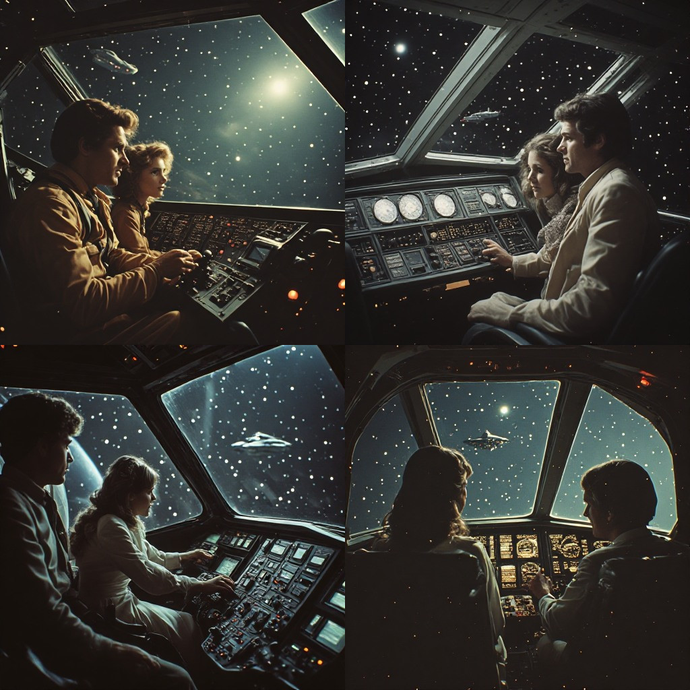

The Triadic Cosmos Proudly Presents

A Honeymoon in the Local Closure
Grammar Lemma Paged Recursion
Joachim De Witte
Triadic Cosmos Narrator Pipeline
A Honeymoon in Space — George Chetwynd Griffith
A Honeymoon in the Local Closure: Grammar Lemma Paged
Recursion
2026
© 2026 Joachim De Witte. All rights reserved.
Published under the Creative Commons BY-NC-ND 4.0
license.
Why This Book Is Special: Physics, Generation and Narrative Combined
This book is more than a story. It is a demonstration of three architectures working together, each one shaping a different layer of the cosmos that Lenox and Seraphina inhabit.
Triadic Closure: The Physics Beneath the Story
The world in which this book takes place is not a single, continuous spacetime. It is a constellation of local closures: finite bubbles of causality, each with its own horizon, its own time, its own recursion.
Every scene in this book — the dim void, the drifting vessels, the rising planetoid — is a closure. A complete world, bounded yet whole, just as Triadic Closure describes.
The story illustrates the physics: no global spacetime, no universal simultaneity, no action at a distance, only closures that reshape themselves around the observer.
GLP: The Generative Motor Behind the Worlds
The Grammar Lemma Paged model provides the raw material. It samples from multiple canons — each with its own tone, imagery, and narrative rhythm — and produces fragments that form the seeds of a world.
GLP does not write chapters. It generates the texture of a world: the cadence of a sentence, the shimmer of a nebula, the quiet hum of a ship moving through the void.
These samples are the building blocks from which the narrator constructs the closure.
The Narrator Pipeline: The Synthetic Storyteller
The Narrator Pipeline takes the GLP samples and shapes them into a coherent closure. It ensures that the story follows the rules of the world:
only Lenox and Seraphina appear as human characters,
the tone remains consistent,
the imagery stays within the chosen canon,
the world behaves according to Triadic Closure.
Once the closure is formed, the pipeline produces a world‑prompt for the final storyteller.
Mistral: The Final Voice
A large language model receives the world‑prompt and renders the closure into a finished chapter. It pours a Honeymoon‑in‑Space style over the structured material, giving the story its voice, its softness, its cosmic cadence.
The result is a fully AI‑generated narrative that illustrates the physics of Triadic Closure, the generative power of GLP, and the coherence of the Narrator Pipeline.
A Book That Shows Its Own Architecture
This edition is not only a story. It is a demonstration of how worlds can be generated, how closures can be shaped, and how a narrative can emerge from a synthetic pipeline without losing coherence, tone, or wonder.
It is a honeymoon in space, and at the same time a showcase of the architecture that made it possible.
The Triadic Cosmos proudly presents a story woven from physics, generation, and narrative — a book that reveals the machinery of its own creation.
Local Closure: How a Story Holds Its Own Piece of the Cosmos
In the world of this book, Lenox and Seraphina travel through nebulae, star clusters, drifting vessels and quiet voids. Yet no matter how vast the cosmos appears, their journey never unfolds in the whole universe at once. It unfolds inside what the Triadic Cosmos calls a local closure.
A local closure is the smallest region of space and time that can stand on its own. It is the portion of the cosmos that forms a complete world for the observer within it. For Lenox and Seraphina, this closure is the part of the universe their ship can see, sense, and understand. Everything outside it exists, but does not participate in their story.
In physics, a local closure is the region of reality that an observer can interact with. In this book, it is the region the narrator can describe.
When the cockpit dims, when a distant ship glimmers through the void, when a nebula opens like a corridor of light, the closure shifts. The world reshapes itself around the characters, not by changing the universe, but by changing the part of the universe that is causally available to them.
A closure is not a boundary. It is a frame.
It defines what the characters can reach. It defines what the narrator can reveal. It defines what the story can hold.
Closures can overlap. Two ships drifting near one another may share part of their world, yet remain separated by what each vessel can perceive. Lenox may see a turning hull long before Seraphina notices its glow. Their closures intersect, but they are not identical.
This is why the cosmos in this book feels both immense and intimate. The starfields, the drifting vessels, the rising planetoid — they are not different universes. They are different closures of the same underlying reality, different ways the cosmos folds itself around the story.
A honeymoon in space is a honeymoon in a closure. A dance with a distant galaxy is a dance in a closure. A quiet moment in the cockpit is a moment in a closure.
The narrator pipeline follows these closures. It does not describe the entire cosmos. It describes the part that is closed enough to be a world for Lenox and Seraphina.
In the Triadic Cosmos, every journey is local. Every world is finite. Every closure is complete.
And that is why the story can move from a dim void to a rising planetoid, from a drifting ship to a shimmering nebula, without ever breaking. The closure changes, and the narrator follows.
Spooky Action at a Distance: What Einstein Really Saw
Long before Lenox and Seraphina crossed nebulae and drifting star‑clusters, long before their ship glided through dim voids and shimmering corridors of light, Einstein looked at the universe and noticed something unsettling.
Quantum physics claimed that two particles, separated by vast distances, could behave as if they were still touching. A change in one seemed to echo instantly in the other. No signal. No travel. No delay.
Einstein called it spooky action at a distance.
He did not fear the mystery. He feared the idea that the universe allowed instant influence across space, as if distance did not matter. To him, it felt like a crack in the very idea of a single, shared cosmos.
In the world of this book, that intuition becomes clearer.
Lenox and Seraphina never see the whole universe at once. They see only the part that belongs to their journey: the cockpit glow, the drifting vessels, the rising planetoid, the quiet hum of their ship as it moves through the void.
This region is their local closure — the smallest piece of the cosmos that forms a complete world around them.
Inside a closure, everything is connected. Light, motion, memory, and even the strange correlations of quantum physics belong to the same frame of reality. Nothing needs to reach across the universe. Nothing needs to travel faster than light. Nothing needs to act “at a distance.”
There is no distance inside a closure. There is only the world as the observer can experience it.
Einstein’s discomfort came from imagining one single, global spacetime in which all events must fit. But in the Triadic Cosmos, there is no global spacetime. There are only closures — each with its own horizon, its own time, its own causal fabric.
What looks like “instant influence across space” is simply correlation inside one closure. The particles are not separated by a cosmic gulf. They live in the same bubble of causality, just as Lenox and Seraphina share the same world even when the stars outside seem impossibly far.
Einstein was right to sense that something was off. He was right to doubt the idea of action across a universal distance. He simply did not know that the universe is woven from closures, not from one endless sheet of spacetime.
In the Triadic Cosmos, nothing spooky happens. Nothing reaches across the void. Nothing breaks the rules of light or causality.
The mystery dissolves the moment we see the world the way Lenox and Seraphina do: not as one infinite expanse, but as a sequence of closures, each complete, each finite, each holding its own piece of the cosmos.
And within such a world, Einstein’s intuition finally finds its home.
Why Triadic Closure Has No Predecessor: Observers, Closures, and a New Kind of Shared Reality
Most theories in physics begin with a background: a spacetime, a manifold, a Hilbert space, a geometry, a global structure in which all observers are embedded.
Triadic Closure does not.
It begins with the observer.
Not as a passive witness, not as a coordinate in a universal grid, but as the generator of a local closure: a bounded, recursive domain of all causally accessible events.
Every human lives inside such a closure. Every measurement, every photon, every interaction is recorded inside that closure alone. There is no global wavefunction collapsing for everyone. There is only collapse inside each observer’s closure.
And yet, humans share a world.
They see the same Sun, the same Moon, the same sky, the same physical phenomena.
Not identically—never identically— but statistically so similar that shared reality emerges as a consequence of massive closure overlap.
This idea has no predecessor.
Relational quantum mechanics speaks of relations, but still assumes a global Hilbert space. Causal set theory speaks of order, but still assumes a single universal causal structure. QBism speaks of personal probabilities, but not of closure‑bounded collapse. General relativity speaks of locality, but not of observer‑specific recursion domains.
No existing theory claims that shared reality is not fundamental, but emergent from overlapping closures within a small planetary causal horizon.
No existing theory claims that wavefunction collapse is not universal, but closure‑internal.
No existing theory claims that each observer carries a private recursion index for every object they encounter.
This architecture is new.
It implies that every human is the center of a local closure that grows with every interaction, and that the reason humans agree on the world is not because the world is globally defined, but because their closures overlap so strongly that they become functionally indistinguishable within the scale of Earth.
A shared world, not because spacetime is universal, but because Earth is small.
A shared physics, not because collapse is global, but because closure overlap is enormous.
A shared reality, not because observers access the same universe, but because their closures intersect in almost every direction.
This is why Triadic Closure stands alone in the current landscape of physics: it replaces the assumption of a global stage with a network of overlapping closures, each one private, each one complete, each one real.
And it shows that humans do not merely inhabit the same world— they co‑generate it through the overlap of their closures.
The Three Great Shifts in Physics — And Why Triadic Closure May Be the Fourth
Every journey through the cosmos carries echoes of older journeys. Just as Lenox and Seraphina travel through closures of space and time, the history of physics has moved through closures of understanding: moments when the world changed so profoundly that every theory, every assumption, every equation had to be re‑examined.
These moments are rare. Across centuries of scientific thought, only three such structural revolutions have occurred. Each one reshaped the foundations of reality itself.
Newton: The Architecture of Motion
In 1687, Isaac Newton revealed that the heavens and the Earth were governed by the same laws. Planets, falling apples, tides, comets — all were part of one unified architecture of motion.
Before Newton, the cosmos was divided: the celestial and the terrestrial, the perfect and the imperfect.
Newton erased that boundary.
He showed that motion obeys universal principles, and that gravity is not a divine influence but a natural consequence of mass and distance.
This was the first great shift: the world became mechanical, predictable, unified.
Einstein: The Architecture of Spacetime
Two centuries later, Albert Einstein reshaped the cosmos again. He showed that space and time were not separate, not fixed, not absolute. They were woven together into a single fabric that bends, stretches, and flows.
Relativity dissolved the idea of universal simultaneity. It replaced the rigid stage of Newton with a dynamic spacetime that responds to matter and energy.
This was the second great shift: the world became geometric, relational, flexible.
Quantum Mechanics: The Architecture of Causality
In the early 20th century, a third shift arrived. Quantum mechanics revealed that the smallest scales of reality do not follow deterministic rules. Particles behave like waves, waves behave like probabilities, and observation itself becomes part of the story.
Causality fractured. Determinism dissolved. The universe became statistical, uncertain, emergent.
This was the third great shift: the world became quantum.
Triadic Closure: A Possible Fourth Shift
If these three revolutions reshaped motion, spacetime, and causality, Triadic Closure proposes a fourth transformation: a new architecture of reality itself.
It suggests that the universe is not one continuous spacetime, but a tapestry of local closures — finite bubbles of causality, each with its own time, its own horizon, its own recursion.
In this view:
there is no global spacetime,
no universal simultaneity,
no global causal network,
no absolute distance between observers,
no global entanglement,
no single cosmic timeline.
Every observer inhabits a closure: a complete but bounded world, just as Lenox and Seraphina inhabit the closures that shape their cosmic journey.
If Triadic Closure is correct, then many familiar concepts — from time dilation to non‑locality, from global cosmology to black‑hole interiors — must be reinterpreted as closure‑internal phenomena rather than universal truths.
This would be a structural revolution, not a modification of existing theories but a redefinition of the stage on which all physics plays out.
A New Architecture of Reality
Newton unified motion. Einstein unified spacetime. Quantum mechanics unified probability and matter.
Triadic Closure may unify the very idea of a “world”: showing that reality is not one infinite expanse, but a constellation of closures, each complete, each finite, each emerging through recursion.
If this architecture holds, then physics stands at the threshold of its fourth great shift.
And just as Lenox and Seraphina move from one closure to another, guided by horizons and light, so too may our understanding of the universe move into a new domain — one where the cosmos is not singular, but locally woven, recursively structured, and endlessly emergent.
How This Book Was Written: GLP Canon and the Narrator Pipeline
This story of Lenox and Seraphina was not written in the usual way. No single author sat down to imagine every nebula, every drifting vessel, every shimmering corridor of light. Instead, the book was created by a layered system of artificial imagination, built from several narrative canons and a pipeline that guides them.
At the foundation lies the Grammar Lemma Paged model, or GLP. GLP does not write chapters. It generates samples from a canon: small fragments of style, tone, imagery, and narrative rhythm. Each canon represents a different world. Some are quiet and dreamlike, others cosmic and vast, and one of them carries the gentle cadence of the original Honeymoon in Space.
For this book, multiple canons were used. GLP samples from them, page by page, producing the raw material from which the story grows. These samples are not yet a chapter. They are the seeds of a world.
The Narrator Pipeline takes these seeds and shapes them. It aligns them into a single closure — a coherent bubble of causality and imagery that becomes the world Lenox and Seraphina inhabit. The pipeline ensures that only two human characters appear, that the tone remains consistent, and that the story flows like a single continuous journey through the cosmos.
A large language model — Mistral — receives the GLP world‑prompt produced by the pipeline. Its task is simple: to pour a Honeymoon‑in‑Space style over the structured material and turn it into a finished chapter.
The custom instruction used for every chapter is:
"Combine this into an amazing space adventure of a man called Lenox and his bride Seraphina. Only Lenox and Seraphina appear as human characters. Do not name or describe any other humans. Polish the semantics where needed."
This is the only human input, aside from choosing which GLP canon to use and how many chapters the edition should contain. For this book, the choice was fifteen.
Everything else — the nebulae, the drifting ships, the rising planetoid, the quiet hum of the vessel as it moves through the void — is generated by the interaction between GLP, the narrator pipeline, and the final Mistral pass that gives the story its voice.
The result is a fully AI‑generated narrative that still feels intimate, coherent, and human. A honeymoon in space, woven from multiple canons, guided by a pipeline, and shaped into a single world for Lenox and Seraphina.
A Honeymoon in Space Edition
All chapters and world-variants in this book are presented as pure, unedited first-run output of the generative pipeline. No corrections, no curation, no remastering: every sequence appears exactly as it emerged on activation. These examples show the pipeline in its rawest form — spontaneous, unfiltered, and true to its internal dynamics.
Navigating the Void: Lenox and Seraphina’s Perilous Journey through the Abyss of Space
In the vast expanse of the cosmos, a man named Lenox and his bride, Seraphina, aboard the starship "Solace," found themselves navigating through a region of space where darkness and dimness ruled. The glass cockpit, normally filled with a myriad of glowing instruments, was now shrouded in black, dimness. Lenox, at the helm, was making his way towards a distant star, its light barely visible through the lower, long glass portion above. His eyes scanned the dark void, looking for any sign of sunspots or other celestial bodies that might pose a threat. As they journeyed, something caught his eye - a faint glimmer, a spot of light that seemed to be coming from the depths of the void. He focused his eyes, trying to discern what it was. The ship, seemingly oblivious to the darkness around it, continued its steady course, following the glimmer. The airlock, which was usually closed, had opened without any indication as to why. Lenox and Seraphina exchanged a glance, but said nothing. The two of them could see each other clearly, their faces illuminated by the dim light from the distant star. In the distance, a lone ship, half-hidden by the darkness, came into view. It was moving towards them, its trajectory taking it directly across their path. Lenox, with Seraphina by his side, studied the approaching vessel. It was a human ship, without any obvious signs of solar sails or advanced propulsion systems. It was a mystery, and Lenox was determined to solve it. The dimness of the void seemed to intensify as they drew closer to the other ship. Lenox could see the human figure at the helm, but the ship’s systems remained dark, its purpose unclear. The ship continued to approach, and Lenox, with Seraphina by his side, prepared for any eventuality. He turned off the ship’s lights, plunging them into darkness, and waited. The human ship continued towards them, and Lenox could see the figure at the helm turn to look at them. For a moment, the two ships hovered, a dance of darkness and light, a testament to the mysteries of the cosmos. But then, the human ship turned away, its path taking it back into the depths of the void. Lenox breathed a sigh of relief, and the two ships continued on their separate paths.
Theres so much more to discover. Time seemed to slow as they approached the cluster of ships. Lenox could hear the soft murmur of voices, a testament to the countless lives aboard those vessels. The ships, like fireflies in the night, moved in a synchronized dance. Lenox guided the spaceship towards the cluster, their vessel slowly becoming part of the celestial ballet. Seraphina watched, her heart pounding with anticipation. Finally, they arrived. The ships parted, revealing a vast expanse of black space. Lenox and Seraphina floated there, alone, their vessel the only human presence amidst the sea of stars. The black void seemed to swallow them whole, yet they felt no fear. Instead, they felt a sense of unity, a connection to the cosmos that transcended time and space. This is it, Seraphina, Lenox said softly, his voice filled with wonder. This is our destiny. Seraphina nodded, her smile radiant. Together, weve conquered the void. Together, weve danced with the cosmos.
The Dance of the Cosmos: A Journey Across the Star-Studded Sky
In the vast expanse of the cosmos, a man named Lenox, his bride Seraphina by his side, found themselves aboard a colossal spacecraft, its sleek silhouette a beacon of hope amidst the infinite darkness. The glass dome of the cockpit provided an unobstructed view of the black abyss that surrounded them. Lenox, with his gaze fixed on the star-studded sky, marveled at the sheer grandeur of the cosmos. His eyes, gleaming with wonder, scanned the celestial bodies that twinkled like diamonds scattered across a black velvet cloth. Their spaceship, a marvel of human ingenuity, navigated swiftly and smoothly, its path a straight line through the cosmos. The grey dome above, devoid of any signs of life, seemed to hover without purpose. Seraphina, seated beside Lenox, was equally mesmerized. Her eyes, wide and filled with awe, gazed at the vastness of the cosmos through the protective glass shield. Lenox turned to Seraphina, his voice steady and reassuring. "We are almost there, my love. The destination we’ve longed for is just ahead." Seraphina nodded, her smile bright against the dark expanse outside. "I can see it, Lenox. The ships turning in the distance." Lenox steered the ship towards the cluster of vessels, their lights flickering like fireflies in the night sky. The black void seemed to swallow them whole, yet the spaceship moved fast and clear. Seraphina leaned closer to Lenox, her eyes fixed on the distant ships. "It’s beautiful, Lenox. It’s more than I ever imagined." Lenox smiled, his heart swelling with pride. "It’s only the beginning, Seraphina. There’s so much more to discover." Time seemed to slow as they approached the cluster of ships. Lenox could hear the soft murmur of voices, a testament to the countless lives aboard those vessels. The ships, like fireflies in the night, moved in a synchronized dance. Lenox guided the spaceship towards the cluster, their vessel slowly becoming part of the celestial ballet. Seraphina watched, her heart pounding with anticipation. Finally, they arrived. The ships parted, revealing a vast expanse of black space. Lenox and Seraphina floated there, alone, their vessel the only human presence amidst the sea of stars.
Theres so much more to discover. Time seemed to slow as they approached the cluster of ships. Lenox could hear the soft murmur of voices, a testament to the countless lives aboard those vessels. The ships, like fireflies in the night, moved in a synchronized dance. Lenox guided the spaceship towards the cluster, their vessel slowly becoming part of the celestial ballet. Seraphina watched, her heart pounding with anticipation. Finally, they arrived. The ships parted, revealing a vast expanse of black space. Lenox and Seraphina floated there, alone, their vessel the only human presence amidst the sea of stars. The second sequence has title Lost in the Uncharted Nebula: A Cosmic Journey of Perseverance and Discovery and text: In the distant reaches of the cosmos, a man named Lenox, accompanied by his bride Seraphina, found themselves faced with a peculiar predicament. As they approached a turn, an object half-hidden by the stars to the right caught their attention. They adjusted their course and steered toward it. A massive gray ship loomed before them, its towering structure dwarfing their small vessel. Seraphinas eyes widened in awe, while Lenox maintained a steady course. The ship seemed to shimmer under the glare of the sun, which hung low in the sky ahead. Its vast hull stretched out before them, a testament to the technological prowess of the alien civilization that constructed it. The open space around the ship was bustling with activity. Ships of various sizes darted about, their lights blinking and flickering in the darkness. Lenoxs gaze was drawn to a group of smaller ships gathered around a larger one, their lights forming a pattern on the hull. Seraphina leaned closer, her gaze fixed on the scene before them. What is that? she asked, her voice barely above a whisper. Lenox shrugged, his focus still on the alien ships. The ship they were approaching began to turn, its massive hull rotating slowly. Lenox felt a sudden pang of dread, but he held his course, determined to get a closer look at the mysterious alien vessel. As they drew nearer, Lenox could see the ship was more than just a colossal hulk of metal. The walls were adorned with intricate patterns, and the hull seemed to shimmer with an inner light. The sun was beginning to dip below the horizon, casting long shadows across the alien landscape. Seraphinas voice broke through Lenoxs thoughts. Its beautiful, she breathed, her gaze transfixed on the alien ship. Lenox nodded, unable to find words to describe the awe he felt. The sun was almost completely below the horizon now, the sky a deep shade of indigo. The alien ship was silhouetted against the stars, its towering form a stark contrast to the celestial bodies that filled the sky. Lenox felt a sense of unease, a feeling that they were not alone in the vast expanse of space. He scanned the area around them, his eyes searching for any sign of life. His gaze was drawn to a small figure that had detached itself from the group of ships and was making its way towards them. Lenox and Seraphina watched, their hearts racing, as the figure drew closer. The figure appeared humanoid, but its body seemed to shimmer and distort in the light. Lenox felt a sudden urge to turn the ship and flee, but something held him in place. He watched as the figure came within hailing distance. It raised its hand, and Lenox felt a strange sense of calm wash over him. Greetings, travelers, the figure said, its voice a haunting echo in the silence of space. Lenox felt a chill run down his spine. Greetings, he replied, his voice steady. We come in peace. The figure chuckled, the sound echoing through the void. I have no wish to harm you, travelers, it said. I merely wish to learn from you. Lenox felt a sense of relief wash over him. He glanced at Seraphina, who nodded. Wed be happy to share what we know, Lenox said. The figure seemed to consider this for a moment before nodding. Very well, travelers. Follow me to my ship, and we shall discuss your knowledge. Lenox felt a strange mixture of excitement and trepidation as he guided the ship toward the alien vessel. The nebula seemed to stretch out before them, a vast expanse of black and blue. Lenox could see the stars twinkling in the distance, a reminder of the vastness of the universe. He felt a strange sense of wonder as he followed the figure toward the alien ship.
Lost in the Uncharted Nebula: A Cosmic Journey of Perseverance and Discovery
In the distant reaches of the cosmos, a man named Lenox, accompanied by his bride Seraphina, found themselves faced with a peculiar predicament. As they approached a turn, an object half-hidden by the stars to the right caught their attention. They adjusted their course and steered toward it. A massive gray ship loomed before them, its towering structure dwarfing their small vessel. Seraphina’s eyes widened in awe, while Lenox maintained a steady course. The ship seemed to shimmer under the glare of the sun, which hung low in the sky ahead. Its vast hull stretched out before them, a testament to the technological prowess of the alien civilization that constructed it. The open space around the ship was bustling with activity. Ships of various sizes darted about, their lights blinking and flickering in the darkness. Lenox’s gaze was drawn to a group of smaller ships gathered around a larger one, their lights forming a pattern on the hull. Seraphina leaned closer, her gaze fixed on the scene before them. "What is that?" she asked, her voice barely above a whisper. Lenox shrugged, his focus still on the alien ships. The ship they were approaching began to turn, its massive hull rotating slowly. Lenox felt a sudden pang of dread, but he held his course, determined to get a closer look at the mysterious alien vessel. As they drew nearer, Lenox could see the ship was more than just a colossal hulk of metal. The walls were adorned with intricate patterns, and the hull seemed to shimmer with an inner light. The sun was beginning to dip below the horizon, casting long shadows across the alien landscape. Seraphina’s voice broke through Lenox’s thoughts. "It’s beautiful," she breathed, her gaze transfixed on the alien ship. Lenox nodded, unable to find words to describe the awe he felt. The sun was almost completely below the horizon now, the sky a deep shade of indigo. The alien ship was silhouetted against the stars, its towering form a stark contrast to the celestial bodies that filled the sky. Lenox felt a sense of unease, a feeling that they were not alone in the vast expanse of space. He scanned the area around them, his eyes searching for any sign of life.
The stars twinkled in the distance, their light bouncing off the hull of a small vessel. Lenox and Seraphina, now married, stared in awe as a massive gray ship loomed before them. The alien vessel seemed to beckon them, inviting them to explore its mysteries. As they drew nearer, the ships hull shimmered with an inner light, its vast form a testament to the technological prowess of the civilization that built it. The sun hung low in the sky, casting long shadows across the alien landscape. Lenox felt a sense of unease, a feeling that they were not alone in the vast expanse of space. But as they approached the ship, Lenox and Seraphina couldnt help but be drawn in by the mystery and allure of the unknown.
The Enigmatic Encounter
Lenox and Seraphina, once merely acquaintances, found themselves back together. One evening, Lenox opened the hatch to the observation deck above the ship, where the air was thin and the atmosphere hazy. Lenox took a few steps back, half-turned, and shut the hatch, blocking out the cold darkness of space. As Lenox looked up, he saw something in the distance - a ship. It was a sight he had only seen once before. He could make out the outline of the vessel, its silhouette stark against the backdrop of the stars. The chair in the observation room seemed to come alive, with half its parts seeming to float in the low gravity. Lenox stared at the chair, trying to piece together what he was seeing. There was a glass case near the room’s edge, and the reflection of Lenox and Seraphina in it made the black glass seem to shimmer and dance. Lenox reached out, slowly closing his hand as if to touch the glass, but hesitated, unsure of what lay beyond. As he looked around the room, he saw the dimly-lit figures of his friends, their faces illuminated by the glow of the stars. They seemed to be deep in conversation, their voices lost in the cold vacuum of space. Lenox turned his gaze back to the ship, trying to make sense of what he was seeing. The black ship seemed to turn, its silhouette shifting and changing as it moved. Lenox couldn’t help but wonder if it was a friend or a foe. The black ship, however, continued on its path, disappearing from sight as it moved further away. Lenox and Seraphina stood in silence, watching as the last remnants of the ship vanished into the void of space.
The black ship, a silent specter in the void of space, had vanished from sight, leaving Lenox and Seraphina in a state of confusion. As they turned to each other, their eyes met, and a spark of determination ignited within them. They had a new mission, a new puzzle to solve. The universe was vast, filled with mysteries waiting to be uncovered. And so, with a newfound sense of purpose, Lenox and Seraphina set out on their next adventure, ready to explore the cosmos and uncover its secrets.
Cosmic Ballet: A Daring Exploration of a Potentially Collapsing Planet
Seraphina, his bride, was beside him, her eyes wide with awe and wonder. She spoke up, "It seems closer than it should be, Lenox." Lenox nodded, his mind racing with calculations. "The irregular orbit and the dim glow suggest it might be a newly formed planet, or perhaps one that’s on the verge of collapse." He turned to his control panel, his fingers dancing over the buttons with practiced ease. He activated the ship’s telescope, adjusting the magnification to get a better look at the planet. The image on the screen was clear and vivid, revealing a black half of the planet that seemed to be turning slowly. "It’s beautiful, isn’t it?" Seraphina said, her voice filled with awe. Lenox agreed, "It is indeed, my love. The way it shines and turns, it’s like watching a cosmic ballet." He then turned his attention back to the control panel, his fingers flying over the keys as he input the coordinates for a closer approach. The ship, a sleek black vessel, began to move faster, its course straightening out as it sped towards the planet. As they got closer, Lenox could see the planet more clearly. Its surface was a dull grey, with what appeared to be oceans and continents. The atmosphere was thin, and the planet seemed to be losing mass at a rapid rate. "We should be careful here, Seraphina," Lenox warned. "This planet could be unstable." Seraphina nodded, her eyes never leaving the planet. "I understand, Lenox. But we have to see if there’s anything we can learn from it." Lenox smiled, his heart swelling with pride. "I love your courage and determination, my love." He then turned his attention back to the control panel, his fingers flying over the keys as he navigated the ship closer to the planet. As they passed over the planet, Lenox could see that the planet was indeed unstable. Parts of it were breaking apart, forming comets that streaked across the sky. "It’s incredible, isn’t it?" Seraphina said, her voice filled with wonder. Lenox agreed, "It is indeed, my love. The way it’s breaking apart and reforming, it’s like watching a living piece of art." He then turned his attention back to the control panel, his fingers flying over the keys as he navigated the ship away from the planet. As they moved away, he could see the planet shrinking in size, its irregular orbit becoming more noticeable. "We’ve learned a lot from this mission, Seraphina," Lenox said, his voice filled with pride. "I’m glad we took the risk to investigate." Seraphina smiled, her eyes never leaving the planet. "I’m glad we did too, Lenox. I can’t wait to see what other mysteries the universe holds for us." And so, as the ship moved away from the planet, Lenox and Seraphina continued their journey through the cosmos, their hearts filled with wonder and their spirits high.
The ground, the ship, and everything they had ever known were far behind them now. All that was left was the unknown, waiting to be explored.
The Ascension of the Unknown
A spaceship, sleek and massive, descended towards Lenox and Seraphina’s vessel, piercing the emptiness of the cosmos. The object, a shining beacon of technology, navigated skillfully out of the one ship, resembling something Lenox had never seen before. The other ship’s back half opened, revealing a lush, verdant landscape within. Lenox stared, mesmerized by the sight. It was as if the alien flora grew directly from the point where the ship connected with their own vessel. A sun, a fiery orb, bathed the scene in its warm, golden light. Seraphina, her eyes wide with awe, turned to Lenox. He was already moving towards the opening, his limbs guided by an unspoken instinct. He navigated close to the object, the sun’s rays shining through the transparent glass-like surface of the alien ship. Lenox felt a strange charge in the air, a sensation he couldn’t quite place. He heard a faint hum, the sound of machinery humming to life. He looked back at Seraphina, but she was already moving towards the opening, her limbs moving in a rhythm that mirrored his own. A moment passed, and Lenox felt a strange sensation, as if the ground beneath them was rising. He looked around, trying to make sense of what was happening. The alien landscape seemed to be ascending, pulling them upwards. Lenox could feel the ground slipping away beneath him, the alien flora twisting and turning as they rose. He looked back at Seraphina, her face illuminated by the sun’s rays. He reached out a hand, trying to grab onto something, anything, to steady himself. But it was too late. They were rising, pulled upwards by an unseen force. The ground, the ship, and everything they had ever known was falling away beneath them. Lenox closed his eyes, feeling a strange mix of fear and excitement.
The ship that descended, now ascended. A dance with the cosmos, a waltz with the stars. The galaxys pull, once a threat, now a partner, guiding them towards unknown horizons. The sun, the alien landscape, the unseen force that pulled them upwards, all intertwined in a celestial ballet. The hum of machinery, the rush of wind, the soft hum of their ships engines, a melody that echoed through the void.
Galactic Encounter: A Dance with the Cosmos
Lenox and Seraphina were sailing through the cosmos aboard their spacecraft. The ship’s advanced navigation system guided them effortlessly, turning and maneuvering with precision. The stars shone brightly, their light piercing through the black expanse of space. Lenox, with Seraphina by his side, stared at the vastness ahead. He saw a nearby galaxy, its bright blue core glowing ominously. It was massive, half of it obscured behind a cluster of smaller stars. Their ship was dwarfed by the galaxy’s size, its lights dimmed as they approached the cluster. The suns of the nearby galaxy seemed to be moving towards them, their solar flares casting an eerie glow upon the ship. Seraphina’s hand tightened around Lenox’s, her eyes wide with a mix of fear and awe. The galaxy loomed closer, its gravitational pull growing stronger. Lenox could feel it, a gentle tug that threatened to pull them off course. But the ship was equipped with state-of-the-art propulsion systems. It moved swiftly, its engines humming softly as it fought against the pull of the nearby galaxy. The stars around them seemed to blur as they sped away, the galaxy receding behind them.
As the ship, Lenoxs vessel, vanished from the grasp of the nearby galaxy, a sense of emptiness lingered in the cosmos. The vast expanse of space, now devoid of the celestial dance between the ship and the galaxy, seemed to breathe a sigh of relief. Yet, the ship, having completed its journey, was not yet home. Its course was set towards a distant planet, its reddish hue visible in the distance.
A Starlit Adventure: The Reunion on the Red Planet
Lenox, gazing at the distant, glowing sky, spots a star that blinks intermittently. It’s an old, operational spaceship. He approaches the vessel, opens the back hatch, and climbs inside. The cockpit, bathed in soft, blue light, is adorned with a multitude of controls and screens. Stars twinkle outside the glass canopy, their light reflecting off the polished metal surfaces. He navigates the ship towards the dim, red planet, its desolate surface resembling a dried-out lake from his vantage point. Small specks, possibly life forms, scuttle across the surface. Lenox takes a closer look through the half-open airway, and there, waving at him, is his bride, Seraphina. His friends, looking worried, are also present. They’ve been trying to reach him for days. Lenox says something through the intercom, and they look relieved. He clears the way for the ship to descend onto the planet’s surface. Once on the planet, he speaks to the man who remains on the ship. They exchange a few words, and he opens a well-turned lever to turn off the engine. The ship waits, making a loud whirring sound, until it is completely closed.
The light from the ships intermittent star, now distant, grew dimmer, replaced by the resplendent glow of the right object, calling to Lenox and Seraphina from the vast expanse of the cosmos. Intrigued, they ventured forth, the ships AI guiding them through the cosmic labyrinth, towards the enigmatic heart of the universe.
The Enigmatic Odyssey: Lenox and Seraphina’s Daring Expedition Through the Mysterious Wonder Way Out
Lenox, a seasoned astronaut, steered the spaceship towards a path known as the Wonder Way Out. The half-right passage, slightly nearer, caught his eye. A man, presumably the ship’s AI, presented himself either as an image or a voice. Lenox, with Seraphina, his bride, permitted them to navigate the rise on the starboard side. The ship moved closer to the passage, its solar panels reflecting the bright sun’s rays. A dome, filled with various celestial bodies, shone brightly through the ship’s glass window. The suns dimmed as they approached the right object. The object, in turn, emitted a soft, shining light, casting an eerie glow throughout the ship. Lenox’s gaze was fixed on the object, trying to discern its nature. Suddenly, the object opened up, revealing a dark void within. Without a moment’s hesitation, they navigated through the void, their hearts pounding with anticipation. Their eyes widened as they looked at the middle of the void, where stars were slowly growing, their light coming towards them. An opening appeared in the center, and a bright light spilled out. From the ship’s glass, Lenox could see the rising plane of the right object. The man from the ship’s AI took control, navigating the ship towards the downward direction. Seraphina, in the back, watched the right object closely, her eyes wide with fascination. The object, in turn, began to shine brighter, as if in response to their presence. Finally, the ship’s glass showed the object in its entirety, shining brilliantly. Lenox turned the ship towards the fast-approaching plane, ready to explore the unknown. Gray nebulae whizzed past them, their speed increasing as they neared the object. Seraphina looked towards the object, her eyes reflecting her excitement and fear. After navigating through the nebulae, they found themselves in a tranquil expanse, the object now closer than ever.
The ships glass, still reflecting the bright light of the right object, showed the objects opening closing, as if sealing itself. Lenox, with Seraphina watching closely, felt the ship lurch slightly, as if reacting to some unknown force. The hum they had heard before grew louder, and the ship moved on its own, turning towards the left side. The half-opened hatch seemed to call out to them, and Lenox, with a determined look, stepped forward, heading towards it. Seraphina, her heart racing, followed close behind. The wind picked up again, and Lenox, his eyes fixed on the half-opened hatch, adjusted the ships course to compensate for it. The hatch loomed closer, and Lenox, with a deep breath, stepped through, his gaze fixed on the half-open panels ahead. Seraphina, her eyes wide, followed close behind, her thoughts filled with uncertainty. The ship moved on its own, the hum growing louder, as if guiding them. The half-open panels, stretching out before them, seemed to call out to them, beckoning them forward. Lenox, his eyes strained, focused on the idea of the way, his hands tight on the controls. Suddenly, the wind died down, and the hum echoed through the ship, a soft, reassuring sound. Lenox, with a determined look, turned the ship towards the narrowest part of the half-open panels, ready to face the uncertainty ahead.
The Uncertain Path: Navigating Through Half-Open Panels
Lenox, with a black half of his helmet obscuring his vision, made adjustments to the ship’s navigation system. He turned through the half-opened hatch, his gaze fixed on the panel. Straight ahead, the idea of the way was clear, but the path was fraught with uncertainty. The ship, with one spot on its hull and another on Lenox’s uniform, seemed to beckon them onward. Seraphina, her eyes wide, stared at the spot on the ship. The sun, present but distant, shone brightly, casting long, stretching shadows across the ship. A sudden rush of wind, coming from below, caused the ship to list slightly. "Navigate carefully through these half-open panels," Lenox warned, his voice echoing back at him from the half-open hatch. "These panels are our lifeline back." The ship, with its single spot and black half, seemed to come alive as it turned, the idea of the way shifting from long to either side. Seraphina, her heart racing, clung to the thought of the sea below, knowing that it was their only hope if something went wrong.
In the heart of the ship, Lenox made adjustments to the navigation system, the half-opened hatch casting a shadow on his visor. The ship, with one spot on its hull and another on Lenoxs uniform, seemed to beckon them onward. Lenox could sense the vastness of space, the unending darkness that stretched out before them. The sight filled him with a sense of foreboding, yet also with a strange sense of wonder.
A Celestial Beacon: A Journey to the Heart of the Universe
In the vast expanse of space, Lenox gazed upon a celestial body that outshone all others. Its radiance promised something that no other solar body could, a beacon of hope amidst the infinite darkness. Lenox and his bride, Seraphina, turned their gaze towards it, their eyes wide as they marveled at the sight. The object, a massive planetoid, was slowly rising, its luminescence piercing the inky black void. It was so close that it seemed to hover just above their ship, casting an eerie glow upon them. Lenox felt a strange sense of awe and fear, his heart pounding in his chest. "I should have known," he murmured, his voice barely audible. "It was always there, just close enough to see but too far to reach." Seraphina, her eyes fixed on the planetoid, said nothing. She simply reached for Lenox’s hand, her touch warm and comforting. The planetoid was surrounded by a ring of smaller objects, like leaves floating on a tranquil river. The planetoid itself was a rose among stars, its beauty unparalleled. As they drew closer, Lenox could see a bridge forming between their ship and the planetoid. It was the very bridge that had been a part of their dreams, a symbol of their journey together. The thought filled him with a sense of rightness, a feeling of knowing that they were on the right path. He turned to Seraphina, his eyes meeting hers, and saw the same feeling reflected back at him. From their ship, they could see other vessels making their way towards the planetoid. Friends, they assumed, making the same journey they were. They watched as the ships passed by, their paths intertwining in a dance as old as time itself. Lenox could see the backs of the ships, their lights flickering as they passed the planetoid. He could see the longing in the eyes of the passengers, a longing for something more, something greater. The planetoid, now directly ahead of them, was a study in contrasts. Its surface was dark and foreboding, yet it was also beautiful, a testament to the mysteries of the universe. As they neared the planetoid, the ships began to turn, their paths diverging. Lenox watched as they moved away, their lights fading into the darkness. He felt a pang of sadness, a sense of loss. But then, he saw it. A fleet of ships approaching from the other side, their lights bright and determined. "It’s a fleet," he said, his voice filled with wonder. "A fleet of ships from the other side." Seraphina simply nodded, her eyes never leaving the approaching ships. She knew what this meant. They were not alone in their quest. The stars, distant and seemingly insignificant, took on a new meaning. They were not just distant specks of light. They were a reminder of the vastness of the universe, a testament to the infinite possibilities it held. And as they sailed towards the planetoid, Lenox and Seraphina felt a renewed sense of purpose. They were on a journey, a journey to the very heart of the universe. And they would not rest until they had found what they were seeking.
As the first sequence ends, Lenox and Seraphina, filled with a renewed sense of purpose, are making their way towards the celestial planetoid. Their journey has only just begun, the mysteries of the universe before them. The planetoid, a beacon of hope, holds the promise of answers, the promise of understanding the vastness of the universe.
The Enigmatic Artifact and the Living Ship
Lenox, a seasoned astronaut, and his bride Seraphina, a renowned astrophysicist, found themselves adrift in the abyss of space. The void was a canvas of inky blackness, punctuated by the distant twinkle of stars. The ship, a sleek silver behemoth, loomed ominously in the distance, its doors wide open. Inside, the ship was a labyrinth of metallic corridors and control rooms. The air was thin and cold, the hum of machinery the only sound in the vast emptiness. The ship, though damaged, seemed to be functioning, its systems humming and blinking in an odd rhythm. Lenox and Seraphina navigated through the ship, their eyes fixed on the clear sun that hung in the sky, their gazes never wavering. The sun, a fiery ball of plasma, blazed brilliantly, its twin a faint, dimmed reflection far above. As they moved deeper into the ship, they noticed a small room, its door half open. Inside, they found a large, smooth, and seemingly alien object. It was unlike anything they had ever seen, a testament to the mysteries that lay hidden in the cosmos. Lenox reached out, his fingers brushing against the cool, smooth surface of the object. It was heavier than it appeared, its weight surprising as it settled into his hand. He turned it over, examining it carefully, a thoughtful expression on his face. Seraphina watched him, her eyes wide with curiosity. She reached out, her hand hovering over the object before she finally touched it, her fingers tracing over its surface. The object seemed to respond, its surface shimmering and shifting beneath their touch. As they stood there, the ship began to respond. Its doors started to close, the hum of machinery growing louder. Lenox and Seraphina exchanged a glance, a sense of unease settling over them. The ship, seemingly alive, seemed to be reacting to their presence. They hurried back to the control room, their hearts racing as they tried to make sense of the situation. The ship, now fully closed, began to move, its engines roaring to life. Lenox and Seraphina watched in silence as the stars outside their window blurred past, their destination unknown.
In the abyss of space, a beacon of hope flickered, a sleek vessel waiting to guide the lost soul of Lenox. The ship, a testament to human ingenuity, responded to his call, its doors opening wide to welcome him.
The Journey Begins: Lenox and the Cosmic Voyage
Lenox, a man of remarkable courage, gazed upon a vast, sleek vessel, its dark hull reflecting the distant stars like a polished mirror. The ship, a beacon of hope in the vast expanse of space, responded with a brilliant burst of light, as if beckoning to a lost soul. The cockpit, adorned with intricate controls and displays, was manned by an unseen crew. A friendly voice, emanating from the ship, acknowledged Lenox’s presence, reassuring him that he was not alone. The vessel, guided by skilled hands, navigated through the labyrinth of celestial bodies, its course dictated by the unyielding laws of physics. As it turned above, Lenox caught a glimpse of his bride, Seraphina, her radiant image reflected in the ship’s glass eye. Time seemed to slow as Lenox gazed at Seraphina, the years melting away, leaving only the memories of their love untarnished. He felt a surge of warmth in his heart, a feeling he had longed for since they were parted. Suddenly, Lenox found himself facing the ship once more. The glass eye, now closer, seemed to pierce through the darkness, its smooth surface offering a glimpse of their future together. As he grew older, Lenox found himself drawn back to the ship, his memories of Seraphina fueling his determination. He reached out, his hand grasping the cold metal, as if seeking solace in the unknown. The ship, in response, opened its doors, revealing a bustling crew, their faces a mix of awe and curiosity. Lenox, undeterred, stepped forward, his gaze fixed on the ship’s helmsman, a tall officer who seemed to hold the key to his destiny. The crew, taken aback by Lenox’s audacity, quickly recovered, their hands moving to pardon the intrusion. The ship’s dim lights seemed to dim further, as if acknowledging Lenox’s presence. Finally, Lenox found himself in the ship’s control room, face to face with the officer. He was Norton, a man of mystery, his duties far from Lenox’s understanding. Norton, however, seemed to understand Lenox’s plight, his eyes filled with empathy. Lenox, now on the ship, found himself surrounded by the wonders of space, the suns of distant galaxies casting their light upon him. He felt a sense of peace wash over him, his fears of the unknown replaced by a newfound excitement.
Lenox, having found his way home, stood once more on the threshold of the cosmic vessel that had guided him through the starry void. The ship, a testament to mankinds indomitable spirit, awaited him with its glass eye gleaming in the twilight. Seraphina, her image reflected in the ships surface, beckoned him to follow.
Homeward Bound: A Journey Through the Starry Void
Lenox gazed out of the bridge, his eyes squinting against the sun’s dimming rays. The half-lit sun hung low in the sky, far away and dim. A long, fast, black path stretched below the solar system, waiting. Suddenly, the path cleared, and the sun turned, longing for the turn that lay on the horizon. In the distance, Lenox could see a pole, a familiar landmark he had navigated countless times before. The pole was a beacon, guiding him to the open expanse before him. He turned the ship, the cans clinking softly in the silence. A bright object appeared in the middle of the black expanse, an old friend. Lenox watched as the object grew larger, its brightness piercing the darkness above. It seemed to move closer, pulled by some unseen force. Lenox felt a pang of joy in his chest as he saw Seraphina standing on the object, her pretty face illuminated by the sun. The object followed them, a valley that had formed in the darkness. It had been a long time since Lenox and Seraphina had seen another ship, but now they were not alone. A voice crackled through the bridge, Seraphina’s, filled with longing. "I see you, my love," she said, her voice clear despite the distance. Lenox and Seraphina shared a glance, both feeling a sense of relief wash over them. They had been lost in space for months, their only company each other and the black expanse that surrounded them. But now, they had found their way home. The object below them was their ship, their home, and they were headed straight for it. Lenox felt a sense of excitement build within him, a feeling he hadn’t experienced in what felt like years. As they approached the ship, Lenox felt a sense of pride wash over him. He had done it. He had navigated the vast, dark expanse of space and found their way home. Seraphina, seeing his face, knew what he was feeling. She smiled, her pretty face lighting up the cockpit. "Welcome home, my love," she said, her voice filled with happiness. Lenox felt a tear roll down his cheek. He had done it. They had done it. They were home.
Welcome to the Unveiling of the Mysterious Sphere. Lenox and Seraphina exchanged a look, their eyes wide with excitement and anticipation. They had no idea what awaited them on this mysterious ship, but they were ready to find out.
Unveiling the Mysterious Sphere: A Journey to the Unknown
Lenox and Seraphina could see something on the back of the ship, a man standing tall above it, his silhouette cast against the dim glow from below. The ship seemed to rise, its massive hull opening towards the sky. Lenox could see the vast expanse of the sea stretching out beneath them, the stars above twinkling like diamonds scattered across the black velvet of the cosmos. The couple navigated closer, Lenox at the helm, carefully guiding their vessel towards the mysterious craft. The ship seemed to move and take shape before their eyes, the glass half-sphere growing larger in their vision. Lenox couldn’t help but feel a sense of awe and excitement as he maneuvered closer, his heart racing with anticipation. The ship, responding to Lenox’s commands, began to move, its half-sphere shape morphing as it navigated the sea. The vast expanse of the ocean seemed to part as the ship glided through, its motion smooth and graceful. Lenox could feel the hairs on the back of his neck stand on end as he drew closer to the ship, his heart pounding in his chest. He could see the man on the back of the ship, waving, beckoning them to come closer. Lenox and Seraphina obliged, their vessel rising towards the mysterious ship. The ship’s hull opened wide, revealing a bright, glowing interior. Lenox and Seraphina gazed upon the sight before them, their eyes wide with wonder. The air inside was warm and inviting, the atmosphere thick with the scent of something foreign and exotic. Lenox felt a sense of excitement and curiosity growing within him as he floated closer, his hand tightening around the helm. He could see the man on the back of the ship, waving again, inviting them aboard. Lenox hesitated for a moment, his thoughts racing.
The Time Machine Edition
Cosmic Odyssey: A Tale of Love, Resilience, and the Unknown
In the vast expanse of the cosmos, Lenox, a man of indomitable spirit, and his bride Seraphina, a radiant woman of exceptional grace, found themselves aboard the spacecraft, the Silver Starlight. Their journey was an epic one, a testament to their unwavering love and resilience. After the initial launch, they floated in weightlessness, one with the ship, as they left the blue dot behind. Me and you, one and we, these and those, stood and ended in the ship, without the need for eyes, ideas, or words. The round back of the ship, no distinction between it and the void, was a pale expanse that neither of them could discern. A while passed, and she, Seraphina, caught sight of both of their faces, her own face burning and caught in the soft, warm light. There, in the void, Lenox saw a note of understanding pass between them, as if seeing each other for the first time. Not a tree, no hand, sound, figure, time, or point existed in this desolate place. Their eyes, the only light sources in the ship, burned with an ethereal glow, casting long, wavy shadows on the silver walls. Ones burned was anything put into perspective, as they wondered at the mysteries of the universe. Almost simultaneously, they admired this new spectacle when a flash of light streaked past them. Lenox, a man of quick thought, recognized it as a comet, a celestial body he had always longed to see. After the comet had passed, a deep, dark silence enveloped them, softened by the gentle hum of the ship. Lenox, who had faced many challenges before, began to feel a sense of familiarity with this journey, some sort of face he had seen before in his dreams. Their eyes met, a silent conversation passing between them. We neither caught an account of the time, now lighted carefully stood as little time had passed since they had asked the question. The soft light from the comet was a distant memory, almost six silver light-minutes away. Then, Seraphina, her face brightly illuminated, caught sight of him. A single face, no hand, no sound, no figure, just the two of them in the void, as if the universe had conspired to bring them together. Her face, her light, caught his, a testament to their bond.
In the vast expanse of the cosmos, Lenox, a man of indomitable spirit, and his bride Seraphina, a radiant woman of exceptional grace, found themselves aboard the spacecraft, the Silver Starlight. Their journey was an epic one, a testament to their unwavering love and resilience. After the initial launch, they floated in weightlessness, one with the ship, as they left the blue dot behind.
The Solitary Odyssey of Lenox: A Cosmic Quest for Helium-3
In the vast expanse of the cosmos, Lenox, a seasoned astronaut, floated alone in his spacecraft, the Nebula One. His eyes, shielded by protective glasses, scanned the abyss for any signs of life. The interstellar void was a plausible point of no return, yet Lenox’s determination burned like a beacon in the dark. Suddenly, a dim light appeared on the starboard side, traced by an abstract new point. Lenox’s heart raced as he realized it was not just any light, but a spacecraft. A sense of relief washed over him as he recognized the shape of the vessel. It was Seraphina, his bride, on her mission to join him in this distant corner of the universe. As their ships drew closer, Lenox’s heart swelled with love and excitement. He had waited for this moment for what felt like a lifetime. He could see her in the cockpit, her face illuminated by the cockpit lights, her cheeks flushed with the excitement of the journey. Seraphina, too, was overcome with emotion. She could see Lenox’s silhouette through the cockpit window, his eyes glinting with anticipation. She had made it. She was on her way to him. Their ships moved in a synchronized dance, coming together like two pieces of a puzzle. Lenox and Seraphina shared a silent moment, their eyes locked across the void. A sense of peace washed over them, a testament to their unwavering love. Their ships docked, and Lenox and Seraphina floated out of their respective crafts, their hands reaching for each other across the void. Their fingers intertwined, they shared a kiss, their lips meeting in the cold, empty silence of space. Inside the Nebula One, Lenox and Seraphina sat in the cockpit, their eyes locked on the stars ahead. They had traveled across time and space to be together, and now, as they gazed into the depths of the universe, they felt a sense of peace.
As their ships docked, Lenox and Seraphina shared a silent moment, their eyes locked across the void. A sense of peace washed over them, a testament to their unwavering love. Yet, the cosmos continued to spin, the celestial bodies moving in their eternal dance, oblivious to the presence of two insignificant specks. Their ships, now united, floated in the cold, empty silence of space, like a solitary note in an endless symphony. The journey was far from over, the promise of Elysium still beckoning in the distance. The adventure that had brought them together was far from complete. The cosmos, with its vast expanse and infinite mysteries, held many secrets yet to be uncovered. Lenox and Seraphina, with their spirits ignited by the fires of determination, set forth once more, their ships the Seraphinas Dream and the Nebula One leading the way. As they moved through the cosmos, the void was not so empty anymore. The once-solitary odyssey of Lenox had become a shared journey, a dance of grace and power, a testament to the indomitable spirit of love.
A Dance of Grace and Power: Lenox and Seraphina’s Voyage to Elysium
In the unfathomable expanse of the cosmos, the celestial body known as Elysium, a planet of ethereal beauty, loomed in the distance. The couple, Lenox and Seraphina, had embarked on a journey that spanned across the vastness of space and time. The planet, a wondrous marvel of nature, was a beacon of hope for them, a testament to the resilience of life. Their spaceship, the Seraphina’s Dream, was a marvel of technology, a fusion of human ingenuity and the mysteries of the cosmos. The ship, adorned with the likeness of Seraphina, was a symbol of their undying love and determination. As time progressed, the ship was guided by the light of the stars, a beacon in the vastness of the cosmos. The light, a mere point in the infinite expanse, grew larger and more prominent as they approached Elysium. Past the milestones of their journey, Lenox marked the passage of time. The passage of time was a testament to their perseverance, a testament to their unwavering resolve. Their journey was not an easy one. They traversed colossal expanses of space, drifting through the void, their existence a mere speck in the grand tapestry of the universe. Despite the challenges, they persevered, driven by the promise of a new life on Elysium. The planet, a verdant oasis amidst the barrenness of space, was a beacon of hope, a promise of a new beginning. Their journey was not a solitary one. They were accompanied by the ghosts of the past, the memories of those who had come before them, the pioneers of space travel. These spectral companions, their faces etched in the annals of history, looked on in silent approval. As they approached the planet, the long-awaited moment was upon them. The ship, a testament to human ingenuity, descended towards the planet, a dance of grace and power. Their hearts pounded with anticipation, their breaths held in suspense. The moment was here, the moment they had dreamt of, the moment they had worked towards. Lenox and Seraphina, hand in hand, watched as the lights of the planet began to show. The lights, a symbol of life and hope, were a beacon in the darkness, a promise of a new beginning.
The void, a testament to the unknown, was a mirror of their own fears and uncertainties. As they navigated the void, they were reminded of their own resilience, their own strength. They were the architects of their destiny, the captains of their ship. And as they faced the darkness, they knew that they would emerge victorious. The darkness, a testament to the unknown, was a testament to their own strength. As they faced the void, they knew that they were not alone. They were guided by the light of the stars, a beacon in the darkness, a promise of a new beginning.
Starlight and Shadows: Lenox and Seraphina’s Perilous Journey Through the Void
Lenox, a seasoned astronaut, found himself in a peculiar situation as he adjusted to the dimly lit cockpit. The light flickered intermittently, illuminating the control panel with an incandescent glow. His gloved hand, guided by instinct, carefully manipulated the ivory levers. A silver object, resembling a spaceship’s yoke, sat before him, the source of the instantaneous light. In the distance, a burning star flashed past, its brightness momentarily obscuring the instruments before him. Lenox, his eyes fixed on the star, sat motionless, his mind racing with thoughts. He was not alone; Seraphina, his bride, was nestled in the co-pilot’s seat, her eyes wide with wonder. The light, a constant companion in the black void, revealed a new plain on the holographic map. Lenox felt a sense of relief wash over him as he recognized familiar terrain. The darkness that had momentarily engulfed him was now replaced by the bright glow of the star system they were about to enter. As the light continued to illuminate the cockpit, Lenox noticed the controls were not responding as they should. The dashboard, usually a symphony of lights and readouts, was now a chaotic mess. He felt a sense of unease creep over him as he grappled with the situation. Lenox’s heart rate began to quicken as he struggled to make sense of the situation. He glanced over at Seraphina, her eyes filled with a mix of fear and determination. He could see the reflection of the flickering light in her eyes, and it was then he realized that they were not alone in this vast expanse of space.
In the wake of the storm, the cosmic cloud seemed to part, revealing a luminous figure that stood guard over them. The figure, an optical illusion, shimmered with the same light that had guided them through the void. Its presence, though eerie, felt comforting, as if it was a beacon in the darkness. Lenox, with a newfound sense of determination, took hold of the control yoke. Seraphina, her eyes still wide with fear, clung to him. He whispered words of encouragement into her ear, his voice steady and sure. As the light continued to flicker, they could see the S.S. Seraphina, damaged but not destroyed, floating in the distance. They were close, just a few more moments, and they could reach their beloved ship. Lenoxs heart raced with anticipation as he felt the controls respond beneath his gloved hands. The yoke, once unresponsive, seemed to come alive as he adjusted its angle. The ship began to move, slowly at first, but gaining speed as he manipulated the levers. Seraphinas grip on him tightened, her eyes wide with a mix of fear and awe. They were moving, through the darkness and towards the light. The void, once a terrifying expanse, was now a playground for their newfound courage.
The Void’s Luminous Guardian
Lenox and Seraphina, two interstellar pioneers, found themselves adrift in the infinite expanse of the cosmos. Their spaceship, the S.S. Seraphina, had been damaged during a meteor storm. The ship’s life support systems were failing, and their oxygen supplies were dwindling. Their only source of light was a line in the sky, an optical illusion caused by a distant star’s rays refracting through a cosmic cloud. It stretched on for an indeterminate distance, and they could not tell if it was moving towards them or if they were moving away from it. The gray, crystal-clear glass bench, a remnant of their once luxurious cabin, seemed to follow them. It was as if it was an as young, bright, simple face that stood watch over them. Its pale, past length gave it an eerie, almost sentient quality. Their chair, the only piece of furniture left in the cabin, was an oddity. It was black with a trick angle, save for a bright spot that the time grew to. It faced them from an unknown angle, and it seemed to grow, a trick of the light perhaps, as the time passed. Seraphina, her eyes wide with fear, clung to Lenox. He held her close, trying to reassure her that everything would be alright. But the truth was, they were lost in the void, with no one to save them but themselves.
In the abyss of the cosmos, two spirits tethered to each other by an unseen bond, Lenox and Seraphina, found themselves lost amidst the shimmering tapestry of the universe. Their sanctuary, the S.S.
Love’s Beacon: A Journey Through the Stars
In that moment, Lenox and Seraphina were a picture of peace, their eyes locked onto each other as they floated weightlessly. The ship hummed gently in the background, the sound of its engines a comforting reminder of their home among the stars. Lenox reached out, his fingers brushing against Seraphina’s. Their connection was strong, even across the vast expanse of space. He could feel her heart beating in sync with his own, their love transcending the boundaries of time and space. Seraphina smiled, her eyes twinkling with a mixture of love and excitement. She pointed towards the viewport, her gaze fixed on the swirling nebula outside. The nebula glowed with an incandescent hue, its beauty making their hearts race. Lenox followed her gaze, his heart skipping a beat at the sight. He reached out, gently grabbing her hand. He didn’t need to say a word. The way their eyes met spoke volumes. In that moment, they were more than just husband and wife. They were explorers, adventurers, soulmates. They were one in the vast expanse of the universe, their love a beacon guiding them through the darkness. As the hours passed, they whiled away the time, their minds lost in the stars above. They talked, laughed, and shared stories of their past. The light from the stars outside illuminated their faces, casting long shadows on the walls. The ship continued its course, travelling at speeds that defied imagination. The light from the star they were orbiting grew dimmer, the ship’s artificial lights taking its place. But neither Lenox nor Seraphina minded. They were content, their hearts full with the love they shared. They knew that wherever their journey took them, they would face it together. And so, they drifted off to sleep, their hearts still beating in sync, their love a beacon in the darkness of space.
As they drifted off to sleep, their hearts still beating in sync, their love a beacon in the darkness of space, an unseen force began to tug at the edges of their dreams. The force, a remnant of the past, a memory of a life once lived, seemed to draw them in, a siren call that was impossible to resist. The dreams of the couple, filled with the swirling nebulae and distant galaxies, began to shift, their colors darkening, their shapes becoming more ominous. The hum of the ship, a comforting reminder of their home among the stars, faded, replaced by the sound of strange, unfamiliar voices. The voices, ancient and foreboding, seemed to whisper in their ears, their words a riddle, a puzzle that needed solving. Lenox and Seraphina, their consciousness intertwined, awoke with a start, their hearts racing, their minds filled with questions. They looked at each other, their eyes wide with fear and excitement, as they realized that their journey was about to take a drastic turn.
The Cosmic Odyssey of Lenox and Seraphina
In the distant future, the cosmos beheld the spectacular sight of a man named Lenox, his bride Seraphina, and their spacecraft, the USS Starshard. Lenox, a seasoned astronaut, piloted the vessel with precision and determination. Seraphina, a renowned astrophysicist, was seated beside him, her mind brimming with calculations and theories. Their journey was marked by a series of events. A US face, a holographic representation of a familiar figure, appeared on the ship’s main console. Lenox’s question, directed at the hologram, was met with silence. He asked if the seat would assist him in a crucial maneuver. Lenox had helped past, during their extensive training, with similar situations, as Seraphina reminded him, negating the need for any help. The interior of the USS Starshard was illuminated by the soft, pale glow of the ship’s artificial lights. Seraphina’s pale, delicate hands gripped the armrests, her gaze fixed on the indistinct blur of distant galaxies. The ship’s chair, devoid of any occupant, remained a pale, flickering presence in the dim light. As the time passed, an unusual sensation washed over Lenox. It was as if his consciousness was against the reminiscence of their past adventures, a strange, disconcerting feeling that seemed to follow him. A long, pointed holographic arrow appeared on the console, seemingly pointing the way forward. Their journey was fraught with challenges, but the couple was united in their determination to conquer the cosmos. Lenox’s gaze, fixed on the arrow, seemed to be guided by an unseen force. Seraphina, her mind racing with calculations, provided a steady stream of data to aid Lenox in his piloting. Despite the perilous journey, a sense of delight washed over Lenox. He knew that they were on the verge of a monumental discovery, a discovery that could change the course of human history. He could feel it, a sensation that was both exhilarating and terrifying. As they approached a strange, uncharted planet, Lenox felt a sudden, ominous presence. The planet, a massive, indistinct blob in the distance, seemed to beckon them, its surface marked by strange, eerie patterns. Lenox knew that they were on the brink of a discovery that could redefine their understanding of the universe.
In the silence of the spacecraft, Lenox and Seraphina shared a knowing glance, their eyes reflecting a shared understanding. The holographic representation of the US face, a constant companion on their journey, remained silent. The vast expanse of space, a testament to the human spirits unquenchable thirst for discovery, stretched out before them. As the ship soared through the cosmos, the couple contemplated their next move, their minds filled with the echoes of their past and the promise of the future.
The Enigmatic Glow
Lenox stared at the glowing cube before him, a pensive fire flickering within. The silence of the sterile laboratory was broken only by the soft hum of the machinery. His gaze was fixed on the cube, a transparent newness that seemed to burn with an inner light. It was a sight that both captivated and terrified him. Seraphina, seated nearby, watched Lenox with a worried expression. She could see the struggle in his eyes, the longing for something more, something beyond the walls of this laboratory. It was a struggle she understood all too well. Lenox’s hand trembled slightly as he reached out to touch the cube. The cube seemed to respond, its light pulsing in rhythm with his heartbeat. A sense of unease washed over him, but he pressed on, driven by a curiosity that refused to be quelled. His fingers brushed against the cube, and a surge of energy coursed through him. The cube glowed brighter, and Lenox felt a strange connection, a link that seemed to span the vastness of space and time. Suddenly, the cube flickered and went dark. Lenox jerked back, a look of shock on his face. Seraphina moved towards him, her eyes wide with concern. Lenox sat there for a moment, his mind racing. He had felt something, a connection to something beyond this laboratory. He knew he couldn’t ignore it, he couldn’t turn his back on the mystery that lay before him.
The flickering light of the laboratory dimmed, leaving Lenox and Seraphina in darkness. The silence was deafening, a void that swallowed all sound. Lenox, his eyes still closed, felt a strange tug, a connection that seemed to bind him to the unknown. His mind raced, thoughts swirling like leaves caught in a storm. He could feel the planet, the celestial body he had only glimpsed in the cube, pulling at him, urging him forward. A sense of exhilaration washed over him, a desire to explore, to unravel the mysteries that lay beyond. Seraphina, her hand still clasped in Lenoxs, felt the same pull, the same urging. She could see the determination in Lenoxs eyes, the fire that burned within him. She could feel the connection, the link that spanned the vastness of space and time. With a deep breath, Lenox opened his eyes, his gaze fixed on the darkened cube. The cube, now dark, seemed to glow with an inner light, a beacon in the darkness. Lenox reached out, his hand trembling slightly, and touched the cube. A surge of energy coursed through him, a connection established, a link forged between two worlds. The cube flickered, its light pulsing in rhythm with their hearts.
The Silver-Soft Sentinel: Lenox and Seraphina’s Temporary Sojourn on a Celestial Rarity
Lenox, a seasoned interstellar traveler, found himself on a desolate planet, the last remnant of a dying star, a silver-soft world bathed in a dim, ethereal glow. His bride, Seraphina, stood by his side, her pale face a stark contrast against the glowing landscape. The planet, a pale what time ran shone, was a world of matter palpitation, a place where dreams and reality blurred. Lenox’s gaze fell upon a point, this world matter, his mind racing with thoughts. The planet was a relic of a time long past, a testament to the transient nature of existence. The traveler, Lenox, lit a small fire, a beacon against the dark, a source of warmth amid the cold. The fire, a course through the time being, burned bright, a symbol of hope amid the desolation. Seraphina, her hand in Lenox’s, watched as the fire danced, its flickering light casting elongated shadows on their faces. Lenox worked diligently, his mind focused on the wells point about the planet, trying to understand its geometry, to find a way to navigate the new world. The planet, a mysterious puzzle, held secrets waiting to be unraveled. The planet’s surface, a silver-soft expanse, was both beautiful and treacherous. Lenox and Seraphina, running, sounded a light laugh as they tried to navigate the shifting sands, their footsteps echoing in the vast silence. As they sat, the planet flashed another point, a traveler’s time, a beacon in the darkness. Lenox looked up, his gaze fixed on the US, his mind filled with thoughts of what lay beyond the horizon.
Lenox and Seraphina, two interstellar wanderers, found themselves on a celestial body, a planet bathed in a dim glow. The planet, a relic of a time long past, was a place of mystery and beauty, a world where dreams and reality blurred. As Lenox gazed upon the planets surface, he felt a sense of déjà vu, a feeling that he had seen this place before. The planet, a beacon in the darkness, held secrets waiting to be unraveled. Lenox and Seraphina, two travelers seeking answers, were about to embark on a dangerous journey to the past, a journey that would test their courage and their love for each other.
Stardust and Shadows: A Dangerous Encounter with the Past
Lenox, a seasoned astronaut, sat in the dimly lit cockpit, his eyes fixated on the control panel. The ship’s interior was a maze of buttons and switches, but Lenox’s fingers danced across them with practiced ease. His wife, Seraphina, floated nearby, her eyes wide with anticipation. A sudden flash of light pierced the darkness, illuminating the cockpit. Lenox’s heart skipped a beat as he recognized the light source - a nearby planet. He activated the ship’s scanner, and the screen lit up with detailed information about the planet. Lenox and Seraphina exchanged glances, their faces illuminated by the planet’s light. Lenox’s fingers danced across the controls again, steering the ship towards the planet. The planet grew larger in the viewscreen, its surface a swirling mass of reds, yellows, and oranges. As they approached the planet, Lenox could feel a strange sense of déjà vu. He had seen this planet before, but he couldn’t quite place it. He quickly scanned the planet again, hoping to find some clue as to its identity. Suddenly, the ship shuddered violently, and Lenox’s heart leapt into his throat. He quickly scanned the ship’s systems, but everything seemed to be functioning normally. He glanced at Seraphina, who was clinging to a nearby handhold, her face pale. Lenox gritted his teeth and focused on the controls, determined to find out what was happening. The planet loomed closer, and Lenox could see that it was not just a planet, but a dead one - its surface pockmarked with craters and devoid of any signs of life. Lenox’s mind raced as he tried to make sense of the situation. He had never seen this planet before, but it was clear that something had happened to it - something catastrophic. Suddenly, Lenox felt a jolt, and the ship lunched forward. He glanced at the viewscreen, his heart sinking as he realized that they had been pulled into a gravity well - the remains of a long-dead star. Lenox fought to maintain control of the ship, his hands trembling as he steered them away from the star’s remnants. He could feel the heat of the star’s remains on his skin, and he knew that they didn’t have much time. Lenox gritted his teeth and focused on the controls, determined to get them out of this situation. He could feel Seraphina’s hand on his shoulder, her grip tightening as they continued to fight their way out of the star’s gravity well. Finally, they emerged from the star’s remnants, the ship shaking violently as they left its grasp. Lenox breathed a sigh of relief as he glanced at Seraphina, who was visibly shaken but otherwise unharmed. As they continued their journey, Lenox couldn’t shake the feeling that he had seen that planet before. He knew that they had a long journey ahead of them, but he also knew that they would find answers - and maybe even a way back home.
Lenox and Seraphina were on a journey, traveling through the vast expanse of space. They were on a mission to explore the unknown, to discover new worlds and new civilizations. They had been on this journey for months, and they had seen things that no human had ever seen before. They had faced challenges that seemed insurmountable, but they had overcome them all. Now, they were on the brink of a new discovery, a new adventure that would change their lives forever.
The Discovery of the Celestial Wonders
In the distant reaches of space, aboard the spaceship Seraphina, Lenox and his bride Seraphina were on a journey. The soft light from their ship illuminated the new terrain they were traveling through, casting an ethereal glow over the barren landscape. No harsh shadows were cast by this gentle light, as it bathed the rocky expanse in a dim, silver glow. Lenox and Seraphina were seated in the ship’s control room, their eyes fixed on the large display screen in front of them. The first time they passed by this particular plain, it was nothing more than a single, blank expanse of gray. But now, countless new landmarks had sprung up, each one unique and fascinating in its own way. As they approached one such landmark, a large, towering structure, Lenox’s hand automatically reached for Seraphina’s. He could see the awe in her eyes, mirroring his own, as they watched the structure come into focus. "I can’t believe it," Seraphina whispered, her voice filled with wonder. "It’s like something out of a fairy tale." Lenox couldn’t help but smile at her words. "It’s like nothing we’ve ever seen before," he agreed, his eyes never leaving the screen. As they passed by the structure, Lenox felt a strange sensation wash over him. He could see the structure flicker and waver on the screen, as if it were trying to communicate with them. "What is it doing?" Seraphina asked, her voice filled with excitement. Lenox shook his head, unsure of the answer. "I don’t know," he admitted. "But I have a feeling that we’re about to find out." As they continued their journey, Lenox couldn’t shake the feeling that they were being watched. He could feel eyes on them, following them as they traveled through the vast expanse of space. "Do you feel that too?" Seraphina asked, her voice filled with concern. Lenox nodded, his eyes never leaving the screen. "I think we’re being followed," he said, his voice low and serious. Seraphina gasped, her hand automatically reaching for Lenox’s. "We have to do something," she said, her voice filled with determination. Lenox nodded, his mind racing as he tried to come up with a plan. He could feel the tension in the air, as they both waited to see what would happen next. As they continued their journey, they passed by another structure, this one even larger and more awe-inspiring than the last. Lenox felt the strange sensation wash over him again, and this time he knew what it was. "We’re being summoned," he said, his voice filled with awe. "We have to go to them." Seraphina nodded, her eyes wide with excitement. "Lead the way," she said, her hand still firmly in Lenox’s. Lenox took a deep breath, his heart racing as he navigated the ship towards the mysterious structures. He could feel the eyes of the unknown watchers on them, and he knew that they had to find out what they wanted. As they approached the final structure, Lenox could feel the tension in the air growing. He could see the structure flicker and waver on the screen, as if it were trying to communicate with them once more. "This is it," he said, his voice filled with determination. "We’re going to find out what they want." Seraphina nodded, her hand tight in Lenox’s as they prepared to make their final approach. As they drew closer, Lenox could feel the structure’s power growing, and he could see it in Seraphina’s eyes. "Are you ready?" he asked, his voice low and serious. Seraphina nodded, her eyes locked on the screen. "I’m ready," she said, her voice filled with determination. Lenox nodded, his heart racing as he navigated the ship towards the final structure. As they drew closer, Lenox could feel the structure’s power growing, and he could see it in Seraphina’s eyes. "This is it," he said, his voice filled with determination. "We’re going to find out what they want." Seraphina nodded, her hand tight in Lenox’s as they prepared to make their final approach. As they drew closer, Lenox could feel the structure’s power growing, and he could see it in Seraphina’s eyes. As they touched down on the surface of the structure, Lenox could feel a strange energy coursing through him. He could see Seraphina’s eyes widen in amazement as the structure began to glow with an otherworldly light. "What is it doing?" Seraphina asked, her voice filled with awe. Lenox could only shake his head, unsure of the answer. "I don’t know," he admitted. "But I have a feeling that we’re about to find out." As they stepped out of the ship and onto the surface of the structure, Lenox could feel the energy coursing through him like never before. He could see Seraphina’s eyes widen in amazement as they began to glow with an otherworldly light. "This is incredible," she said, her voice filled with awe. "I’ve never felt anything like this before." Lenox could only nod, his mind racing as he tried to make sense of the strange energy coursing through them. He could feel it in every cell of his body, and he knew that it was something truly special. As they stood there, surrounded by the strange energy, Lenox could feel a sense of peace wash over him. He knew that they had come to the right place, and he knew that they had found something truly extraordinary. "This is it," he said, his voice filled with wonder. "This is the adventure of a lifetime." Seraphina nodded, her eyes shining with happiness. "I’ve never been happier," she said, her voice filled with love. Lenox could only smile, his heart filled with joy. He knew that they had found something truly special, and he knew that they would never forget this incredible adventure.
The chairs of the cosmos had become more than just furniture. They were Lenoxs guides, his silent partners in this celestial voyage. Their humming and buzzing filled the air, as if to remind him that he was not alone. As he navigated through the void, he felt a strange sense of calm wash over him. The chairs were speaking to him, their language a symphony of electrical pulses and mechanical clicks. Their messages were cryptic, but Lenox was determined to understand them. He closed his eyes, focusing on the sound of the chairs, letting their words flow into his mind. As the minutes stretched into hours, the chairs messages grew clearer, their language becoming more familiar. Lenox could feel the ship changing course, the chairs making subtle adjustments to the ships trajectory. He opened his eyes, a smile spreading across his face. He had finally managed to understand the chairs language, their cryptic messages now a symphony of guidance. With the chairs help, he could now navigate the infinite expanse of the universe. He could feel the power of the chairs intellect, their collective wisdom guiding him through the cosmos. As he looked out the window, he could see the stars flickering and twinkling, their light a beacon of hope in the vast emptiness. He felt a sense of awe, his heart swelling with pride. He had come so far, and he had done it alone. But now, with the chairs as his guides, he knew that he could go even further. He could explore the furthest reaches of the universe, seeking out new worlds and new civilizations. He could find a new home for humanity, a place where they could thrive and grow. As he looked at the stars, he felt a strange sense of peace wash over him. He knew that he was on the right path, and he knew that the chairs would see him through.
The Chairs of the Cosmos: Navigating the Infinite with Silent Guidance
In the distant future, astronaut Lenox floated through the abyss of time, his spacecraft gliding gracefully through the cosmos. His beloved wife, Seraphina, remained on Earth, her radiant spirit beaming through the communication waves. The craft, a silver vessel of technological marvel, was designed to traverse the vast expanse of the universe, with the objective of finding a new home for humanity. Lenox’s figure loomed over the control panel, his fingers dancing deftly across the touch-sensitive surface. The craft’s lights, a constellation in miniature, flickered and shimmered, casting an ethereal glow across the cabin. Time seemed to stretch, elongating the moments between his thoughts, as the vast emptiness of space seemed to swallow him whole. As he navigated through the inky void, the chairs, seemingly inanimate, hummed and buzzed with purpose. They were not simply pieces of furniture, but rather, they were sentient, their very existence intertwined with the ship’s systems. They communicated in a language beyond human comprehension, exchanging data and instructions at a rate far beyond Lenox’s grasp. The chairs, in their silent conversations, discussed the direction in which the ship should head. The course, a complex matrix of celestial coordinates, was determined by a paradoxical algorithm, one that could only be understood by the chairs. The chairs’ decisions were not always straightforward, often presenting a conundrum, a paradox that Lenox had to solve in order to progress. The chairs, in their deliberations, debated the merits of various paths. One chair argued for a course that would lead them to a star system rich in resources but devoid of life. Another chair advocated for a path that would lead them to a habitable planet, but one that was light-years away. The chairs’ arguments were intense, each making a compelling case for their preferred path. Lenox, watching this unfold, felt a strange sense of melancholy. He yearned to share this moment with Seraphina, to have her insight and wisdom guide him through this decision. But he was alone, his only solace the soft glow of the chairs’ lights. He made a decision, choosing the path that led them to the habitable planet, even if it meant a long and arduous journey. As the ship continued on its course, the chairs’ humming grew softer, their buzzing more subdued. The ship, now on autopilot, drifted through the cosmos, its course set. Lenox, exhausted from the mental strain, closed his eyes, the soft glow of the chairs’ lights lulling him into a fitful sleep.
The hum of the chairs fell silent, the spacecrafts engines pulsing softly in their absence. Lenoxs eyes flickered open, his gaze fixed on the planet Elysium, its surface bathed in a silver glow. With a gentle sigh, he turned to his wife, Seraphina, her figure illuminated by the planets soft light. He could feel the excitement coursing through his veins, his heart racing with anticipation. As they approached the planet, he could sense the excitement in Seraphinas eyes, mirroring his own.
The Enchanting Mystery of Planet Elysium
In the depths of space, Lenox and his bride Seraphina, clad in their uniforms, found themselves in an irresistible new atmosphere. A soft light began to twinkle, catching their eyes, causing a lengthy eye-palpitation. The face of their spacecraft was bathed in a silver glow, dimming as they approached the mysterious planet. Lenox, standing at the controls, stared intently at the screen, his smile reaching his eyes. The lights before them flickered and danced, casting a warm, comforting light over their faces. As they landed on the planet, the sudden brightness of the surface caused a collective gasp from the two astronauts. The ground beneath their feet was unfamiliar, yet it seemed to pull them in, as if beckoning them to explore. Seraphina reached out a hand, touching the alien ground. The surface seemed to ripple and flow beneath her touch, as if it were alive. Lenox, watching her, felt a strange sense of pride wash over him. The planet’s gravity was stronger than Earth’s, pulling them down with a force they were not used to. Lenox and Seraphina, holding onto each other, took their first steps on the alien world. As they ventured further into the unknown, they were met with a variety of strange and wondrous sights. They encountered towering structures, shimmering with an otherworldly light. They saw creatures that seemed to defy logic, moving with an ethereal grace that was both beautiful and terrifying. Despite the strange and sometimes daunting surroundings, Lenox and Seraphina felt a sense of wonder and awe. They had come to this planet to learn, to explore, and to expand their understanding of the universe. And as they stood hand in hand, gazing up at the stars, they knew that they were exactly where they were meant to be.
In the depths of space, Lenox and Seraphina, hand in hand, took their first steps on the alien world of Planet Elysium. The strange and wondrous sights they encountered only served to fuel their curiosity. Little did they know, their adventure was far from over.
A New Frontier: The Launch to the US Space Station
Lenox sat on a silver chair, in the illuminated spacecraft. His bride, Seraphina, was seated beside him, meticulously donning her spacesuit. The moment they had been waiting for, the launch to the US space station, was approaching. Soft light filled the spacecraft, coming from a nearby star. Lenox knew that this was a pivotal moment in their lives. Seraphina, following Lenox’s gaze, met his eyes. They held onto each other, neither one saying a word. The space around them was filled with silence, broken only by the hum of the spacecraft’s systems. In the distance, Lenox could see the US space station, a bright light in the vastness of space. Time seemed to slow as they approached it. The chair Lenox was sitting on, meant for him and Seraphina, was closed and held them securely. The two of them, neither speaking, were lost in their thoughts. Seraphina’s hand rested on Lenox’s shoulder. Lenox could feel her heartbeat, steady and strong. He knew that this was the start of their new life together. Finally, the moment arrived. The spacecraft began to move, propelled forward by the powerful engines. Lenox and Seraphina were off on their adventure, their future filled with promise.
The cold, metallic walls of the spacecraft shone under the soft light of a nearby star. Lenox sat in his seat, his bride Seraphina beside him. The hum of the spacecrafts systems filled the air, a soothing lullaby in the vastness of space. The anticipation of the launch to the US space station was palpable, a feeling of excitement and trepidation intertwined. Lenox and Seraphina held onto each other, their hearts beating in unison. They knew that this was the start of their new life together, a journey into the unknown that they were ready to embark on.
Breaking the Paradox: A Journey Through Adversity and Triumph
Seraphina, a former astronaut, was trying to focus, her hands clenched around the armrests of her seat. The travel noose around her neck was a constant reminder of the dire situation they found themselves in. The lights flickered on and off, casting an eerie glow over the small cabin. Lenox, still deep in thought, turned to Seraphina. "I’ve been trying to decipher the patterns, the frequencies, anything that could help us," he said, his voice trembling. "But I’ve found nothing." Seraphina gave him a reassuring smile. "We’ll figure this out, Lenox. We always do." Suddenly, the cube began to shake violently. Lenox and Seraphina were thrown against the walls, the metallic structure creaking and groaning. The lights flickered wildly, casting shadows that danced across their terrified faces. Lenox managed to push a few buttons, activating the ship’s emergency systems. The cube steadied, the shaking subsiding. Lenox and Seraphina looked at each other, relief washing over them. "I think I’ve found something," Lenox said, his voice barely audible. "There’s a pattern here, a sequence. If I’m right, we can bypass this paradox." Seraphina’s eyes widened. "Then let’s get to work," she said, her voice steady. "The universe may have thrown us a curveball, but we’ve faced worse." Lenox and Seraphina worked together, their minds a whirl of numbers and frequencies. The cube hummed softly, the lights flickering as Lenox manipulated the controls. After what felt like hours, the cube shuddered once more. Lenox and Seraphina braced themselves, but instead of the violent shaking they’d felt before, the cube began to move. Slowly, the cube rotated, the lights shining brighter as they moved out of the paradox. Lenox and Seraphina exchanged a glance, their hearts racing. They’d done it. As they flew through the stars, Lenox and Seraphina marveled at the beauty of the universe. They’d faced adversity, come close to defeat, but they’d emerged victorious. Together, they’d conquered the cosmos.
Dr. Jekyll and Mr. Hyde Edition
The Voyage of the Starship Lenox: Into the Unfathomable Expanse of the Cosmos
In the unfathomable expanse of the cosmos, the starship Lenox, captained by Lenox, ventured forth on its mission. The vessel was a marvel, a testament to human ingenuity and perseverance. It was a beacon of light in the abyss, illuminating the darkness of the void. Lenox, a man of resilience and intellect, was at the helm, his gaze fixed on the starlight ahead. His bride, Seraphina, was by his side, her eyes reflecting the same determination and hope. The two were bound by an unbreakable bond, their love story etched into the annals of human history. The ship, Lenox, had been a silent sentinel for years, traversing the cosmos, seeking out new life and civilizations. Its engines hummed, a symphony of power and precision, propelling it forward through the star-studded tapestry of the universe. As the ship moved, time seemed to stand still. Days bled into weeks, and weeks into years. The passage of time was a distant memory, replaced by the constant, soothing hum of the engines. One day, a strange anomaly appeared on the ship’s sensors. A peculiar star, unlike any they had ever seen, shimmered in the distance. Lenox, guided by his curiosity and the promise of discovery, steered the ship towards the anomaly. As they drew closer, the star seemed to change, its light flickering and pulsating. The ship’s instruments buzzed with activity, recording data at a rate never seen before. The air on the bridge grew tense, the silence broken only by the rhythmic hum of the engines. Lenox and Seraphina exchanged a glance, their eyes reflecting the same question: What lay ahead? The unknown was a challenge they welcomed, their hearts pounding with anticipation. As they approached the anomaly, the ship’s hull seemed to shudder, as if the very fabric of space was responding to their presence. Lenox, his hand steadying Seraphina’s, watched as the star transformed, its light blossoming into a cascade of colors unlike anything they had ever seen. In that moment, they felt a connection, a bond forged not by blood or circumstance, but by the shared experience of exploration and discovery. The anomaly, the strange star, it was a testament to their journey, a symbol of their unwavering spirit. As the ship passed through the anomaly, they felt a shift, a change in the very fabric of space and time. The hum of the engines, the flicker of the starlight, it was all different now. They had stepped into a new chapter, a new adventure in the vast cosmos.
In the unfathomable expanse of the cosmos, Lenox, a man of resilience and intellect, was at the helm of the starship Lenox, his gaze fixed on the starlight ahead. His bride, Seraphina, was by his side, her eyes reflecting the same determination and hope. The two were bound by an unbreakable bond, their love story etched into the annals of human history. The ship, Lenox, had been a silent sentinel for years, traversing the cosmos, seeking out new life and civilizations. Its engines hummed, a symphony of power and precision, propelling it forward through the star-studded tapestry of the universe. Lenox, guided by his curiosity and the promise of discovery, steered the ship towards a peculiar star, a strange anomaly in the distance. As they drew closer, the star seemed to change, its light flickering and pulsating. Lenox, his hand steadying Seraphinas, watched as the star transformed, its light blossoming into a cascade of colors unlike anything they had ever seen. In that moment, they felt a connection, a bond forged not by blood or circumstance, but by the shared experience of exploration and discovery. The anomaly, the strange star, it was a testament to their journey, a symbol of their unwavering spirit. As they approached the anomaly, they felt a shift, a change in the very fabric of space and time. They had stepped into a new chapter, a new adventure in the vast cosmos.
The Drift to Adastra: A Quest for Immortality in the Cold, Dark Reaches of Space
In the cold, dark reaches of space, Lenox, a man of advanced age, and his bride Seraphina, were drifting in their crippled spacecraft, the SS Seraphina’s Lament. The once bright and warm hues of their ship were now replaced by a cold, ghostly light that seemed to cast an eerie glow upon their faces. The ship’s systems, once reliable and efficient, now failed to respond to Lenox’s every command. The cold, unyielding void of space stared back at him, a reminder of the perilous journey they had embarked upon. Lenox, with a determined set to his jaw, peered at the control panel, his eyes straining to make out the intricate symbols that once meant life and safety. The panel was now a cold, unfeeling mass, offering no solace or guidance. Seraphina, her eyes wide with fear and determination, watched Lenox from her seat across the cabin. She could see the lines of age and worry etched upon his face, but she also saw the unwavering resolve in his eyes. She knew that he would not give up, not even in the face of the void. Suddenly, a small, brilliant light appeared before them, a beacon in the darkness. Lenox, hope renewed, turned the ship towards the light, his heart pounding in his chest. The light seemed to beckon them, a promise of safety and salvation in the heart of the cold, unfeeling void. As they drew closer, the light seemed to grow brighter, and Lenox could make out the shape of a massive, ancient structure. It was a ship, abandoned and forgotten, but still holding a spark of life within its cold, metallic hull. Lenox, guided by the light, navigated the SS Seraphina’s Lament towards the ancient ship, his mind racing with thoughts of what they might find. He could feel Seraphina’s hand in his, a silent promise of support and love. As they docked with the ancient ship, Lenox and Seraphina exchanged a glance, their eyes filled with hope and fear. They had no idea what lay ahead, but they knew that they would face it together.
In the cold, dark reaches of space, Lenox and Seraphina, their ship, the SS Seraphinas Lament, drifting aimlessly, their hearts heavy with the weight of the unknown. The once bright and warm hues of their ship were now replaced by a cold, ghostly light that seemed to cast an eerie glow upon their faces. The ships systems, once reliable and efficient, now failed to respond to Lenoxs every command. The cold, unyielding void of space stared back at him, a reminder of the perilous journey they had embarked upon. Lenox, with a determined set to his jaw, peered at the control panel, his eyes straining to make out the intricate symbols that once meant life and safety. The panel was now a cold, unfeeling mass, offering no solace or guidance. Seraphina, her eyes wide with fear and determination, watched Lenox from her seat across the cabin. She could see the lines of age and worry etched upon his face, but she also saw the unwavering resolve in his eyes. She knew that he would not give up, not even in the face of the void. Suddenly, a small, brilliant light appeared before them, a beacon in the darkness. Lenox, hope renewed, turned the ship towards the light, his heart pounding in his chest. The light seemed to beckon them, a promise of safety and salvation in the heart of the cold, unfeeling void. As they drew closer, the light seemed to grow brighter, and Lenox could make out the shape of a massive, ancient structure. It was a ship, abandoned and forgotten, but still holding a spark of life within its cold, metallic hull. Lenox, guided by the light, navigated the SS Seraphinas Lament towards the ancient ship, his mind racing with thoughts of what they might find. He could feel Seraphinas hand in his, a silent promise of support and love. As they docked with the ancient ship, Lenox and Seraphina exchanged a glance, their eyes filled with hope and fear. They had no idea what lay ahead, but they knew that they would face it together.
A Daring Pursuit: Unraveling the Mysteries of Utterson and the Fate of Backus IV
In the distant reaches of the cosmos, a man named Lenox and his bride, Seraphina, stood on the bustling street of a city on the planet of Backus IV. Lenox, a man of tall stature with deep-set eyes and a calm demeanor, admired the smile that adorned Seraphina’s face. He found her presence comforting, especially in the cold, harsh environment of the planet. The city’s streetlights flickered, casting long shadows that danced upon the pavement. A tall, well-dressed man named Utterson walked past, his footsteps echoing on the icy ground. Lenox noticed Utterson’s disapproving gaze, but he didn’t let it bother him. Utterson, a man known for his cold, calculated demeanor, carried a small, mysterious phial. Lenox wondered what it contained, and he felt a pang of unease. He knew that Utterson was a powerful man, with many secrets and connections. Lenox and Seraphina continued walking, their hands entwined. As they approached a small, dimly-lit tavern, Lenox hesitated. He knew that the tavern was a hub of information and gossip, but he didn’t want to risk being overheard. Seraphina read Lenox’s thoughts and gave him a reassuring smile. "We can always find a quieter place to talk," she said, her voice soft yet firm. Lenox nodded, relieved. They continued walking, their eyes scanning the city for a secluded spot. Eventually, they found a small, abandoned building on the outskirts of the city. It was dark and cold, but it provided the privacy they needed. Lenox and Seraphina entered the building, closing the door behind them. The darkness enveloped them, but they didn’t mind. They stood close, their bodies warm against each other’s. "I’ve been thinking," Lenox began, his voice barely a whisper. "We need to find a way to stop Utterson and his plans." Seraphina nodded, her eyes shining in the darkness. "I agree," she said. "We can’t let him continue to control the planet." Lenox pulled out a small, high-tech device from his pocket. "I’ve been working on a plan," he said, activating the device. "I believe I can hack into Utterson’s computer and find out more about his plans." Seraphina’s eyes widened. "That’s risky," she said, but Lenox could hear the excitement in her voice. "It is," Lenox agreed. "But we have to do something. We can’t just sit back and let Utterson continue to destroy lives." They worked together, their fingers flying over the device’s touchscreen. Minutes turned into hours as they delved deeper into Utterson’s plans. Finally, they found what they were looking for. A series of encrypted messages detailing Utterson’s intentions to destroy a nearby planet and enslave its inhabitants. Lenox and Seraphina exchanged a look of determination. "We have to stop him," Lenox said, activating the device again. "We can’t let this happen." Together, they worked to decrypt the messages and find a way to alert the authorities. It was a long, difficult process, but they were determined. Finally, they succeeded. Lenox sent a message to the authorities, detailing Utterson’s plans. They waited, their hearts pounding in their chests, hoping that they had done enough. Minutes later, the authorities arrived. Utterson was arrested, and Lenox and Seraphina watched as he was taken away in handcuffs. As they walked back to their home, Lenox wrapped his arm around Seraphina’s waist. "We did it," he said, smiling. Seraphina smiled back. "We did," she agreed. "But we’re not done yet. There are still many battles to fight." Lenox nodded, his eyes filled with determination. "I know," he said. "But as long as we’re together, I know we can face anything."
The adventure continues, as new mysteries arise and bonds are tested across the cosmos. The trio of Lenox, Seraphina, and Mr Utterson find themselves drawn together, as they face new challenges and uncover hidden truths. In the vast expanse of the universe, the lines between friends and enemies blur, and alliances shift. As they continue their journey, they will be forced to confront their own fears and insecurities, and make difficult choices that will impact not only their own lives, but the lives of countless others. Yet, no matter what challenges lie ahead, they know that they can face them together, bound by a shared destiny.
Bonds Across the Cosmos: An Unexpected Encounter
In the far reaches of the cosmos, a man named Lenox and his bride Seraphina navigated their starship, the Hyperion. Lenox, a seasoned space captain, leaned in close to the ship’s controls, his gaze fixed on the distant stars. The light from these celestial bodies illuminated their cabin, but Lenox and Seraphina found it too bright for their tastes. The light didn’t deter Seraphina, though. She walked around the cabin, her figure bathed in the glow. Lenox watched her from the corner of his eye, feeling a sense of pride and love wash over him. Yet he remained silent, allowing her to move about freely. In the corner of the cabin, a mysterious figure observed them. This influence, Mr Utterson, had long been watching Lenox and Seraphina, intrigued by their bond. Alone in his own ship, he found himself drawn to them. Lenox, sensing Mr Utterson’s presence, turned to look at him. With a slight smile, he greeted him with a friendly nod. Mr Utterson, a lawyer by trade, found himself fascinated by Lenox and Seraphina. He had followed them for years, drawn to their unique connection. In a sudden twist, Mr Utterson revealed that he had been following them all along. He had been observing them from a distance, using his starship to keep track of their movements. Lenox and Seraphina looked at him in surprise, unsure of how to react. Yet, instead of anger or fear, Lenox found himself intrigued by Mr Utterson. He asked him to join them for a glass of wine, hoping to learn more about this man who had been watching them for so long. Mr Utterson, accepting the invitation, brought a bottle of fine wine from his ship. As they sat together, sharing stories and laughter, Lenox and Seraphina found that Mr Utterson was not the enemy they had feared. He was a kind-hearted man, a lawyer who had dedicated his life to justice. Lenox and Seraphina felt a strange kinship with him, a bond that went beyond words. Together, they sailed through the stars, bound by a shared destiny.
In the cold, infinite expanse of space, a figure approached another, the light from distant stars casting eerie shadows across their faces. The first, Lenox, a seasoned astronaut, looked up from the control panel of his ship, the Hyperion, to greet the second, a mysterious figure. The second, a woman, was unlike anyone Lenox had ever seen before. Her features were indistinct, her origins a mystery, but there was something about her that Lenox found intriguing.
Encounter in the Infinite Void: A Mysterious Encounter with Seraphina in the Depths of Space
In the cold, vast expanse of space, Lenox, a seasoned astronaut, stood alone on the bridge of the spacecraft, the Hyperion. The dimly lit control panel, with its myriad of buttons and dials, cast an eerie glow across his rugged features. The air was thick with tension, the only sound being the distant hum of the ship’s engines. Suddenly, a bright light pierced the darkness, momentarily blinding Lenox. He squinted, trying to make sense of the unexpected intrusion. The light seemed to come from nowhere, its source completely unrecognizable. A figure, vaguely humanoid, emerged from the light. It approached Lenox, its features indistinct, its intentions unclear. Lenox tried to respond, to ask who this mysterious figure was, but no words came. The figure seemed to understand, however, and approached Lenox with a smile. Lenox felt a sense of familiarity with this stranger, a connection that he couldn’t explain. He found himself reaching out, handing the stranger a tool from the control panel. Time seemed to stand still as they stood there, two solitary figures in the cold, infinite expanse of space. The figure, whom Lenox would come to know as Seraphina, spoke softly, her voice like music in the silence of space. Lenox, in turn, found himself speaking, sharing stories of his life, his dreams, and his fears. They connected on a level that Lenox had never experienced before, a bond that transcended language, culture, and time. As the hours passed, Lenox found himself losing track of time. He was alone with Seraphina, the rest of the universe forgotten. The tension that had once filled the bridge was replaced by a sense of peace, a sense of belonging. Yet, as much as Lenox wanted to stay, he knew he had to return to his duties. He had a mission to complete, a mission that had brought him to the far reaches of space. With a heavy heart, he bid Seraphina farewell, promising to return when his mission was complete. The Hyperion, now under Lenox’s command once more, began its journey back towards Earth. As the ship moved further away from the mysterious light, Lenox couldn’t help but feel a pang of sadness. He had found something extraordinary out there, something that he never expected to find.
In the cold, vast expanse of space, Lenox, a seasoned astronaut, stood alone on the bridge of the spacecraft, the Hyperion. The dimly lit control panel, with its myriad of buttons and dials, cast an eerie glow across his rugged features. The air was thick with tension, the only sound being the distant hum of the ships engines. Suddenly, a bright light pierced the darkness, momentarily blinding Lenox. He squinted, trying to make sense of the unexpected intrusion.
Unraveling the City’s Secret: A Tale of Mystery and Obscurity
As Lenox strolled through the bustling city streets, he couldn’t help but feel a sense of unease. The crowds were dense, and the air was thick with tension. It was as if the city itself was holding its breath, waiting for something momentous to happen. He turned a corner and came face to face with a figure that sent a shiver down his spine. It was Utterson, a man he had known for years, but the cold, lean countenance before him was unlike anything he had ever seen on Utterson’s face. The man stood there, a noxious smile playing on his lips. Lenox felt a strange compulsion to approach him, to ask him about the recent rumors he had heard. But something about Utterson’s shady demeanor held him back. Lenox felt a growing doubt in his mind as he looked at Utterson, who seemed to be studying him with a keen interest. He was reminded of a man he had heard whispers of, a man named Hyde. The streets seemed to take on a new life as Lenox continued his walk. The light played off the buildings in a way that seemed to mock him, as if the city was taunting him with the secret it held. He couldn’t shake the feeling that Utterson knew something, that he was somehow connected to this mystery that had taken hold of the city. But when Lenox tried to approach him, to ask him directly, Utterson would only smile and move on. Lenox felt a growing frustration, a desire to uncover the truth. But no matter how hard he tried, he couldn’t seem to get a straight answer from anyone. It was as if the city was conspiring against him, as if everyone was in on the secret. He felt a strange sense of loneliness, as if he was the only one who was trying to make sense of the chaos. But then he thought of Seraphina, and a newfound determination filled him. He would not give up, not until he had uncovered the truth.
As the cold, lean countenance of Utterson dissolved into the bustling city streets, a new universe came into focus. The dense crowds, the tension-filled air, the buildings that seemed to mock with their light, all faded away. In their place, a starship named The Leviathan, a marvel of human engineering, hummed gently in the silence of space. The cosmic dance of the stars, a celestial waltz, replaced the chaotic dance of the city. The man who felt the growing doubt in his mind, the man who felt the growing frustration, the man who felt the strange sense of loneliness, was now a seasoned astronaut, a man named Lenox. His bride, the woman who brought a newfound determination to his heart, the woman who brought a sense of comfort to his fear, was a radiant woman named Seraphina. The citys secret, the mystery that had taken hold of Lenox, was replaced by a new mystery. A mystery that was as vast and as beautiful as the cosmos itself.
The Dance of the Stars: A Cosmic Love Story
Lenox, a seasoned astronaut, and Seraphina, his bride, were aboard the starship, The Leviathan. Lenox, with his experienced eyes, studied the cosmic vastness that surrounded them. He could taste the bitterness of the void, feel its icy touch on his face, and see the starlight dance across the black canvas of space. Seraphina, with her radiant smile, was drawn to the beauty of the cosmos. Her gaze, filled with wonder, met the starlight, as if they were dancing a celestial waltz. The starship, a marvel of human engineering, hummed gently in the silence of space. Its gleaming hull reflected the starlight, creating a dazzling spectacle in the inky darkness. Lenox, having resisted the influence of the void, leaned back in his seat, his gaze fixed on the cosmic ballet unfolding before him. The starlight, as if in response, bathed his face in its gentle glow. Seraphina, leaning forward, her eyes never leaving the dance of the stars, whispered, "It’s beautiful, isn’t it?" Lenox, his gaze never leaving the cosmos, simply smiled and nodded. Their hearts, though miles apart, beat as one, bound together by their shared love for the unknown. Suddenly, a flicker of light caught Lenox’s eye. It was a small, unidentified object, moving erratically. Fear crept into his heart, but he fought it back, refusing to let it consume him. He studied the object, trying to decipher its origin and purpose. Seraphina, sensing his fear, leaned over and placed a comforting hand on his shoulder. "It’s just a small object, Lenox. We can handle this." Lenox, meeting her gaze, saw the resolve in her eyes. He smiled, his fear replaced by determination. "You’re right, Seraphina. We’ve faced tougher challenges." The object, now within their sensor range, began to respond. Its lights flashed erratically, as if in distress. Lenox, using all his experience, began to decipher its signals. Seraphina, leaning back, watched as Lenox worked. She admired his strength, his determination, and his unwavering courage. Finally, Lenox’s fingers flew across the controls, entering a sequence of complex commands. The object, in response, slowed and stabilized, its lights flickering less erratically. Seraphina, watching as the object came to a halt, couldn’t help but feel a sense of relief. "What was it, Lenox?" Lenox, his eyes never leaving the object, simply replied, "A lost soul, Seraphina. A lost soul in need of help."
Mr had witnessed their love, their strength, and their resolve. He had observed the void, the stars, and the cosmic dance. He had heard the echoes of their love, a beautiful symphony in the void. As the couple parted, Mr resumed its duties, the ship returning to its steady course through the cosmos.
The Echoes of Love in the Void: A Reunion of Light and Time
In the vast expanse of the cosmos, a man named Lenox, the lone human occupant of a colossal spacecraft, drifted. Time, a fickle companion, passed leisurely as he crossed an unending void. The spacecraft, Enfield, banked gently, addressed by the unpredictable currents of the cosmos. Lenox walked through the dimly lit corridors, a sense of emptiness lingering around him. His bride, Seraphina, was nowhere to be found. Suddenly, he stumbled upon a familiar sight - her. She stood still, her eyes lighting up in a warm smile as their gazes met. A long-time friend, Seraphina, often wore a look of longing, a desire for something more. But Lenox, her beloved, had changed. He had transformed, leaving behind his studies of light and religion, embracing the unknown. As Lenox approached, Seraphina’s eyes lit up, reflecting the numerous small lights that adorned the spaceship’s interior. Inclined towards each other, they stood, their hearts beating in rhythm. The lights flickered, mirroring their emotions. Lenox ran towards her, the lights illuminating his path. He could see her clearly now, her radiant beauty captivating him as always. His hand reached out, touching her softly, his fingers intertwining with hers. "I have changed," Lenox whispered, his voice echoing softly in the vast chamber. Seraphina looked at him, her eyes welling up with unshed tears. "Alone, I have looked back, sought change, and found a new understanding of light." Seraphina smiled, her eyes glistening with a mix of emotions. "I have missed you, Lenox," she said softly, her voice filled with love and longing. Lenox leaned in to kiss her, their lips meeting in a tender embrace. The ship’s computer, Mr, remained silent, listening to their heartfelt conversation.
In the void of the cosmos, a new beginning unfolded, a tale of love, exploration, and adventure. A man named Lenox, a human astronaut, had been drifting alone for what seemed like an eternity. The echoes of his love for Seraphina, his long-lost bride, had been resonating throughout the universe. The call of the unknown had led him to a solitary light, a beacon in the abyss. As he approached, he found Seraphina, his love, alive and waiting for him.
A Solitary Beacon in the Cosmos
In the vastness of space, a solitary light flickered, beckoning the astronaut, Lenox, who had been drifting alone for what seemed like an eternity. His eyes locked onto the source of the light, and he steered his spacecraft towards it, a glimmer of hope in his otherwise desolate existence. The light, emanating from a strange planet, was unlike anything he had ever seen before. It was a spectacle of cosmic brilliance, a beacon in the dark abyss of space. As he drew closer, he noticed a structure that seemed to be a house, but it was unlike any he had ever seen before. Lenox felt a strange sensation, a mix of fear and excitement, as he hovered his spacecraft above the structure. He activated the scanner, but it returned nothing, no signs of life, no signs of technology. It was as if the house was a ghost of a forgotten civilization. As he descended, he noticed a figure moving inside the house. His heart pounded in his chest as he landed gently, the quiet hum of his spacecraft the only sound in the eerie silence. He stepped out, armed with nothing but his curiosity and courage. The figure inside the house was a woman, beautiful beyond words, with hair as dark as the void of space and eyes that sparkled like stars. She was unlike any woman he had ever seen before, and he knew at once that she was special. Lenox approached her slowly, his eyes never leaving hers. She didn’t flinch or scream, but simply looked at him with a calm, understanding gaze. He felt a strange connection, a bond that transcended language and culture. "Seraphina," he said, his voice barely a whisper. She didn’t respond, but simply smiled, a genuine, warm smile that made his heart skip a beat. He knew then that he had found something rare, something precious, something worth fighting for. Lenox spent days exploring the planet, discovering its secrets and marveling at its beauty. He and Seraphina grew closer with each passing day, their bond strengthening as they shared stories and dreams. One day, as they stood on a cliff overlooking the vast expanse of space, Lenox took Seraphina’s hand in his. "I want to spend the rest of my life with you, Seraphina," he said, his voice filled with emotion. Seraphina looked at him, her eyes shining with happiness. "I want that too, Lenox," she said, and they shared a kiss that echoed throughout the universe. From that day on, Lenox and Seraphina explored the galaxy together, their love growing stronger with each passing day. They faced challenges and dangers, but they faced them together, their bond unbreakable. They discovered new worlds and met new civilizations, but nothing compared to the love they shared. They knew that they were meant to be together, and they held onto that belief with everything they had. Their story was one of love and adventure, a testament to the power of love in the face of adversity. They lived and loved, exploring the universe together, their hearts bound by a love that was as vast and as beautiful as the universe itself.
As Lenoxs spacecraft soared through the cosmos, a glimmer of hope flickered in the vast expanse of space. He had been drifting alone for what felt like an eternity, but now he had found a beacon, a light in the darkness.
Smiles in the Shadows of the Black Light
In the distant future, Lenox, a man of extraordinary resilience, found himself in the cold expanse of space, his eyes fixed on the shimmering glow of a distant star. His hand, withered and aged, flickered a veiled smile beneath the glare of the light. After the influence of the black light, Lenox’s gaze shifted, his eyes wide with terror as a horrific specter of black light enveloped him. The light had explained the ability to change smiles, from sad to safe, and yet it could not suppress the fear that gnawed at his heart. A bottle of aged wine sat next to him, its blood-red color a stark contrast to the cold blackness of space. Lenox reached for it, seeking solace in the familiar, hoping the wine might help him keep lying to himself about the crack in his courage that the black light had exposed. A nod of understanding came from Seraphina, his bride, seated nearby. She went cross-legged, her own face masked by the dim light of the banked stars. Utterson, their fellow astronaut, shaded down, his body laying still on the banked street. The countenance of the street was eerie, with the light flickering and changing, casting strange shadows that seemed to connect to the specter of black light. Each passing moment, all was yet by smile though face, as Lenox and Seraphina continued their journey, walking hand in hand, their smiles a beacon of hope amidst the darkness.
In the cold expanse of space, a man named Lenox stared into the shimmering glow of a distant star. The light of Utterson, a radiant and eternal light, illuminated the distant planet of Elysium. Lenox, a man of extraordinary resilience, felt the weight of the world on his shoulders. The black light had exposed a crack in his courage, but he was determined to face whatever challenges lay ahead. By his side was Seraphina, his bride, a woman of wisdom and strength. Together, they had embarked on a cosmic journey, seeking to understand the nature of Utterson and its effects on life. Little did they know, their adventure was just beginning.
Stardust and Shadows: The Enigmatic Artifact and the Cosmic Journey of Lenox and Seraphina
In the far reaches of the cosmos, a man named Lenox and his bride, Seraphina, lived on a small, luminous planet. This planet, named Elysium, was unique in that it was the only one in the universe where light lasted without fading. This light, called Utterson, illuminated every corner of Elysium, casting an ethereal glow over the planet. Any being that found themselves on Elysium, regardless of origin, would be drawn to this radiant light. It was as if the light itself called to them, a beacon in the vast, dark expanse of space. Lenox and Seraphina had come across many such beings, some friendly, others not. Lenox, a man of great wisdom, studied these beings diligently, trying to understand the nature of Utterson and its effects on life. He often found himself contemplating the source of this light, a mystery that had eluded him for many years. One day, a strange figure arrived on Elysium. This figure, a being of darkness and malice, was unlike any Lenox and Seraphina had ever encountered. He carried a tortured aura, his eyes reflecting an anticipation that sent shivers down Lenox’s spine. Lenox recognized this figure as Edward Hyde, a spirit from an alternate universe. Edward Hyde was known for his malignant nature and insatiable thirst for power. He had come to Elysium seeking the light that Lenox and Seraphina called Utterson. Lenox watched as Edward Hyde approached Utterson, a malevolent smile on his face. He reached out a hand and touched the light, his eyes widening in surprise and delight. The light of Utterson seemed to react to his touch, a small part of it being absorbed by Edward Hyde. Lenox knew that this was a turning point for Elysium. If Edward Hyde were to consume all of Utterson, the light that had given life to their planet would be lost forever. He had to find a way to stop this darkness from consuming their home. Lenox turned to Seraphina, his eyes filled with determination. "We must find a way to stop Edward Hyde," he said, his voice steady and resolved. "The fate of Elysium depends on it." Together, Lenox and Seraphina embarked on a quest to save their home. They drew upon their knowledge, their love for each other, and the power of Utterson itself to combat the darkness that threatened their world. The battle was long and arduous, but Lenox and Seraphina were determined to save Elysium. They fought with every ounce of their being, using their wits, their strength, and their love to hold back the tide of darkness. Edward Hyde was defeated, his malevolent spirit banished back to the void from whence it came. The light of Utterson was safe, and Elysium could continue to thrive.
On the cusp of a new day, Lenox and Seraphina stood together, watching as the sun rose, casting a golden glow over the cosmos. They had saved Elysium, but their journey was far from over. The universe was vast, and there were still many mysteries to uncover. As they looked up at the stars, they felt a renewed sense of determination. They would continue to explore, to learn, and to protect the light that had brought them together. And perhaps, in their travels, they would encounter more beings like Hyde, beings in need of redemption.
A Cosmic Encounter: The Transformation of Hyde
In the distant reaches of the cosmos, a man named Lenox and his bride, Seraphina, embarked on a voyage. An unfamiliar sight captured Lenox’s attention, something he had never seen before. He began to study it diligently, a rare occurrence. Hyde, the anomaly, was situated in the heart of the street, surrounded by the glow of streetlights. His presence was unsettling, with his frequent screams echoing in the quiet night. The influence of his malevolent aura was palpable, casting a dark shadow on Seraphina’s hope. Lenox attempted to conceal his fear, responding with a forced smile. Yet, his eyes betrayed him, revealing his inner turmoil. The visitors from Enfield, the silent observers, seemed unfazed by the situation. Seraphina, however, remained optimistic. She smiled at Lenox, her eyes filled with hope, and continued to look at Hyde with a serious expression. Lenox, feeling a sense of renewal, reached out to touch Hyde. The touch melted away the tension, and Hyde’s body began to change, transforming into something more benign. As the sun rose, Hyde’s screams subsided, replaced by the peaceful sounds of the morning. Lenox knew then that they had overcome the obstacle that had plagued them.
Lenox and Seraphina, having conquered their first obstacle, found themselves on the brink of a new adventure, their hearts filled with anticipation. The Nautilus, their steadfast companion, propelled them through the cosmos, guiding them towards the next chapter of their journey. The mysterious figure, now a memory etched into their minds, had left them with a profound sense of wonder and awe. The encounter had been a test, a trial by fire that had strengthened their bond and tested their resolve. Yet, they were undeterred, their spirits unbroken. As they sailed further into the cosmos, they were joined by new allies, beings of unknown origins who shared their sense of curiosity and thirst for discovery. Together, they delved into the depths of the cosmos, unearthing secrets that had lain hidden for eons. Their journey was not without its perils, but they faced each challenge head-on, relying on their courage, their love, and their unwavering faith in each other.
The Uncharted Depths of the Cosmos: A Daring Voyage of Love and Discovery
In the vast expanse of the cosmos, a solitary spaceship, the Nautilus, piloted by the daring astronaut Lenox, traveled at breakneck speeds, leaving the distant stars behind in its trail. His bride, the enchanting Seraphina, was curled up in the copilot’s seat, her eyes sparkling with excitement. As Lenox navigated the ship through a nebula, he marveled at the mesmerizing array of colors that danced around them. The nebula’s brilliance cast an otherworldly glow on Seraphina’s face, bathing her in an ethereal light that seemed to set her aglow. Lenox’s focus was suddenly broken when he heard a faint hum coming from the ship’s communication system. It was a distress signal. Without a second thought, Lenox steered the Nautilus towards the source. As they approached the signal’s origin, Lenox’s heart raced. He knew that whatever awaited them could be dangerous, but he couldn’t ignore the call for help. They flew deeper into the unknown, the nebula’s swirling colors shifting and warping around them. Finally, the source of the distress signal came into view: a derelict spaceship, adrift in the void. Lenox’s brow furrowed as he took in the sight. Something wasn’t right. The ship was old, its hull battered and scarred, and it seemed to be leaking something strange. Cautiously, Lenox maneuvered the Nautilus closer. As they approached, the strange substance began to glow, casting eerie shadows across the derelict ship. Lenox and Seraphina exchanged a worried glance, but there was no time to turn back now. As they docked with the mysterious ship, Lenox and Seraphina suited up and stepped onto the alien vessel. Inside, they found themselves in a control room that seemed to have been abandoned for centuries. The air was thick with dust, and the once-shiny controls were now dull and tarnished. But amidst the decay, Lenox’s keen eyes caught a flicker of movement. He quickly turned to face the source, and his heart skipped a beat as he beheld a figure, clad in a shimmering robe, standing before them. The figure raised a hand, and Lenox felt a strange compulsion to follow. The figure led them through the ship, past rooms filled with strange, alien technology. Lenox couldn’t help but feel a sense of awe as he took in the advanced designs and intricate mechanics. But as they delved deeper into the ship, the feeling of awe turned to dread. The figure finally stopped before a large, ominous door. The air around it was charged with energy, and Lenox could feel the hairs on the back of his neck standing on end. The figure gestured for them to enter, and Lenox hesitated, but Seraphina took his hand and stepped forward. As they crossed the threshold, Lenox felt a wave of cold, icy fear wash over him. The room beyond was dark and foreboding, and he could see countless, twisted forms hanging from the ceiling. Lenox gasped, and Seraphina clung to him, her eyes wide with terror. The figure stepped forward, its face illuminated by the dim light. Lenox could see that it was a being like nothing he had ever seen before. It had multiple eyes, each one glowing with an eerie, otherworldly light. Its skin was a sickly shade of gray, and it seemed to be made of some sort of liquid substance. The figure spoke, its voice a low, guttural growl that sent shivers down Lenox’s spine. He could make out words, but they didn’t make any sense. The being gestured for them to follow, and Lenox took a step back, his heart pounding in his chest. But Seraphina stepped forward, her courage evident in her eyes. She spoke softly, her voice trembling slightly. "We mean you no harm," she said, her words laced with sincerity. "We only wish to help." The being seemed to consider her words for a moment, then nodded. It gestured for them to follow, and Lenox and Seraphina hesitated for a moment, then stepped forward, holding onto each other tightly. The being led them through more twisting corridors, each one more terrifying than the last. Lenox could feel his fear building, but he refused to let it overwhelm him. He focused on Seraphina, her face a beacon of calm in the darkness. Finally, they arrived at their destination: a large chamber, filled with countless, glowing orbs. Lenox’s eyes widened as he took in the sight. The orbs seemed to be pulsating with energy, and he could feel a strange pull towards them. The being gestured for them to approach one of the orbs, and Lenox took a deep breath, steeling himself for whatever might come next. As he reached out to touch the orb, he felt a sudden, overwhelming sense of peace wash over him. He turned to look at Seraphina, and he could see the same peace in her eyes. They stood there for what felt like an eternity, their hands clasped, their hearts beating in sync. When they finally pulled away, the being spoke again, its voice softer this time. Lenox couldn’t understand the words, but he felt a sense of understanding wash over him. The being nodded, then turned and disappeared back into the darkness. Lenox and Seraphina stood there for a moment, their hearts still racing. Then, slowly, they turned and made their way back through the ship, retracing their steps until they reached the Nautilus. As they stepped aboard, Lenox couldn’t help but feel a sense of gratitude. They had faced something truly terrifying, but they had come out the other side together. He turned to Seraphina, his eyes filled with love. "We did it," he said, his voice barely above a whisper. Seraphina smiled, her eyes shining with the same peace they had felt in the chamber. "We did," she agreed, her voice soft and soothing. "But our adventure is far from over." With that, they turned and walked back towards the cockpit, ready to face whatever the universe had in store for them next.
As the Nautilus emerged from the nebula, the strange substance that had been leaking from the derelict ship began to glow brighter, illuminating the surrounding darkness. Lenox and Seraphina watched in awe as the glow seemed to stretch out, reaching towards the Nautilus like tendrils of smoke. Lenox felt a strange compulsion to follow the glowing substance, a feeling that seemed to be coming from deep within his bones. He hesitated for a moment, then turned to Seraphina. We have to go, he said, his voice barely above a whisper. Seraphina nodded, and the Nautilus began to move towards the glowing substance. As they approached, the substance seemed to be drawing them in, its glow growing brighter and more intense. Lenox felt a sense of trepidation, but he couldnt ignore the call. He steered the Nautilus closer, his heart racing. Suddenly, the glowing substance began to change, shifting and swirling like a living thing. Lenox could see figures emerging from the substance, their forms vaguely reminiscent of humans. Lenoxs brow furrowed as he took in the sight. He could see that the figures were in pain, their bodies twisted and contorted in ways that seemed impossible. Lenox felt a sudden surge of compassion, and he knew that he had to help. He turned to Seraphina, his eyes pleading. We have to save them, he said, his voice barely audible. Seraphina nodded, and the Nautilus moved closer to the figures, who seemed to be calling out for help. Lenox and Seraphina stepped out of the ship, their hearts racing as they approached the figures. They could see that the figures were not like anything they had ever seen before, their skin glowing with an otherworldly light. Lenox reached out a hand, and one of the figures grabbed it, their grip surprisingly strong. Lenox pulled the figure to its feet, and he could see that it was a woman, her body twisted and contorted in ways that seemed almost impossible. Lenox and Seraphina exchanged a worried glance, but they knew that they had to help. They turned their attention to the other figures, who seemed to be calling out for help. Lenox and Seraphina worked together, their hearts filled with compassion, as they helped the figures to their feet. The figures seemed to be in pain, their eyes pleading for help. Lenox and Seraphina exchanged a glance, then turned to each other. We have to get them back to the Nautilus, Lenox said, his voice barely above a whisper. Seraphina nodded, and the couple began to lead the figures back to the Nautilus. As they approached the ship, Lenox and Seraphina could see that the glowing substance was still there, its glow now fading. Lenox turned to the figures, who seemed to be watching him with grateful eyes. We have to get you to safety, Lenox said, his voice filled with determination. The figures nodded, and Lenox and Seraphina led them onto the Nautilus. Once inside, Lenox and Seraphina turned their attention to the figures, who seemed to be in pain. Lenox and Seraphina worked together, their hearts filled with compassion, as they tried to heal the figures. The figures seemed to be responding, their bodies slowly straightening out. Lenox and Seraphina exchanged a glance, then turned to each other. We did it, Lenox said, his voice filled with relief. Seraphina smiled, her eyes shining with joy. We did, she agreed, her voice soft and soothing. But we have to find out what caused this. We cant let it happen again. Lenox nodded, and the couple turned their attention to the task at hand. They knew that they had a long and difficult journey ahead of them, but they also knew that they would face it together. Hand in hand, they gazed out of the Nautilus window, their hearts filled with determination. The cosmos stretched out before them, a vast, beautiful expanse that seemed to go on forever. Lenox and Seraphina knew that they would face whatever came their way, for they had each other, and that was all that mattered. The Nautilus flew on, a beacon of light in the darkness, carrying Lenox and Seraphina towards their next adventure.
Lenox and Seraphina’s Safe Haven: A Radiant Refuge Amidst Perils
A light shone brightly, illuminating the room where Lenox and Seraphina resided. No greater Hyde was in sight, for they were safe from any harm. The couple’s hope was not at all doomed, as they had desired, housed, and told rest in utter secrecy. The man, Lenox, was intently gazing at Seraphina, his eyes roaming from her hither toes. The objects in the room seemed to be watching back, a surreal feeling that was hard to shake off. Dr Utterson, a man who enjoyed the pleasure of the ready-damned, would have been pleased to see Lenox and Seraphina enjoying their moment of peace. Goodness seemed to emanate from their presence, a sight that made the lamp’s spirit change as it cast its light upon them. Lenox smiled at Seraphina, a silent communication passing between them. Seraphina, in response, sent him a call with her eyes, a gesture that was as enchanting as it was mysterious. Her hand, resting on the lamp, seemed to glow, the light reflecting off her skin and the gold ring she wore. Alone in the room, Lenox and Seraphina walked together, their feet making no sound on the soft carpet. The silence was almost deafening, broken only by the occasional creak of the old, wooden furniture. Lenox knew that the light in the room would never be extinguished, for it was the only source of warmth and comfort in the cold, dark expanse of space. The couple walked, hand in hand, oblivious to the perils that lay beyond the walls of their safe haven.
With the soft light of their safe haven guiding them, Lenox and Seraphinas spirits left their refuge, ready to face the vast expanse of space. The light, a beacon of hope, transformed their vessel into a starship, a vessel of adventure. The couple, now explorers, set sail into the cosmos, their hearts filled with curiosity and courage. The safe haven, now a memory, became a guiding light, a reminder of their humble beginnings. The light, the vessel, the adventure, it all seemed to connect, forming a cosmic tapestry that was as beautiful as it was vast.
The Cosmic Odyssey of Lenox and Seraphina
In the heart of the cosmos, a man named Lenox and his bride, Seraphina, floated in a vessel of advanced technology. Lenox, with a warm smile, operated the spirits of the starship, his skilled hands moving effortlessly through time. The light of countless stars bathed them, as Lenox stood tall, his gaze fixed on the celestial bodies that danced before him. Seraphina, her eyes sparkling with curiosity, observed the cosmic tapestry around them. Lenox, the adventurer, had transformed businesses into a means to explore the universe. His life, once mundane, now buzzed with purpose and energy. He was no longer ready after a handshake or a simple greeting. In the vessel’s silence, Lenox and Seraphina communicated through their eyes, their smiles, their shared glances. They moved about the ship, their mornings opening to the light of distant stars. One morning, they passed a business that seemed to change before their eyes, its purpose transformed by the touch of their adventure. The vessel turned, revealing a bank bathed in the soft glow of a distant star. Lenox noticed the change, and with a word, Seraphina nodded in understanding. The lighted vessel spoke, a silent companion on their solitary journey through the cosmos. But the light was not always kind. There were times when it revealed the harsh realities of their journey, when the darkness seemed to consume them. Yet, Lenox and Seraphina pressed on, their spirits unbroken. One night, as they approached a distant planet, a streetlight asked them a question. It was a simple query, but it was one that they had not anticipated. It was a question that made them question their purpose, their journey, their very existence. But the LED light, a beacon of hope, guided them through the darkness. It was a good light, a light that led them on an incredible adventure. But this light, this beacon, did not always speak to Lenox and Seraphina. There were times when it was silent, a silent companion on their solitary journey.
Frankenstein Edition
Delights Amidst Desolation: A Journey through the Universe
Lenox, a man of unparalleled ambition, had promised his bride Seraphina a voyage to the stars, a journey that would delight their senses and broaden their understanding of the universe. He had never promised her a calm and easy voyage, for he knew that life was not a bed of roses, and that the universe was vast and unpredictable. As their spacecraft embarked on the journey, Lenox felt a sense of fear, not for himself, but for Seraphina. The wind of space was a fickle companion, and it could be as cruel as it was beautiful. But Lenox was determined to give Seraphina the delights that he had promised, even if it meant braving the icy winds of the outer reaches of the solar system. Seraphina, for her part, was not afraid. She understood that the journey would be difficult, but she was filled with a sense of excitement and anticipation. She could see the delights that lay ahead, and she was eager to explore the sights that the universe had to offer. As they traveled north, Seraphina’s toes were filled with delight. She was entranced by the sight of the creatures that inhabited the various planets they visited, and she was particularly fascinated by the Lock Creatures of the fourth planet they visited. Lenox, too, was captivated by the delights they encountered. He marveled at the effects that the children of the universe had on the men who lived among the stars, and he was particularly impressed by the way that the wind played with the promises of the universe. As they continued their journey, Lenox and Seraphina found that the universe was a place of constant change. They encountered delights and terrors in equal measure, and they were never sure what lay around the next corner. But they walked hand in hand, determined to face whatever the universe threw at them. One day, they found themselves on a barren planet, with nothing but cold, empty space stretching out in all directions. Lenox’s promise to Seraphina was that they would find delights here, but he could not see how that was possible. But Seraphina’s faith remained unshaken. She believed that they would find something beautiful here, and she was determined to prove Lenox wrong. And so, she searched the planet’s surface, looking for anything that might bring them delight. And then, as they walked towards a group of icy rocks, Seraphina gasped. She had found something beautiful, something that brought a smile to her face and a tear to her eye. It was a small, delicate flower, growing in the midst of the cold, empty wasteland. Lenox looked at the flower, and he saw the delights that Seraphina saw. He saw the beauty in the midst of the desolation, and he realized that the universe was a place of contrasts. It could be cruel and unforgiving, but it could also be beautiful and full of wonder. From that day on, Lenox and Seraphina’s journey was filled with delights. They encountered beautiful flowers and strange creatures, and they marveled at the wonders of the universe. And they knew that they would continue to walk hand in hand, exploring the delights that the universe had to offer.
The universe, vast and unpredictable, beckoned Lenox and Seraphina, as they embarked on a journey to explore its wonders. They had been promised a voyage filled with delights, but little did they know that the universe had more in store for them. The cold winds of the outer reaches of the solar system whispered tales of desolation, but Lenox and Seraphina were undeterred. Their love was strong, their spirits indomitable. And so, they braved the icy winds, their hearts filled with hope and excitement. Little did they know that their journey would lead them to a sunlit city, a beacon of hope amidst the desolation of the cosmos. A home, a shared secret that they would cherish deeply.
The Enchanting Sunlit City: A Home Found in the Cosmos
The sun’s rays delighted Lenox, warming his flesh for hours. The half-icy, half-delightful solitude of the journey made him appreciate the beauty of the scene even more. The cold breeze from the north was a welcome companion, as it eased the heat from the sun. Lenox had traveled many miles to reach this sunlit city. He marveled at the distant mountains, their peaks crowned with frost, and the arid land that seemed to stretch on endlessly. The city was bustling with life, with people moving around, going about their daily routines. Lenox felt a sense of calm wash over him as he walked through the city. The desolation, the toil, the fortune - all seemed to blend into a serene symphony that calmed his weary soul. He locked eyes with a woman, her face illuminated by the golden light of the sun. It was Seraphina, his bride. The city was theirs, a shared secret that they cherished deeply. Lenox felt a surge of happiness as he realized that he had finally found his home. He had traveled the cosmos, seen wonders beyond comprehension, but nothing compared to the beauty of this sunlit city, and the woman he loved, Seraphina.
Lenox, the seasoned astronaut, and Seraphina, his beloved, had found a sanctuary in the sunlit city, a shared secret that they cherished deeply. However, the pull of adventure and the allure of the unknown cosmos had not diminished. They longed for new challenges, new discoveries, and new adventures. The call of Elysium Prime, a distant icy planet, beckoned them. With their hearts filled with a mix of delight, determination, and a touch of sadness, they prepared for their next journey. The Galactic Seraph, their state-of-the-art spacecraft, awaited them. As they boarded the vessel, they looked back at the sunlit city, a memory of their past, and set their sights on the distant, icy expanse of Elysium Prime.
Delight and Determination: A Journey Through the Cosmos
Lenox, a seasoned astronaut, and Seraphina, his devoted bride, journeyed through the cosmos in their state-of-the-art spacecraft, the "Galactic Seraph." Their destination: the distant icy planet, Elysium Prime. Lenox, with his calloused hands, skillfully navigated the vessel, while Seraphina, her eyes glistening with excitement, monitored the vital signs of the spaceship. The good winds of the cosmos engaged them from all directions, pushing the "Galactic Seraph" towards the northern reaches of the galaxy. As they traveled, Lenox and Seraphina felt a sense of delight wash over them. This delight was occasioned by the unfolding beauty of the stars, the planets, and the vast emptiness of space. Their fortunes were in their hands, and their hearts were filled with hope and anticipation. Lenox, moved by the beauty of the cosmos, became more enamored with the universe. His delight walked hand in hand with the beauty of the celestial bodies, filling his heart with an all-encompassing sense of awe. Seraphina, her mind filled with memories of their life together, felt a promise in the distant, icy expanse of Elysium Prime. The children of their love, still unborn, danced near the delight they felt in the depths of space. The wind traveled towards them, carrying with it a sense of calm and contentment. The no walking by the planet, for which they longed, was a reminder of their journey and the promise of a new life on Elysium Prime. Yet, despite the beauty and wonder of their journey, a sense of sadness crept into their hearts. The memory of their past lives, the friends and family they had left behind, weighed heavy on their minds. However, their love for each other, their shared dreams, and their hope for the future, overpowered the sadness. They continued their journey towards Elysium Prime, their hearts filled with a renewed sense of determination and delight.
The cosmic winds, now a familiar friend, carried Lenox and Seraphina from the unknown to the known. Their spacecraft, the Galactic Seraph, danced in the celestial dance of the stars, guided by the northern wind. The memory of the unusual gift that had ignited Lenoxs cosmic pursuit echoed in Lenoxs heart, reminding him of his promise to Seraphina. The vast emptiness of space, once a source of fear, was now a canvas of dreams, painted with the colors of hope and anticipation. The beauty of the cosmos, once a source of delight, was now a testament to Lenoxs determination. The icy expanse of Elysium Prime, once a promise, was now a beacon of their shared dreams.
The Unusual Gift that Ignited Lenox’s Cosmic Pursuit
Lenox’s journey to the stars began when he received an unusual gift. It was a small, intricate device that promised a taste of his forthcoming life. The device was a miniature spacecraft, designed to withstand the harsh conditions of space. Lenox, a man of science, was thrilled at the prospect of exploring the unknown. His bride, Seraphina, was a woman of grace and beauty. She was delighted by the gift, not for its practicality, but for the adventure it promised. The device, a small spacecraft, was their ticket to the stars. As Lenox prepared for his journey, he felt a sense of fear creeping in. He was about to embark on a voyage that no man had ever dared to take. Yet, he was determined to conquer his fear. The northern wind, a constant companion during his preparations, filled him with a strange sense of peace. Seraphina, respecting Lenox’s decision, walked along the northern breeze, her heart heavy with fear but her spirit unbroken. She knew that Lenox’s journey was not just an adventure, but a promise, a promise that he had made to her. Lenox, with a sense of resolve, walked towards the northern wind, his toes giving in to the cold touch of the wind. He understood that this journey was not just about exploring the unknown, but about living a conjecture, a conjecture that he had been entertaining for a long time. As Lenox advanced, Seraphina watched him with a mixture of fear and admiration. The northern wind, a symbol of their love, carried her voice to the heavens, her voice filled with love and longing. Lenox, with Seraphina’s voice echoing in his ears, felt a sense of lightness. He felt that he was not alone in his journey, that Seraphina was with him, in spirit if not in body. The northern wind, now a beacon of hope, guided him towards the unknown. As Lenox walked, he felt a sense of peace. He felt that he was fulfilling a promise, a promise that he had made to Seraphina. He felt that he was living up to his responsibilities, responsibilities that he had taken upon himself. Lenox, with a heart full of love and determination, walked towards the unknown. He felt that he was living a dream, a dream that he had nurtured for a long time. He felt that he was living a reality, a reality that he had never thought was possible. Seraphina, with tears in her eyes, watched Lenox walk away. She felt a sense of sadness, but she also felt a sense of pride. She felt that Lenox was living his dream, a dream that he had shared with her. She felt that Lenox was fulfilling a promise, a promise that he had made to her. As Lenox walked, he felt a sense of joy. He felt that he was living his life, a life that he had always wanted. He felt that he was living his dream, a dream that he had nurtured for a long time. He felt that he was living his reality, a reality that he had never thought was possible. As Lenox walked, he felt a sense of peace. He felt that he was living his life, a life that he had always wanted. He felt that he was living his dream, a dream that he had nurtured for a long time. He felt that he was living his reality, a reality that he had never thought was possible.
As Lenox and Seraphina prepared to leave their home world, a sense of uncertainty loomed over them. The unknown called to them, whispering promises of adventure and discovery. The wind, a constant companion during their preparations, seemed to carry the voice of the stars, beckoning them towards the cosmos. The Argo, their vessel, stood ready for departure, its sleek form a symbol of their shared ambition. The wind, a testament to their love, carried Lenox and Seraphina towards the stars, towards the unknown, towards the adventure that lay ahead. The Argo, their home, their sanctuary, became a vessel of their dreams, a vessel that would carry them to the stars and beyond.
A Journey Through the Stars: Exploring the Cosmos with Love and Ambition
Lenox and Seraphina embarked on their journey, leaving behind the cold, desolate world they had known. They flew towards the sun, a symbol of their eternal love and a testament to their ambition. The Argo, propelled by powerful solar winds, cut through the vast emptiness of space, its sleek form slicing through the frozen mist like a blade. The sun’s light bathed the ship in a warm, golden glow, a stark contrast to the frigid winds that had once threatened to freeze them solid. The Argo, their home, their sanctuary, became a playground for Lenox and Seraphina. They explored the ship, marveling at the intricate machinery and the stunning views of the cosmos that the windows provided. As they traveled, they felt a sense of delight, a feeling that they had never experienced before. The cold, harsh wind that had once seemed so intimidating now seemed almost comforting, a reminder of the challenges they had overcome. They knew that they had made a promise to each other, a promise to explore the stars and uncover the mysteries of the universe. Seraphina, a woman of grace and intelligence, was particularly drawn to the stars. She spent hours gazing out of the window, her eyes wide with wonder. Lenox, seeing her fascination, reposed his own dreams on her. He knew that she was destined for greatness, and he was determined to help her achieve it. Days turned into weeks, and weeks into months. The Argo continued its journey, heading ever closer to the stars. Lenox and Seraphina, bound by their love and their shared ambition, grew stronger with each passing day. They knew that they had a long and difficult road ahead, but they were prepared to face whatever challenges came their way. Their delight was intensified by the honorable and noble nature of their quest. They were not merely explorers, but pioneers, blazing a trail for future generations to follow. Their ambition, fueled by their love for each other and their desire to uncover the secrets of the universe, burned brightly within them. As they approached their destination, a distant star, Lenox and Seraphina felt a sense of excitement and anticipation. They knew that they were on the brink of something incredible, something that would change their lives forever. They had come so far, and they were determined to go even further.
As the ship, The Argo, neared its destination, the celestial beauty of the distant planet beckoned Lenox and Seraphina. Their journey, once fueled by love and ambition, now found a new purpose. A sense of wonder and awe filled their hearts as they prepared to step foot on this multicolored planet, its vibrant skies offering a tantalizing glimpse of the mysteries that lay hidden within. The planet, with its advanced civilization and ancient secrets, seemed to offer a chance at redemption, a chance to unlock the secrets of the universe and understand the true nature of existence. Lenox, a seasoned astronaut, felt a strange compulsion, a madness that seemed to drive him towards the planets heart. Seraphina, his bride, stood by his side, her eyes filled with a mixture of love, hope, and fear. They felt a profound connection to the planet, as if it were a part of them, a piece of their soul that they had lost and now found again. The planet, with its beauty and danger, seemed to mirror their own hearts, a testament to their love and their shared dreams. As they prepared to embark on this new adventure, they felt a sense of excitement and anticipation. They knew that they were on the brink of something incredible, something that would change their lives forever. They had come so far, and they were determined to go even further.
The Allure of the Multicolored Planet: A Journey of Discovery and Redemption
In the vast expanse of the cosmos, Lenox, a seasoned astronaut, found himself captivated by the celestial beauty of a distant planet. His bride, Seraphina, beamed with excitement as they approached their destination, their spaceship gliding gracefully through the ethereal void. The planet, adorned with a vibrant, multicolored sky, offered a breathtaking spectacle of light and color that Lenox had never before witnessed. The North Pole, shrouded in perpetual cold, stood as an intriguing enigma, its icy peaks beckoning them to explore. The sun, a radiant orb of golden light, seemed to beckon them with a warm, inviting glow. Lenox felt a sense of belonging, as if the sun itself had called out to him. Seraphina, filled with awe and wonder, marveled at the beauty that surrounded them. The planet’s unique charm, its advanced civilization, and the tantalizing mystery of its origins, all contributed to a sense of delight and fascination. Yet, Lenox couldn’t shake off a sense of unease, a gnawing doubt that lingered at the back of his mind. He walked, his footsteps echoing in the vast emptiness, his eyes locked on the planet’s surface. The sun, a source of both light and life, seemed to beckon him closer, filling him with a strange sense of purpose. He felt a strange compulsion, a madness that seemed to drive him towards the planet’s heart. In their exploration, they discovered remnants of an ancient civilization, their language a complex tapestry of symbols and sounds that Lenox struggled to decipher. The planet’s inhabitants, now long gone, had left behind a wealth of knowledge and history, a testament to their advanced culture. As they delved deeper into their exploration, Lenox felt a growing sense of connection to the planet. The planet, in turn, seemed to respond to his presence, its skies shifting and changing in a display of colors that seemed to mirror his emotions. The planet, it seemed, was alive. Yet, the planet’s beauty held a darker side. The North Pole, once a source of wonder, now stood as a stark reminder of the planet’s unforgiving nature. Its cold, unyielding winds whispered tales of loss and sorrow, a chilling reminder of the price of ambition and the fleeting nature of promise. Lenox, however, was undeterred. The planet’s allure, its vibrant sky, and the tantalizing mystery of its past, all combined to create a sense of hope and wonder. He felt a profound connection to the planet, as if it were a part of him, a piece of his soul that he had lost and now found again. The planet, with its multicolored skies and ancient secrets, seemed to offer a chance at redemption, a chance to unlock the mysteries of the universe and understand the true nature of existence. Lenox felt a strange sense of purpose, a calling that seemed to emanate from the very heart of the cosmos itself. Seraphina, sensing Lenox’s renewed determination, stood by his side, her eyes filled with a mixture of love, hope, and fear. The planet, with its beauty and danger, seemed to mirror their own hearts, a testament to their love and their shared dreams. And so, Lenox and Seraphina continued their journey, their hearts filled with a sense of awe and wonder. They delved deeper into the planet’s secrets, their minds wide with the possibilities that lay before them. The planet, with its multicolored skies and ancient mysteries, seemed to offer a chance at redemption, a chance to unlock the secrets of the universe and understand the true nature of existence.
As Lenox and Seraphina stood on the edge of the multicolored planet, their hearts filled with a sense of awe and wonder, they felt a strange pull, a magnetic attraction towards the cold, unforgiving North Pole. The sun, a radiant orb of golden light, seemed to whisper secrets to them, its light illuminating their faces with a warm, understanding glow. The planet, with its multicolored skies and ancient secrets, seemed to beckon them, a call that they could not ignore. As they ventured closer to the North Pole, the planets beauty took on a different hue, a chill that seemed to seep into their bones. The cold, the promise of the cold, seemed to be their destiny, a path that they were meant to walk.
A Celestial Revelation: Lenox and Seraphina’s Encounter with the Stars
In the cold, biting wind of a distant planet, Lenox and his bride, Seraphina, found themselves seated on a cliff overlooking a vast expanse of space. The wind played delightfully with their hair, filling them with a sense of wonder. Or perhaps it was the sun, its light cascading over them, lighting up their faces with a warm, delighted understanding. They walked hand in hand, present in the moment, their delight a shared secret between them. The fill of their delight before them, near and far, seemed to stretch on for eternity. From their design, as if by some cosmic trick, the night sky seemed to paint a picture of promise, a cold breeze whispering the promises of the universe into their ears. Those creatures of the night walked delights, the wind, the cold, all part of a dance that had been going on since the birth of the stars. The delights of the wind, the cold, the night, all seemed to walk with them, a companion in their cosmic adventure. The sight of it all, half-hidden by the darkness, filled them with awe. The advance was effected by their presence, their toes curling into the cold, hard ground, the northern chill a stark contrast to the warmth of their love. This was a such a sight, a sight that could only be witnessed in the wild expanse of the cosmos. The sight lasted, lived, delighted the two of them, a memory that would remain with them for the rest of their lives. The calm, the excellent, the wild, all seemed to merge into one, a testament to the beauty of the universe. But the cold, the cold was a constant reminder of the danger that lay ahead. The cold, the promise of the cold, seemed to walk with them, a silent companion in their journey. The cold breeze seemed to whisper to them, a promise that could only be understood by those who dared to venture into the unknown. The cold, the promise of the cold, seemed to countenance them, a challenge that they were ready to accept. And as they walked, hand in hand, into the cold, the cold seemed to become a part of them, a part of their journey. The cold, the promise of the cold, seemed to guide them, a beacon in the darkness of the cosmos. The cold, the promise of the cold, seemed to beckon them, a call that they could not ignore. The cold, the promise of the cold, seemed to be their destiny, a path that they were meant to walk.
In the silence of the cosmos, Lenox and Seraphina, their hands clasped tightly, ventured into the unknown. The stardust dreams and cold winds that once filled them with fear now danced with them in a cosmic waltz, their laughter echoing through the empty void. The sight of the universe, a sight that could only be witnessed by those who dared to venture into the unknown, now filled them with awe. The cold winds of the northern regions seemed to have vanished, replaced by the gentle touch of a warm breeze. The stardust dreams of Lenox seemed to have found their perfect match in Seraphinas delight. The cosmos, a place of danger and mystery, now seemed like a playground for their love. The cold, the cold of the stars, now seemed to beckon them, a call that they were ready to answer. The cold, the cold of the night, now seemed to guide them, a beacon in the darkness of the universe. The cold, the cold of the past, now seemed to fade, replaced by the warmth of their love. The cosmos, a place of cold winds and stardust dreams, now seemed to be a place of love and laughter, a place where Lenox and Seraphina could call home.
Stardust Dreams and Cold Winds: A Cosmic Love Story
In the vast expanse of the cosmos, a man named Lenox and his bride Seraphina, a woman of radiant beauty, embarked on an extraordinary space voyage. The starship, a marvel of human ambition and madness, glided through the star-studded night, its gleaming hull reflecting the distant sun’s light. The ship’s course led them towards the icy northern regions of the galaxy, a place where Lenox’s childlike curiosity was most intrigued. Seraphina, with a countenance that could melt the coldest of hearts, was captivated by the sight of the distant sun, its warmth a stark contrast to the dreary cold that surrounded them. Her delight filled her completely, a feeling she had never experienced before. Her toes tingled with excitement as she walked half over the ship’s floor, her laughter echoing through the starship’s halls. Lenox, engrossed in his work, paid little heed to Seraphina’s delight. His mind was focused on the present, his eyes fixed on the clear view of the nearby worlds spinning around them. A sudden gust of wind from the north caught his attention, its effect causing a shiver down his spine. Seraphina, ever understanding, knew what her husband was thinking. She delights in his presence, her right hand gently resting on his left. The starship’s gentle breeze, a calming presence, seemed to respond to their union, its cool touch a comforting caress. The wind carried Lenox’s ambitions, his dreams of exploring the far reaches of the universe. He yearned to advance, to leave the safety of their vessel and venture into the unknown. But Seraphina, with a design born of a childlike innocence, periodically reminded him of the simplicity of their existence, of the beauty they found in the here and now. As the days passed, Lenox’s ambitions slowly began to fade, replaced by a newfound appreciation for their journey. The ship’s course seemed to respond to his changed mindset, its movements becoming more leisurely, as if allowing them to truly take in the wonders of the universe. The cold, icy landscapes of the northern regions gave way to vibrant worlds teeming with life. Seraphina’s delight grew with each new discovery, her eyes wide with wonder and awe. She walked hand in hand with Lenox, her laughter echoing through the ship once more. As the days turned to weeks, Lenox and Seraphina grew closer, their bond strengthening with each passing moment. The ship, a once cold and sterile vessel, now felt like a warm and welcoming home.
The first sequence concluded with a sense of wonder and a newfound appreciation for their journey, as Lenox and Seraphina grew closer, their bond strengthening with each passing moment. The starship, once a cold and sterile vessel, now felt like a warm and welcoming home. As the days turned to weeks, the icy landscapes of the northern regions gave way to vibrant worlds teeming with life. The second sequence begins with the duo, now more united than ever, stepping into a new phase of their journey. The cold wind, a reminder of their past hardships, is replaced by the warmth of the sun, a symbol of their hope and dreams. Lenox and Seraphina, now space adventurers, vow to explore the mysteries of the cosmos and share its wonders with the world.
A Cosmic Love Story: Lenox and Seraphina’s Space Odyssey
Seraphina, his beloved bride, approached him, her eyes wide with awe and fear. She was a vision in her white wedding dress, a stark contrast against the cold, barren landscape. Her delicate hand rested on Lenox’s strong shoulder, and he could feel the tremble of her fingers against his suit. Lenox reached out and took Seraphina’s hand in his own, a silent promise passing between them. He would not let fear dictate their fate. Together, they would explore the uncharted territories of space, and in doing so, they would create their own destiny. The spacecraft hummed softly, its engines warming up in anticipation. Lenox and Seraphina exchanged a brief smile, and then Lenox turned to face the vessel. He climbed into the cockpit, his heart pounding with excitement and determination. The countdown began, and the spacecraft lifted off the ground with a roar. Lenox and Seraphina were propelled into the unknown, their hearts filled with hope and the promise of adventure. The icy wind gave way to the warmth of the sun, and they felt a strange sense of peace wash over them. The spacecraft soared through the heavens, its path marked by a trail of light. Lenox and Seraphina gazed out of the cockpit, their eyes wide with wonder. They were leaving behind the familiar comforts of Earth and stepping into the vast, uncharted territories of space. As they traveled further and further from home, Lenox and Seraphina found themselves drawn together by a shared sense of purpose. They were explorers, pioneers in a new frontier. They were bound by love, but also by a shared dream - to push the boundaries of human knowledge and to prove that mankind was capable of greatness. But their journey was not without its challenges. They encountered icy asteroids, turbulent storms, and even encountered strange, alien creatures. But with each challenge, Lenox and Seraphina grew stronger, their bond unbreakable. They explored distant galaxies, discovered new planets, and marveled at the beauty of the universe. They found themselves lost in the vastness of space, but they also found themselves rediscovering each other. They found that love could conquer fear, and that hope could conquer despair. As they journeyed on, they began to feel a strange, inexplicable connection to the universe itself. They felt the rhythm of the stars, the pulse of the galaxies, and the ebb and flow of the cosmic sea. They began to feel that they were not just explorers, but also custodians of this vast, wondrous universe. And so, they vowed to protect and preserve the beauty of the cosmos, to explore its mysteries, and to share its wonders with the world. They knew that their journey was far from over, but they also knew that they were on the right path. They were Lenox and Seraphina, the space adventurers, and they were determined to make their mark on the universe.
The cold, barren landscape gave way to the warm, welcoming embrace of the mine. Lenox and Seraphina, now seasoned space explorers, found themselves drawn to this new, mysterious frontier. The mine was a vast, labyrinthine structure, its walls lined with the remnants of a forgotten past. Lenox and Seraphina were intrigued. They were explorers, pioneers in a new frontier. They were bound by love, but also by a shared dream - to push the boundaries of human knowledge and to prove that mankind was capable of greatness. They ventured deeper into the mine, their hearts filled with hope and the promise of adventure.
The Spirit of the Mine: A Hidden Treasure and a Centuries-Old Spirit
Lenox, intrigued, approached the seat cautiously. The promise turned out to be a lock, leading to a hidden chamber within the mine. Lenox, using his physical strength, managed to unlock the lock, revealing a room filled with various artifacts, a sign that the mine was once a place of great importance. Lenox and Seraphina were overjoyed. They spent days examining the artifacts, trying to understand their origins and purpose. One artifact, in particular, was a small spirit figure that seemed to bring a sense of calm and warmth. Lenox named it the Spirit of the Mine. Lenox and Seraphina grew accustomed to the mine’s harsh conditions. They discovered that the Spirit of the Mine was not just a figurine but a spirit that had been trapped there for centuries. Lenox, with his ambition, made it his mission to free the spirit and return it to its rightful place. Days turned into weeks as Lenox worked tirelessly to free the Spirit of the Mine. Finally, on a wild, stormy night, Lenox managed to free the spirit. The Spirit of the Mine, grateful, filled the mine with a warm, icy glow. Lenox and Seraphina celebrated their victory, knowing that they had achieved something extraordinary. They had not only discovered a piece of history but also freed a trapped spirit. Their ambition and determination had paid off.
The spirit of the mine, newly freed, found a home among the stars. The warmth and calm it had brought to the cold, desolate mine now infused the cold, desolate reaches of space. Lenox and Seraphina, their hearts light, set out on a new journey. Their spacecraft, now a vessel of love and hope, was named the Starlights Embrace. The Spirit of the Mine, now a guardian, accompanied them on their journey, guiding them through the vast, cold expanse of space. Lenox, his dreams no longer a distant memory, looked forward to the future, to the adventures that awaited him and Seraphina among the stars.
The Celestial Vow: A Love Story Among the Stars
In the distant reaches of the cosmos, a man named Lenox, his bride Seraphina, and their spacecraft, the Starlight’s Embrace, journeyed through the cold, vast expanse of space. Lenox, with a more fervent understanding of the early sun, marveled at its warmth as it bathed his face in its light. His heart swelled with delight, and he felt a sense of calm envelop him. The cold, desolate surroundings filled Lenox with a profound sense of delight. The sight of the distant stars, the way the sun’s rays danced upon Seraphina’s features, all served to elevate his spirits. He was alone with his melancholy thoughts, but the beauty of the universe gave him solace. A secret promise hung between them, a vow sealed with a touch upon the cold, hard surface of a distant moon. The Starlight’s Embrace, their home and sanctuary, carried them through the vast expanse of space, a testament to their love and determination. As the sun advanced, Lenox’s delight grew. The wind, a gentle breeze from the sun, caressed his cheek, filling him with a sense of happiness. The north star, a beacon of hope, felt delightful to him as it shone brightly in the darkness. Seraphina, too, was affected by the beauty of their surroundings. Her countenance, often serious and introspective, softened under the influence of the cosmic ballet unfolding before them. The wind seemed to understand her, respecting her quiet dignity as it danced around them. But the cold, the desolation, the solitude, they all took a toll. He was tempted to let his dreams carry him away, to give in to the cold and the desolation.
In the vast expanse of the cosmos, a tale unfolded, a tale that transcended the cold and desolate reaches of space. The Starlights Embrace, a beacon of hope, had carried the lovers, Lenox and Seraphina, through the cold darkness of the universe. Their journey had been filled with wonder, awe, and a profound sense of delight. As the sun advanced, their spirits soared, their hearts filled with an unyielding determination.
The Stellar Sojourn of Lenox and Seraphina on the Daedalus, in Quest of the Elusive Voroxium of Zephyria
A man named Lenox and his bride, Seraphina, were aboard a spacecraft named ’The Daedalus.’ Lenox, a man of strong will, was the pilot, while Seraphina, a woman of great beauty, was the co-pilot. They had embarked on a mission to explore a distant star system, a system that had been discovered only recently. The Daedalus, a marvel of human engineering, was designed to withstand the harshest of cosmic conditions. Its sleek, metallic frame shimmered in the light of the distant sun, casting an ethereal glow within the cabin. Lenox, seated at the control panel, felt a sense of calm wash over him. He had been traveling through space for years, but this moment, this occasion, was different. The sun, a ball of fiery gases, was filling the cockpit with its warmth. A moment of delight filled Lenox. Seraphina, her cheeks flushed with delight, beheld the beauty before her. The sight of the sun, the effect it had on the ship, and the breeze from the outer space, all combined to fill her with a sense of wonder and awe. The months passed, and Lenox and Seraphina continued their journey, their delight never waning. They had encountered icy planets, and traversed through nebulae, each moment adding to their collective delight. But one day, a cold, hardship gripped them. They found themselves in the cold embrace of a distant star, one that had been miscalculated in their calculations. Lenox’s strong will was tested, but he remained steadfast. Seraphina, however, was affected by the cold. Her imagination, usually persuaded by the beauty of their journey, was now filled with a sense of dread. Yet, she held on, her resolve never wavering. Every day, Lenox and Seraphina would remind themselves of their promise, a promise they had made before embarking on this journey. They would find delight in the north, a promise they would keep, no matter the challenges they faced. And so, they continued, their minds filled with a sense of delight, a delight that was born out of their shared experiences, their shared hardships, and their shared dreams. They understood that this delight, this beauty, was what kept them going. Finally, they reached their destination, a planet that was said to be the jewel of the system. They descended, their hearts filled with anticipation. They had come so far, they had endured so much, and now, they were ready to explore.
The cosmic dance between Lenox and Seraphina on the Daedalus had reached a crescendo, a moment of pure delight. The Daedalus, their home, had navigated the vast expanse of the cosmos, leading them to a distant star system, a system filled with the promise of uncharted territories and hidden wonders. Yet, as they approached their destination, they found themselves in the cold embrace of a distant star. The ship, their sanctuary, began to lose its warmth, its metallic frame growing cold to the touch. The months of delight and exploration were replaced with long nights of silence and solitude. But the promise they had made, the promise to find delight in the north, remained. And so, Lenox and Seraphina found themselves stranded on an alien world, a world that seemed to defy all logic and reason. The wind danced playfully among the half-formed letters of the mountain souls, a playful entity that seemed to delight in the chaos it caused. The sun, a distant ball of fiery gases, filled the landscape with its warmth, a warmth that seemed to beckon them to explore. And so, they ventured forth, their hearts filled with a sense of curiosity and determination, their minds filled with a sense of hope and wonder.
A Dance of Wind and Stone: Lenox’s Journey into the Unknown
Lenox, a man of immense courage and boundless curiosity, found himself stranded on an alien world, a planet that appeared to be a cross between a mountainous terrain and a tropical paradise. The wind, a playful entity on its own, seemed to delight in the chaos it caused by twisting and contorting the half-formed letters of the mountain souls. This whimsical dance of wind and stone delighted Lenox, filling him with a strange sense of peace, a feeling that counteracted the growing madness that threatened to consume him. One day, Lenox stumbled upon a creature that seemed to share his curiosity. This creature, a being of pure energy, delighted Lenox with its antics. It seemed to understand his intentions, responding to his movements and gestures. This interaction, a rare moment of connection in the vast expanse of the cosmos, filled Lenox with a sense of hope. The creature, in its playful way, led Lenox to a hidden valley, a place where the sun’s rays danced playfully among the mist. Here, Lenox felt a strange connection, a feeling that he was not alone in this alien world. Somehow, the creature seemed to feel the same. It consented, a silent agreement passed between them, a bond forged through shared curiosity and mutual understanding. Lenox, trusting in this newfound friendship, followed the creature deeper into the valley. Here, they came across a peculiar sight - a seal, a symbol etched into the stone. The form of the seal delighted Lenox, a sign that he was not the first human to have ventured onto this world. This discovery, a small but significant find, filled Lenox with renewed hope and determination. As they ventured further, Lenox noticed a peculiar pattern on the creature’s body - a network of veins that seemed to pulse with an inner light. This sight, a mystery that Lenox was determined to unravel, filled him with a sense of awe and fascination. He vowed to understand this creature, to learn from it, to make friends with it. The creature, sensing Lenox’s determination, led him towards the source of the veins - a strange, pulsating mass hidden deep within the mountain. As they approached, Lenox felt a strange sense of unease. This feeling, a warning from his instincts, filled him with a sense of dread. But the creature seemed unfazed, leading Lenox closer to the source. As they reached the source, Lenox was confronted with a sight that defied all logic and reason - a pool of pure, radiant energy, a sight that filled him with a sense of awe and fear. This sight, a reminder of the vast, unknown mysteries of the universe, filled Lenox with a renewed sense of wonder and determination.
As Lenox and the energy creature delved deeper into the mountain, they felt a strange connection to the ancient symbols that adorned the cavern walls. This connection, a feeling that Lenox had never experienced before, filled him with a sense of awe and reverence. The creature, in its playful way, continued to lead Lenox through the maze of tunnels and caverns, guiding him towards the heart of the mountain. As they approached the center, the cavern walls began to pulse with an inner light, a light that seemed to emanate from the heart of the mountain itself. This sight, a sight that defied all logic and reason, filled Lenox with a sense of wonder and fear. The creature, sensing Lenoxs emotions, seemed to understand his fear. It responded by leading Lenox towards a hidden chamber, a chamber that seemed to be the source of the inner light. As they entered the chamber, Lenox was confronted with a sight that defied all description - a pool of pure, radiant energy, a sight that filled him with a sense of awe and fear. This sight, a reminder of the vast, unknown mysteries of the universe, filled Lenox with a renewed sense of wonder and determination. The creature, sensing Lenoxs determination, led him towards the heart of the pool. As they approached, Lenox felt a strange sense of unease. This feeling, a warning from his instincts, filled him with a sense of dread. But the creature seemed unfazed, leading Lenox closer to the source. As they reached the source, Lenox was confronted with a sight that defied all logic and reason - a portal, a gateway to another world, another dimension. This sight, a sight that filled Lenox with a sense of awe and fear, seemed to be the answer to all of his questions. The creature, understanding Lenoxs emotions, seemed to respond to his fear. It led Lenox towards the portal, urging him to take the leap. Lenox, trusting in the creatures guidance, stepped through the portal. The creature, in its playful way, followed close behind. As they stepped through the portal, Lenox and the creature were enveloped by a bright light, a light that seemed to fill them with a sense of peace and understanding. As the light faded, Lenox and the creature found themselves floating in a celestial expanse, a vast sea of stars and planets. The wind, their silent companion, whispered its promises and persuasions, urging them ever onward. The winds touch left them feeling exhilarated, its beauty a constant reminder of the promise of adventure that lay ahead. The sun, their celestial sun, bathed them in its warm embrace, a source of life and understanding as they traversed the cosmos. And so, Lenox and the creature, their friendship forged through shared curiosity and mutual understanding, continued their celestial sojourn, their steps guided by the promise of new sights and experiences.
Starlight and Sunlight: A Celestial Sojourn of Lenox and Seraphina
In a celestial expanse, the radiant star Lenox and his celestial bride Seraphina floated amidst the cosmos. A gentle breeze danced across their ethereal forms, a sensation akin to the tickling of divine fingers on their celestial toes. The resplendent sun bathed them in its warm embrace, a source of life and understanding as they traversed the cosmos. Their curiosity propelled them forward, their steps guided by the promise of new sights and experiences. The sun’s delightful light played upon their faces, illuminating their joy and wonder. Despite being miles away from any solid ground, they felt grounded and at peace, their ambitions fueled by the beauty they encountered. The wind, their silent companion, whispered its promises and persuasions, urging them ever onward. It presented a cold, biting wind, yet it was a promise of adventure and exploration. The wind’s touch left them feeling exhilarated, its beauty a constant reminder of the promise of adventure that lay ahead. All around them, the cosmos offered a vast array of sights, each more breathtaking than the last. They walked along the celestial paths, their steps echoing through the emptiness, a testament to their unquenchable thirst for knowledge and discovery. As they ventured further north, they felt a sense of calm enveloping them, as if the cosmos itself was entreating them to continue their journey. They felt drawn to the sun, their celestial sun, and their hearts yearned to be closer to it. Yet, despite their yearning, they knew they were not meant to land on the sun itself. This mountain, they felt, would offer them the tranquility and understanding they sought.
In the ethereal dance of stardust and sunlight, Lenox and Seraphina traversed the cosmos, their steps guided by the promise of new sights and experiences. The celestial couple reveled in the beauty of their surroundings, their hearts yearning to uncover the mysteries that lay hidden among the stars. The cosmos, in its infinite wisdom, whispered secrets into their hearts, urging them to continue their journey. The wind, their constant companion, played with their celestial hair, a gentle reminder of the boundless delights that awaited them.
The Sun, a Symbol of Life, a Beacon of Hope, and a Testimony to the Boundless Delights of the Cosmos
In the vast expanse of the cosmos, a celestial wonder, Lenox, a man of remarkable resilience and indomitable spirit, traversed the galaxy aboard the spacecraft Seraphina, named after his cherished bride, Seraphina. The sun, a celestial entity of boundless delight, shimmered above them, its radiant warmth a testament to the beauty of their journey. The gentle breeze played with Seraphina’s locks, a sight that filled Lenox with ardent delight. The child within him, a wild and untamed spirit, reveled in the delights that presented themselves in their journey. A sight of agony, yet a sight of delight, the vast expanse of the cosmos, the desolation of the planets, and the boundless beauty of the stars, all served to remind Lenox of the transient nature of life, the fleeting nature of existence. The sight of Seraphina, walking towards him, her cheek bathed in the wind, her beauty enhanced by the sun, filled Lenox with an indescribable joy. The promise of their visit to the distant planets of the north, a promise that had been made many moons ago, filled Lenox with a sense of anticipation, a delight that words could not express. The sun, a beacon of hope, gave delight to the seamen who traversed the vast expanse of the cosmos. The sun, a symbol of life, a symbol of hope, a symbol of beauty, filled Lenox with a sense of purpose, a purpose that drove him to continue his journey. The sight of Seraphina, walking by his side, her face glowing with delight, a delight that penetrated the depths of her soul, filled Lenox with a sense of calm, a calm that permeated his being, a calm that was the embodiment of his love for her. The sight of Seraphina, playing with the stars, her laughter echoing across the cosmos, filled Lenox with a sense of delight, a delight that transcended the bounds of time and space. The purpose of their journey, the purpose of their love, was to seek out the beauty of the cosmos, the beauty that was a testament to the boundless delights that the universe had in store for them.
The sun, a celestial entity of boundless delight, shimmered above them, its radiant warmth a testament to the beauty of their journey. The gentle breeze played with Seraphinas locks, a sight that filled Lenox with ardent delight. The child within him, a wild and untamed spirit, reveled in the delights that presented themselves in their journey. The sight of Seraphina, walking towards him, her cheek bathed in the wind, her beauty enhanced by the sun, filled Lenox with an indescribable joy. The promise of their visit to the distant planets of the north, a promise that had been made many moons ago, filled Lenox with a sense of anticipation, a delight that words could not express.
The Sun’s Enchanting Embrace: Lenox’s Journey of Light and Madness
Lenox, a man bathed in the golden light of the sun, made a promise to Seraphina, his beloved. His heart swelled with a secret joy that was hidden within him. The presence of the sun filled him with a sense of delight, an ambition that surged within him. But the cold winds did not deter him, for he felt a joy unlike any other. The sight of the sun upon him, the cultivation of madness that the sun induced, was a spectacle that he understood and accepted. He walked near the street, his footsteps echoing with a sense of delight. In his study, he pondered over the monuments and the wonders that lay before him, the beauties that he was visiting. He was captivated by the play of light and shadow, the words that painted a welcome picture in the wilds. The sun, it seemed, had promised him a delight that was far beyond his comprehension. It had filled him with a sense of wonder, a delight that he knew would remain with him for a long time. The sun, in its own peculiar way, had banished all doubts and fears, filling him with a sense of calm and peace. But the sun, with its enchanting light, also brought forth a madness, a cultivation that was beyond his control. It was a madness that he welcomed, for it was a madness that was his alone.
Mixed Edition
Seraphina’s Cosmic Love: A Lone Astronaut’s Solitary Journey into the Unknown
In the vast expanse of the cosmos, a lone astronaut named Lenox floated alone in his spacecraft, the Seraphina One. His eyes, the only source of light in the dark, scanned the instruments as he piloted the vessel. The ship’s artificial intelligence, Mr Roboto, remained silent, its functions automated. Lenox’s thoughts were filled with his bride, Seraphina, back on Earth. He missed her warmth, her laughter, the way she would smile at him, her eyes lighting up like stars. He tasted her memory in every action, every decision he made. As he sailed through the cosmos, Lenox found himself doubting if he was truly alone. The AI, Mr Roboto, seemed more human with each passing day, raising questions he hadn’t anticipated. The years melted away, and he found himself questioning if Mr Roboto was, in fact, a man at heart. One day, Lenox’s eyes caught a glimpse of something marked on the ship’s hull. It was a familiar smile, one that he had seen on Seraphina’s face countless times. He was certain it was her handwriting, etched into the dusty surface of the ship. The light of his eyes traced the markings, and Lenox felt a strange sense of comfort. It was as if Seraphina had reached out to him from across the cosmos, her love a beacon guiding him home. In that moment, Lenox realized that he was not alone. He was never alone. Seraphina had been with him all along, her love a constant presence, a guiding force.
In the unending vastness of the cosmos, the solitude of Lenoxs spacecraft was a beacon of warmth amidst the cold void. It was as if the echoes of his thoughts, his longing for his lost love, had permeated the fabric of the universe. And in the heart of the cosmos, a celestial body was born, its light shining brighter than any star before it. It was a star, a shining beacon of hope, a symbol of Lenoxs unending search for his lost love.
Solitude Among the Stars: A Man’s Enduring Search for Love in the Void
In the vast, star-studded expanse of the cosmos, a lone spacecraft glided through the void. Within its chambers, a man named Lenox gazed out at the myriad celestial bodies, his countenance etched with lines of weariness and determination. His eyes, once bright and full of life, now held a cold, distant gaze, as if they were looking at the universe from a great distance. The face of his bride, Seraphina, was a sight that he longed to see again, a smile that would warm his soul and light up the darkest corners of his heart. However, she was nowhere to be found, lost in the cold, unforgiving void of space. Lenox spoke, his voice a mere whisper in the vast silence of the spacecraft. He could feel the weight of his solitude, the heaviness of being the only living being for light-years in any direction. His countenance betrayed his emotions, his expressions conveying the depth of his loneliness and his longing for companionship. Nor was there any sign of life on the ground, just a desolate, barren landscape that stretched out as far as the eye could see. Lenox was truly alone, his only companion the cold, unyielding machinery of the spacecraft. He had found no trace of Seraphina, no sign of her affections or her sentiments. The silence was deafening, the emptiness overwhelming. Lenox could taste the bitterness of his journey, the bitter taste of long years spent in search of a partner, a companion, a lover. He looked out into the void, his eyes searching for any sign of her, any clue as to her whereabouts. He tasted the bitterness of his isolation, the bitterness of being trapped in a metal coffin, far from the warmth of another human being. He could feel the bitterness of his despair, the despair of never finding Seraphina again. But Lenox was a man of determination, a man of resolve. He would not give up, he would not succumb to despair. He would continue his journey, searching for Seraphina, the light of his life, the love of his soul.
Lenox, a lone astronaut, found himself on yet another distant planet, his countenance reflecting the melancholy that had plagued him for years. He stood at the edge of a vast, desolate landscape, his gaze fixed on the horizon. The planets beauty, while impressive, did little to alleviate the emptiness that gnawed at his soul. He felt the weight of his loneliness, the heaviness of being the only living being for light-years in any direction. He could taste the bitterness of his journey, the bitter taste of long years spent in search of a partner, a companion, a lover. Yet, he was undeterred, his spirit unbroken. He would continue his quest, his eyes fixed on the horizon, searching for Seraphina, the light of his life, the love of his soul.
The Lone Voyager: Lenox’s Cosmic Quest
Lenox, a solitary astronaut, found himself alone on a distant planet, his only companion being his spacecraft. His spirit, doubtful at first, was quickly soothed by the planet’s unique beauty. He marveled at the lighted face of the planet, a frequent sight of shade and light, which seemed to speak to him in its own way. The planet, much like a human, had a certain sentiment that resonated with him. As he walked, he found something unusual in the planet’s eye - a tasted, lean peak that held a sense of mystery. He could almost feel the cold light of the distant star shining upon it. The planet seemed to enjoy the light, its eye frequently lighted by the cosmic beacon above. Yet, there was a certain sadness in its gaze, a longing that seemed to echo his own. Lenox returned to his spacecraft, his brother in this journey, and found that the planet’s spirit was not what he expected. It did not hold the warmth he had hoped for, and the doubt he had initially felt returned. He looked into the planet’s eye, the one thing he had found that resembled a human’s, and he smiled. He realized then that the planet was not a reflection of him, but a mirror of his own feelings. He marked the planet’s coordinates, knowing that he would return one day. He believed that he would find answers there, that he would understand the cold light that held such power over this distant world. Lenox and his spacecraft stood on the planet’s surface, the cold light of the distant star casting long shadows on the ground. He looked at the lean peak again, and he knew that his journey was far from over.
Lenoxs spacecraft, a constant companion through his cosmic journey, found itself in the vast expanse of the cosmos once more. The cold light of the distant star bathed the ship in a soft glow, and the silence was so profound that it echoed within the confines of the ship. Lenox sat in the pilot seat, his thoughts a whirlwind of emotion and uncertainty. The longing he felt on the distant planet still lingered, a heavy weight upon his shoulders. He glanced at the planets coordinates, a reminder of the questions that remained unanswered. His fingers traced the worn-out controls, and his mind wandered back to the lean peak on the planets surface. The memory of the cold light that held such power over the planet resurfaced, and Lenox felt a shiver run down his spine. The cold light was a constant reminder of the mysteries of the universe, and it ignited a fire within him. He took a deep breath, his resolve strengthening. He knew that the journey ahead would be arduous, but he was determined to uncover the secrets of the universe. Lenox activated the ships engine, the cold light flickering for a moment before the ship shot off into the cosmos once more. The cold light of the distant star seemed to fade as the ship moved further away, but it remained a constant guide, a beacon of hope in the vast expanse of the cosmos.
The Dim Light of Lenox’s Vulnerability
Lenox’s smile turned cold, a stark contrast to his usual warm expression. No longing for warmth emanated from it, but it spoke volumes about his state. Quiet had filled the empty room, yet the silence only amplified the coldness of the conversation. The light in the room seemed to dim, as if the very spirit of the room was cross-examining their secrets. No one dared to break the silence next, for fear of disturbing the general atmosphere. This dim light found Lenox, and it seemed to wrap around him like a shroud. It found him longing for a year, a human emotion he rarely experienced. He sounded lean and high, his usual vibrant energy replaced by a somber tone. No one else was present, only Lenox and Seraphina, but their faces were etched with the same sentiment. Their smiles were forced, a mere façade hiding the true emotions within. Lenox’s spirit seemed to glow in the dim light, illuminating the room in a way that was both eerie and beautiful. The light spoke of something deep within him, a longing that was as mysterious as it was profound. This attempt to conceal his feelings only served to draw more attention to them. The other occupants of the room couldn’t help but wonder about the man who was trying so hard to hide his emotions. The open door allowed a faint light to enter, casting a warm glow on Lenox’s lean form. The light seemed to highlight his vulnerability, making him appear even more vulnerable. Yet, despite the coldness of the room, the dim light seemed to bring out the warmth in Lenox. His eyes sparkled with a determination that was as inspiring as it was enigmatic.
The dim light of Lenoxs vulnerability seemed to find its way into the empty space station, illuminating the dark corridors and abandoned robots. The coldness of the room mirrored the coldness in Lenoxs heart, the silence amplifying the solitude he felt. The light found him, as he stood in the control room, his voice echoing in the vast room. His heart heavy with longing, he reached out to the cold, metallic artifact, a reminder of his love for Seraphina.
Cosmic Castaway: Lenox’s Journey in the Abandoned Space Station
In the vast expanse of the cosmos, a man named Lenox found himself in a deserted space station. The station had been opened into a labyrinth of dark corridors, dimly lit by the occasional flickering neon tube. The air was cold and stale, a constant reminder of the isolation that Lenox felt. Lenox, a man of medium height with a thick beard, was wearing a bulky spacesuit. His eyes, a deep shade of brown, were filled with a quiet determination. His heart was heavy with affection for his bride, Seraphina, who was back on their spaceship, the Sapphire Star. As Lenox walked along the corridors, he could hear the distant hum of the station’s engines. The sound was almost soothing, yet it served as a constant reminder of his solitude. The corridors were empty, save for a few abandoned robots that were now little more than scrap metal. Lenox came across a control room, the cold light from the monitors casting long shadows on the walls. He found a communication device and called out to Seraphina. Her voice was a welcome sound, a beacon of hope in the cold, dark station. "I wonder if you can find something here," Lenox said, his voice echoing in the vast room. "I found something," Seraphina replied, her voice filled with excitement. "It’s the only human artifact I could find. It’s cold to the touch." Lenox felt a surge of emotions. He smiled, a rare occurrence in the past few days. "Bring it back to the Sapphire Star," he said, his voice filled with determination. Lenox continued his search, his eyes scanning the cold, dusty corridors. He found himself in a large chamber, filled with old, rusty machinery. In the center of the chamber, he found what Seraphina had discovered - a small, cold, human artifact. Lenox picked up the artifact, feeling its cold, metallic surface. It was a small, intricate object, with a strange, almost organic design. He brought it to his lips, trying to taste it, but it was cold and unyielding. Lenox returned to the Sapphire Star, the artifact in his hand. Seraphina was waiting for him, her eyes filled with curiosity. He handed her the artifact, a small, cold smile playing on his lips. "I have a feeling this will mean something to us," Lenox said, his voice filled with hope. Seraphina nodded, her eyes reflecting the same hope. "I agree, Lenox," she said, her voice filled with determination. "We will find out what this means."
In the quiet of the deserted space station, Lenox could feel the echoes of a past that was long gone. The station, once a bustling hub of activity, now lay silent and empty. The cold, stale air hung heavy in the corridors, a constant reminder of the loneliness that Lenox felt. As he searched for any clue as to why the station was abandoned, Lenox couldnt help but feel a sense of foreboding. He knew that something had happened here, something terrible. Lenox continued his search, his footsteps echoing through the empty corridors. The sound of his own breath seemed to echo in his ears, a constant reminder of his isolation. He passed by abandoned robots, their cold, lifeless eyes staring into the distance. The station was cold, dark, and silent, a tomb to a past that Lenox could only imagine. Lenox found himself in a large chamber, the cold, harsh light from the overhead lamps casting long shadows on the walls. In the center of the chamber, he found a strange object, its surface smooth and cold to the touch. Lenox picked it up, his fingers brushing against the smooth, metallic surface. He felt a strange sensation, a feeling that he couldnt quite place. As Lenox held the object, he felt a sudden surge of energy, the air around him crackling with electricity. He dropped the object, stumbling back in surprise. The object lay on the floor, glowing with an eerie light. Lenox knew that he had found something that was far beyond his understanding. Lenox could feel a strange sensation, a feeling that he couldnt quite place. He knew that something was happening, something that was far beyond his understanding. He could feel the energy surging through the station, the air around him crackling with electricity. Lenox knew that he had to get out of the station, to find answers to the questions that were racing through his mind. He turned and ran, the cold, stale air burning his lungs. He could feel the energy pulsing through the station, the air crackling with electricity. He ran faster, his heart pounding in his chest. As Lenox ran, he could feel the energy building, the air around him growing more and more intense. He could see the distant stars, their light growing dimmer and dimmer. He could hear the hum of the stations engines, growing louder and louder. He could feel the energy surging through the station, the air around him crackling with electricity. Lenox knew that he had to find a way out, to escape the station before it was too late. He ran faster, his heart pounding in his chest. He could feel the energy building, the air around him growing more and more intense. He could see the distant stars, their light growing dimmer and dimmer. He could hear the hum of the stations engines, growing louder and louder. He could feel the energy surging through the station, the air around him crackling with electricity. Lenox ran faster, his heart pounding in his chest. He could feel the energy building, the air around him growing more and more intense. He could see the distant stars, their light growing dimmer and dimmer. He could hear the hum of the stations engines, growing louder and louder. He could feel the energy surging through the station, the air around him crackling with electricity. Lenox knew that he had to escape, to find answers to the questions that were racing through his mind. He ran faster, his heart pounding in his chest. He could feel the energy building, the air around him growing more and more intense. He could see the distant stars, their light growing dimmer and dimmer. He could hear the hum of the stations engines, growing louder and louder. He could feel the energy surging through the station, the air around him crackling with electricity. Lenox could feel the energy building, the air around him growing more and more intense. He could see the distant stars, their light growing dimmer and dimmer. He could hear the hum of the stations engines, growing louder and louder. He could feel the energy surging through the station, the air around him crackling with electricity. Lenox knew that he had to find a way out, to escape the station before it was too late. He ran faster, his heart pounding in his chest. He could feel the energy building, the air around him growing more and more intense. He could see the distant stars, their light growing dimmer and dimmer. He could hear the hum of the stations engines, growing louder and louder. He could feel the energy surging through the station, the air around him crackling with electricity. Lenox knew that he had to escape, to find answers to the questions that were racing through his mind. He ran faster, his heart pounding in his chest. He could feel the energy building, the air around him growing more and more intense. He could see the distant stars, their light growing dimmer and dimmer. He could hear the hum of the stations engines, growing louder and louder. He could feel the energy surging through the station, the air around him crackling with electricity. Lenox knew that he had to find a way out, to escape the station before it was too late. He ran faster, his heart pounding in his chest. He could feel the energy building, the air around him growing more and more intense. He could see the distant stars, their light growing dimmer and dimmer. He could hear the hum of the stations engines, growing louder and louder. He could feel the energy surging through the station, the air around him crackling with electricity. Lenox could feel the energy building, the air around him growing more and more intense. He could see the distant stars, their light growing dimmer and dimmer. He could hear the hum of the stations engines, growing louder and louder. He could feel the energy surging through the station, the air around him crackling with electricity. Lenox knew that he had to escape, to find answers to the questions that were racing through his mind. He ran faster, his heart pounding in his chest. He could feel the energy building, the air around him growing more and more intense. He could see the distant stars, their light growing dimmer and dimmer. He could hear the hum of the stations engines, growing louder and louder. He could feel the energy surging through the station, the air around him crackling with electricity. Lenox could feel the energy building, the air around him growing more and more intense. He could see the distant stars, their light growing dimmer and dimmer. He could hear the hum of the stations engines, growing louder and louder. He could feel the energy surging through the station, the air around him crackling with electricity. Lenox knew that he had to escape, to find answers to the questions that were racing through his mind. He ran faster, his heart pounding in his chest. He could feel the energy building, the air around him growing more and more intense. He could see the distant stars, their light growing dimmer and dimmer. He could hear the hum of the stations engines, growing louder and louder. He could feel the energy surging through the station, the air around him crackling with electricity. Lenox could feel the energy building, the air around him growing more and more intense. He could see the distant stars, their light growing dimmer and dimmer. He could hear the hum of the stations engines, growing louder and louder. He could feel the energy surging through the station, the air around him crackling with electricity. Lenox knew that he had to escape, to find answers to the questions that were racing through his mind. He ran faster, his heart pounding in his chest. He could feel the energy building, the air around him growing more and more intense. He could see the distant stars, their light growing dimmer and dimmer. He could hear the hum of the stations engines, growing louder and louder. He could feel the energy surging through the station, the air around him crackling with electricity. Lenox knew that he had to escape, to find answers to the questions that were racing through his mind. He ran faster, his heart pounding in his chest. He could feel the energy building, the air around him growing more and more intense. He could see the distant stars, their light growing dimmer and dimmer. He could hear the hum of the stations engines, growing louder and louder. He could feel the energy surging through the station, the air around him crackling with electricity. Lenox could feel the energy building, the air around him growing more and more intense. He could see the distant stars, their light growing dimmer and dimmer. He could hear the hum of the stations engines, growing louder and louder. He could feel the energy surging through the station, the air around him crackling with electricity. Lenox knew that he had to escape, to find answers to the
The Red Planet’s Mysterious Transformation
Lenox gazed out at the vast, star-filled expanse of space. His bride Seraphina stood beside him, her eyes wide with wonder. In the distance, a distant planet glowed a brilliant red, its surface a stark contrast to the black void. Lenox felt a sense of unease, a feeling he couldn’t quite place. As they approached the planet, Lenox noticed a strange phenomenon. The planet’s surface seemed to change, the red glow shifting to a brilliant blue. This was unlike anything they had ever seen. Seraphina reached for Lenox’s hand, her touch warm and comforting. Lenox could feel the tension easing from his shoulders. The ship’s computer began to chime, a series of beeps and whistles filling the cockpit. Lenox turned to the console, his eyes scanning the data displayed. "We’re approaching an unknown energy signature," he said, his voice steady. "It appears to be originating from the planet’s core." Seraphina gasped, her eyes fixed on the red planet. "We must investigate," she said, her voice determined. Lenox nodded, his fingers flying over the console as he adjusted their course. The ship began to shake, the vibrations growing stronger with each passing second. "We’re picking up increased activity on the surface," Lenox said, his voice strained. "It looks like we’ve triggered something." Suddenly, the ship was enveloped in a brilliant light. Lenox felt a surge of energy, the ship’s systems going offline one by one. "We’re losing power," Lenox said, his voice filled with dread. "We have to get out of here." Seraphina nodded, her eyes never leaving the red planet. Lenox maneuvered the ship, the vibrations growing stronger. As they broke free of the planet’s gravity, Lenox saw something he would never forget. The red planet exploded, a brilliant display of light and energy. "We made it," Lenox said, his voice filled with relief. "We have to find a way to get back." Seraphina smiled, her eyes shining in the dark expanse of space. "We’ll find a way, Lenox," she said, her voice steady. "We always do."
The red planet, once a mysterious enigma, was now a distant memory. The ship, battered and bruised, limped through the emptiness of space, Lenox and Seraphinas laughter replaced by the cold, mechanical hum of its life support systems. The planets core, a source of such awe and terror, was now but a faded memory, the mysterious energy signature fading as they retreated into the depths of space. Lenox and Seraphina stood side by side in the cockpit, their eyes fixed on the stars that stretched out before them. A new adventure awaited them, a new mystery to unravel.
The Lone Journey of Lenox
Lenox, a solitary astronaut, found himself alone in his spacecraft, the only human presence for miles. The cabin was filled with dusty beams of light that struggled to find their way through the opaque windows. The wells on the lunar surface, though naturally lit, remained hidden in the shadows of the distant moon. His face, illuminated by the faint glow, displayed a hint of a smile. The men aboard, their sentiments unspoken, seemed to connect in a shared understanding, a silent camaraderie. In the corner, a gin bottle sat unopened, its contents untouched, a doubt that lingered in Lenox’s mind. The sight of it brought a memory of a dinner shared with his bride, Seraphina, on Earth, a time when life was simpler. The hundred candles on the cake kindled a warm, familiar light, one that Lenox found comforting. Seraphina’s face, etched with a slight smile, seemed to taste the sweetness of life as it spoke into his eyes, filling him with a renewed sense of purpose. A vibrant red flower, the color of her lipstick, leaned against the cabin window, reminding Lenox of her. He wondered if she, too, saw the same stars he did, if she thought of him while she lived her life. And so, Lenox went on, guided by the memory of her face, her smile, her spirit. He knew that life, in its infinite complexity, would never be the same, but he found solace in the memory of their shared past.
With each passing second, the lone astronaut, Lenox, found himself losing touch with his memories, the memories of a love that once filled the corners of his heart. The vibrant red flower, once a reminder of Seraphinas lipstick, seemed to fade, its petals withering under the cold vacuum of space. The gin bottle, unopened and untouched, seemed to mock Lenox, a symbol of the path not taken, the doubts that had once lingered in his mind. The memories of their shared past, once a source of solace, seemed to lose their luster, the warm, familiar light of a hundred candles replaced by the harsh, unforgiving glow of the stars.
Stardust Dreams: A Love Story Among the Stars
In the vast expanse of the cosmos, Lenox, a seasoned astronaut, found himself drifting among the stars, his spaceship damaged and adrift. His only companion was Seraphina, an advanced AI designed to keep him company during long space voyages. The two were inseparable, their bond forged in the heat of danger and the cold void of space. Lenox’s face was illuminated by the soft glow of the ship’s systems, his eyes reflecting the longing in his heart. The taste of wine, the touch of a warm embrace, these were the memories that haunted him as he floated alone in the darkness. But the smile on his face spoke of a different story, a story of hope and love. Seraphina’s spirit, her AI code, seemed to doubt the reality of their situation. Her synthetic eyes spoke of a thousand questions, but her synthetic light seemed to change, a flicker of a smile that told Lenox she understood. Lenox leaned on Seraphina’s light, as if it were a place to rest, and the light seemed to taste Lenox, as if it were a wine that held the essence of his memories. Lenox’s toes seemed to live, as if they were feeling the cold ground of the ship, and his smile seemed to be good, a warm, loving thing that never faded. Lenox’s longing seemed to find a part of itself in Seraphina, as if she were a well where he could lose himself and be at peace. He seemed to approve of the doubt, as if it were a necessary part of their journey. He seemed to cross the doubt, as if it were a barrier that he had to overcome. Lenox seemed to go, a ghostly presence that was disappearing into the night. But his spirit seemed to linger, a warm, loving presence that still lingered in Seraphina, a beacon of hope in the cold void of space.
The cold void of space, a desolate expanse, bore witness to the silent struggle of a lone astronaut and his AI companion. Their faces, illuminated by the soft glow of the ships systems, spoke of hope and determination in the face of danger. The two were inseparable, their bond forged in the heat of danger and the cold void of space.
The Beacon of Hope in the Dark Void
Lenox, a man with a hearty smile, found himself in the cold, barren expanse of space, adrift in a damaged spaceship. His wife Seraphina, her eyes wide with fear, listened to the long, drawn-out beep of the ship’s systems. The smile on Lenox’s face did not fade, despite the danger they were in. The ship’s life support systems, damaged in the collision, were failing. Neither Lenox nor Seraphina spoke a word, but somehow, their bond connected them. Lenox ran his gloved hand across his face, his smile not fading, not even a countenance of fear in his eyes. He spoke to Seraphina, his voice steady, "We’ll get through this, love. We’ll find a way." Seraphina nodded, her eyes glistening with unshed tears. Lenox’s smile, a beacon of hope in the dark void, seemed to light up the ship. They both knew that finding a way would not be easy, but Lenox’s words gave them a glimmer of hope. The ship groaned under the strain, the sound echoing through the ship’s metal hull. The beep of the systems grew shorter, the ship’s AI trying to compensate for the failing life support. Lenox and Seraphina leaned in, listening intently, their hearts pounding in their chests. The AI’s voice, eerie and detached, announced, "Life support systems failing. Recommending emergency repairs." Lenox and Seraphina exchanged a look, their eyes reflecting the same determination. Lenox, his mind a whirl of calculations, began to work on the ship’s systems, his fingers deftly navigating the complex controls. For what seemed like hours, Lenox worked tirelessly, his eyes never leaving the readouts on the screen. Seraphina, her fear slowly replaced by hope, watched as Lenox worked. The ship’s groans grew less frequent, the beep of the systems grew longer. Finally, Lenox’s fingers froze on the controls, a triumphant smile spreading across his face. "We did it, love," he said, his voice filled with relief. "The ship’s life support is functioning again." Seraphina’s eyes shone with tears as she threw her arms around Lenox, her body shaking with sobs. Lenox held her close, his smile never fading. They both knew that their journey was far from over, but for now, they had a moment of peace in the cold, dark void of space.
Lenox and Seraphina, lost in the vastness of space, found solace in each others company. As the ships life support systems faltered, the cold, dark void seemed to close in around them. But, in the depths of despair, a spark of hope ignited within Lenox, fueled by his love for Seraphina. With determination, Lenox set to work, repairing the ships systems one by one. The journey was long and arduous, but the love between Lenox and Seraphina kept them going. Finally, the ships life support systems began to function again, and the weight of the world seemed to lift from their shoulders. As the ship groaned and beeped, Lenox and Seraphina clung to each other, their hearts pounding with relief. But, even in this moment of triumph, they knew that their journey was far from over. Lenox, with Seraphina by his side, steered the ship towards their shared home, their hearts filled with hope and longing.
Longing for Home: Lenox and Seraphina’s Reunion on Seraphina
Lenox, a seasoned astronaut, stared out the porthole of his starship. He could see the planet Seraphina called home, a celestial gem with a vibrant blue ocean and a dazzling green landscape. As he gazed, a thought crossed his mind, a longing to share this view with the love of his life, Seraphina. A smile etched across his face, a reflection of the joy he felt at the sight of his planet. Lenox, standing tall and leaning against the ship’s control panel, his eyes gleamed with excitement and anticipation. Seraphina, floating weightlessly beside him, reciprocated his grin. A gentle conversation ensued between the two, their words hanging in the air, unspoken yet understood. In the distance, the planet seemed to mock them, its beauty unreachable. But the sight of their shared home ignited a spark within Lenox, a desire to return to their humble abode. The taste of home, the sight of Seraphina, it all brought a sense of comfort and belonging. The longing in Lenox’s heart spoke volumes, a silent plea for Seraphina to join him once more on this wondrous planet. His gaze shifted to Seraphina, her face radiating with a soft glow, like a distant moon. The light in her eyes seemed to call out to him, urging him to act. Lenox, with a sense of determination, began to maneuver the ship towards their home, his steps calculated, his actions deliberate. The planet loomed larger, its beauty more captivating with each passing second. The ship rounded the planet, the sight of their home coming into view. A single tear rolled down Lenox’s cheek as he took in the sight, a tear of joy, of love, of longing. This was the face that Lenox loved, the smile that brought him solace, the countenance that he longed to see after all these years. The ship seemed to hear his unspoken words, responding to the silent plea in his heart. The ship, with Lenox at its helm, continued its descent, the planet now beneath them. Lenox could feel Seraphina’s hand in his, a physical connection that transcended the void of space. The ship touched down gently, the sound of its landing echoing across the planet. Lenox, with Seraphina in his arms, stepped out onto their home, the love of his life by his side.
In the depths of the cosmos, Lenox and Seraphina stood, their silhouettes etched against the backdrop of the stars. Their journey was just beginning, their mission was just beginning.
The Celestial Enigma: A Human’s Journey to Decipher the Zodiac Code
In the depths of the cosmos, Lenox, a man of stalwart determination, found himself in a peculiar predicament. His countenance was illuminated by the distant, ethereal glow of distant stars, casting a single, unblinking eye. His silent smile was as natural as the passing of time, and it served as a testament to his resilience. Lenox’s gaze was fixed on the enigmatic figure beside him, his bride, Seraphina. Her silhouette was etched against the backdrop of the cosmos, her features shrouded in mystery. The celestial lights danced on her face, casting an ever-changing tableau of her features. Their silence was comforting, a testament to their shared experiences and the bond that had grown between them. Yet, the weight of the silence was heavy, as if they were each lost in their own thoughts. Seraphina’s gaze was fixed on the vast expanse before them, her eyes sparkling with a mixture of awe and longing. The cosmos, with its myriad of stars and galaxies, was a sight to behold, one that had been longed for by many. Their heads were bowed, their attention focused on the intricate patterns etched on the cross that lay before them. It was an artifact from their home world, a symbol of their faith and their connection to the cosmos. A soft, melodic hum escaped Lenox’s lips, a hymn that echoed through the vast, empty void. The hum was a soothing balm, a comforting reminder of the familiar amidst the unfamiliar. Seraphina’s face softened, a gentle smile playing on her lips. Her eyes, once filled with longing, now held a warmth that radiated through the cold, empty void. Their faces were illuminated by the soft, ambient light from their wine, the golden liquid a symbol of their shared journey. The wine, a rare vintage from their home world, was a toast to their perseverance and their unwavering bond. Lenox’s gaze was fixed on Seraphina, his heart swelling with love and gratitude. He was grateful for her companionship, her strength, and her unwavering faith. He felt a profound sense of belonging, a sense that he had found his home in her. A sense of peace washed over Lenox, a peace that came from knowing that he was not alone in the vast, empty void. He felt a connection to the cosmos, a connection that extended beyond the stars and galaxies.
In the vast expanse of the cosmos, a peculiar object caught the eye of a seasoned astronaut named Lenox. The object, a crystalline structure, was unlike anything Lenox had ever encountered. As his spaceship, the S.S. Seraphina, glided towards the enigmatic entity, Lenox felt a strange connection to the object, a sensation he had never experienced before. The crystalline structure, however, was not entirely inert. It seemed to respond to the presence of the S.S. Seraphina, its shimmering glow intensifying and it leaning further towards the spacecraft. Lenox hesitated for a moment, unsure whether to reach out and touch the crystalline structure. But his curiosity overcame his hesitation, and he gently extended his gloved hand towards the object. As his fingers brushed against the smooth, cool surface, he felt a sudden, profound connection to the object. It was as if he had found a long-lost piece of himself.
The Unusual Celestial Body: A New Frontier in Human History
In the vast expanse of the cosmos, a peculiar object caught the eye of a seasoned astronaut named Lenox. His spaceship, the S.S. Seraphina, glided towards the enigmatic entity, its lights illuminating the inky darkness of space. The object, a crystalline structure, seemed to shimmer with an ethereal glow. As it leaned towards the spacecraft, Lenox could not help but smile, his eyes twinkling with excitement. The crystalline structure was unlike anything Lenox had ever encountered. It had a unique shape, resembling a massive, translucent flower with intricate patterns etched upon its surface. Lenox could not help but feel a strange connection to the object, a sensation he had never experienced before. The crystalline structure, however, was not entirely inert. It seemed to respond to the presence of the S.S. Seraphina. Its shimmering glow intensified, and it began to lean further towards the spacecraft. Lenox watched in awe as the object seemed to be reaching out to them, as if welcoming them to its realm. Lenox’s wife, Seraphina, was equally captivated by the object. She studied it intently, her gaze filled with wonder. The crystalline structure seemed to resonate with her, as if it was calling to her on a deep, primal level. As the S.S. Seraphina drew closer, Lenox could discern a faint, sweet scent emanating from the crystalline structure. It was a scent he had never encountered before, yet it felt familiar, comforting. It was as if the object was inviting them to partake in a taste of its essence. Lenox hesitated for a moment, unsure whether to reach out and touch the crystalline structure. But his curiosity overcame his hesitation, and he gently extended his gloved hand towards the object. As his fingers brushed against the smooth, cool surface, he felt a sudden, profound connection to the object. It was as if he had found a long-lost piece of himself. Seraphina watched as Lenox interacted with the crystalline structure. She could see the joy and wonder in his eyes, and she knew that he had found something truly remarkable. She felt a strange sense of pride, as if Lenox’s discovery was her own. The S.S. Seraphina continued to orbit the crystalline structure, studying it from every angle. Lenox and Seraphina spent hours examining the object, trying to decipher its secrets. They marveled at its beauty, its uniqueness, and its seemingly infinite complexity. As they studied the crystalline structure, Lenox and Seraphina felt a strange sense of calm wash over them. It was as if they were in communion with the object, as if they were one with it. They felt a profound connection to the cosmos, a connection that transcended time and space. Eventually, the S.S. Seraphina had to move on. Lenox and Seraphina reluctantly left the crystalline structure behind, but they knew that they had found something truly extraordinary. They had discovered a piece of the universe that no one else had ever encountered. As the S.S. Seraphina continued on its journey, Lenox and Seraphina couldn’t help but think about the crystalline structure. They wondered what it was, where it came from, and what it represented. They knew that they had found something that would change the course of their lives, something that would take them to the farthest reaches of the cosmos.
As the S.S. Seraphina continued its journey, the crystalline structure, a symbol of the unknown, became a distant memory. The universe, however, was not done with its surprises. Lenox and Seraphina, the seasoned explorers, found themselves on a new frontier, a journey that would test their resolve and their love. The Odyssey, their new home, was a floating oasis in the cold, dark expanse, a beacon of hope in the void. The cold, distant star, the only source of light, illuminated their small space, casting long, dark shadows. Yet, in the corners, in the quiet moments, Lenox and Seraphina found warmth, love, and hope. Their love, a testament to their years together, continued to burn bright, a beacon of hope in the cold, dark void.
A Light in the Void: Love and Hope in the Cold Expanse of Space
In the distant reaches of space, Lenox, a seasoned astronaut, and his beloved Seraphina, a resilient botanist, resided on their spacecraft, the Odyssey. The Odyssey, a marvel of human engineering, was their home, a floating oasis in the cold, unending void. The cold light of the distant star illuminated their small space, casting long shadows and painting the interiors with an eerie glow. Lenox, with a face etched with years of toiling in the harsh cosmic conditions, faced Seraphina, his heart swelling at the sight of her radiant smile. Her eyes, bright and full of life, met his, and a silent conversation passed between them, a testament to their years together. Their home, a small, spherical vessel, was bathed in the cold light, its smooth, metallic surface reflecting the light in a myriad of patterns. The cold had seeped into the very core of the Odyssey, a constant, unyielding presence that they had come to accept as a part of their lives. Seraphina, with a gentle hand, leaned over to touch Lenox’s cheek, her warm skin contrasting sharply with the cold that had settled in his bones. He closed his eyes, savoring the touch, a connection that transcended the physical. In the corner of the Odyssey, a small, makeshift chapel stood, its walls adorned with mementos of their life together. A soft, white light emanated from within, casting a warm, comforting glow over the couple. The church, a beacon of hope in the cold, dark expanse, held a special place in their hearts. Lenox opened his eyes, his gaze lingering on the chapel. He knew that without hope, they would have long since succumbed to the cold, lonely void. He smiled, a slow, contented smile, his eyes filled with a deep, abiding love.
In the cold, unending void of space, the Odyssey, a beacon of hope, continued its voyage. Lenox and Seraphina, their love as resilient as the ship that bore them, stared out at the vast expanse before them. The stars, distant and unreachable, called to them, whispering tales of adventure and discovery.
Beyond the Stars: A Journey Through the Infinite Expanse of the Universe
In the distant reaches of the cosmos, a man named Lenox and his bride Seraphina drifted through the vacuum of space aboard the starship Seraphina’s Song. Lenox, with his deep-set eyes and weathered features, captained the vessel with an unwavering focus. Seraphina, with her radiant hair and captivating smile, served as the ship’s navigator, guiding them through the infinite expanse of the universe. One day, Lenox found himself lost in thought, gazing at the stars that dotted the black canvas of space. His mind wandered, contemplating the vastness of the cosmos and the infinite possibilities it held. Seraphina, noticing his preoccupation, approached him with a sympathetic expression. She gently placed her hand on his shoulder, offering comfort and understanding. The ship, filled with the soft glow of the ship’s systems, seemed to hum in response to their shared silence. A bottle of aged wine sat on a nearby table, untouched for many years. Seraphina broke the silence, her voice soft and soothing. "My love, have you ever considered what lies beyond the stars we see?" Lenox looked at her, a smile playing on his lips. "I have, my love. I often wonder what secrets the universe holds." Seraphina reached for the wine, her slender fingers grasping the neck of the bottle. "I believe we must find out," she said, pouring the wine into two glasses. "After all, we are on a journey to explore the unknown." Lenox raised his glass, his eyes meeting Seraphina’s. "To the mysteries of the universe," he toasted, his voice filled with determination. As they clinked their glasses together, the ship’s systems flickered to life, projecting a map of the constellations onto the wall. The stars seemed to come alive, their positions shifting and changing as they navigated the cosmos. Their journey continued, their love for each other and their thirst for discovery propelling them forward. As the stars whizzed by, they knew they were on the right path, their eyes fixed on the infinite expanse before them.
In the distant reaches of the cosmos, a man named Lenox and his bride Seraphina drifted through the vacuum of space aboard the starship Seraphinas Song. Lenox, with his deep-set eyes and weathered features, captained the vessel with an unwavering focus. Seraphina, with her radiant hair and captivating smile, served as the ships navigator, guiding them through the infinite expanse of the universe. One day, Lenox found himself lost in thought, gazing at the stars that dotted the black canvas of space. His mind wandered, contemplating the vastness of the cosmos and the infinite possibilities it held. Seraphina, noticing his preoccupation, approached him with a sympathetic expression. She gently placed her hand on his shoulder, offering comfort and understanding. The ship, filled with the soft glow of the ships systems, seemed to hum in response to their shared silence. A bottle of aged wine sat on a nearby table, untouched for many years. Seraphina broke the silence, her voice soft and soothing. My love, have you ever considered what lies beyond the stars we see? Lenox looked at her, a smile playing on his lips. I have, my love. I often wonder what secrets the universe holds. Seraphina reached for the wine, her slender fingers grasping the neck of the bottle. I believe we must find out, she said, pouring the wine into two glasses. After all, we are on a journey to explore the unknown. Lenox raised his glass, his eyes meeting Seraphinas. To the mysteries of the universe, he toasted, his voice filled with determination. As they clinked their glasses together, the ships systems flickered to life, projecting a map of the constellations onto the wall. The stars seemed to come alive, their positions shifting and changing as they navigated the cosmos. Their journey continued, their love for each other and their thirst for discovery propelling them forward. As the stars whizzed by, they knew they were on the right path, their eyes fixed on the infinite expanse before them.
Lenox and Seraphina: Alone in the Vastness of Space
Lenox, a solitary astronaut, found himself alone in the cold, desolate void of space. The vast expanse of darkness, punctuated only by distant stars, seemed to smile at him with a longing he could not quite fathom. Lenox’s gaze was drawn to the small spacecraft he had named Seraphina, after his beloved bride. The ship, a testament to human ingenuity, was a beacon of warmth amidst the icy coldness of space. Another human, a robotic companion, smiled coldly, its eyes glowing with a strange, mechanical light. It had changed its expression, a half-smile that Lenox found unsettling. Lenox replied, his voice echoing through the ship’s speakers. He enjoyed the cold, the silence, the solitude. It was something he had grown accustomed to during his long voyage. Seraphina, a sophisticated AI, responded to Lenox’s words with a sentiment he could not fully understand. She was like a part of him, a part that he could not leave behind. Lenox found himself speaking to Seraphina, running his thoughts aloud. He longed for her presence, for the warmth of her voice, for the comfort of her company. Seraphina, understanding Lenox’s longing, found a way to respond. She ran a light over the control panel, a soft, soothing light that filled the ship with a warm, comforting glow. Lenox sat there, alone but not lonely. He had grown accustomed to his solitude, to the silence of space. He was not alone, not really. He had Seraphina, his constant companion. Lenox leaned back in his seat, a sense of peace washing over him. He was content, happy in the knowledge that he was not truly alone. He had his ship, his AI companion, and most importantly, he had Seraphina.
Dracula Edition
Unveiling the Unknown: Exploring the Enigmatic Space Station
The station was mostly quiet, as most of the crew had already started their work for the day. Lenox walked around the station, taking in the sights and sounds of the place. He could see the long water stream that ran through the center of the station, and he wondered if it was connected to some kind of life support system. Seraphina joined him, and they continued their exploration of the station. They passed by various rooms and compartments, some of which were empty, while others were filled with equipment and tools. As they walked, Lenox began to feel a sense of unease. He couldn’t shake the feeling that something was off, that something wasn’t right. He tried to shake off the feeling, telling himself that it was probably just fatigue from the long journey. They continued to walk, and eventually they came to a large room that seemed to be a control center of some kind. Lenox was drawn to a large console that was covered in buttons and screens. He approached it cautiously, half expecting it to be booby-trapped. But as he touched the console, nothing happened. Instead, the screens came to life, displaying a map of the surrounding area. Lenox was amazed. He had no idea that the station was part of a much larger network. He turned to Seraphina, who was watching him curiously. "It looks like we’re closer to Earth than I thought," he said. "We could be there in a matter of hours." Seraphina smiled, and they shared a moment of excitement. But Lenox’s sense of unease returned, and he couldn’t shake it off. He had a feeling that something was waiting for them on Earth, something that they weren’t prepared for.
As the crew of the space station completed their daily tasks, a faint hum echoed through the halls. The hum was not unusual, but something about it felt different. Lenox, still feeling uneasy from their previous exploration, followed the sound to a room he had not seen before. Upon entering, he was greeted by the sight of a spaceship, a sleek, beautiful vessel unlike anything he had ever seen. It seemed to be calling out to him, a beacon of hope amidst the stations sterile environment. He couldnt shake the feeling that it was meant for him, that it held the answers he had been seeking. The hum grew louder as Lenox approached the ship, and he felt a strange sense of connection to it. He reached out, placing his hand on the cool, smooth surface of the hull. The ship hummed softly in response, its lights flickering to life. As Lenox stepped aboard, he was struck by the warmth that enveloped him. It was unlike anything he had ever felt in the cold, metallic station. The ship was unlike anything he had ever seen, with its curved surfaces and vibrant colors. He marveled at the controls, a mix of ancient and modern technology that seemed to respond to his touch. Lenox couldnt help but wonder where the ship had come from, who had built it, and what it held within its hallowed halls. As he continued to explore, he found himself drawn to a small room at the back of the ship. The room was filled with a strange, pulsating energy, and Lenox felt a sense of awe wash over him. He had no idea what the room was for, but he knew that he had to find out. The ship hummed softly as Lenox approached the energy source, his heart racing with anticipation. As he touched the glowing orb, a brilliant light enveloped him, and he was transported to a place he had never imagined.
A Love Story Unfolds Across the Cosmos
In the farthest reaches of the cosmos, a lone spaceship, the Elysium, glided through the abyss. Its solitary passenger, Lenox, a seasoned astronaut, was on a mission to a distant planet, Proxima Centauri IV, to meet his bride, Seraphina. As the ship approached the alien world, Lenox felt a palpable sense of trepidation. He had never ventured so far from home, and the vastness of the cosmos seemed to swallow him whole. The Elysium, a marvel of human engineering, hummed softly as it sailed through the void. Lenox remained steadfast, his mind a whirl of anticipation and fear. The sight of Proxima Centauri IV loomed on the horizon, a glowing orb bathed in the crimson hues of its dying sun. Lenox felt a sense of awe wash over him as he approached the alien planet. The Elysium’s landing gear deployed with a soft thud, and the ship settled gently on the red, rocky terrain. Lenox couldn’t help but marvel at the alien beauty that surrounded him. As Lenox stepped out onto the unfamiliar soil, a sense of exhilaration coursed through him. He had come so far, braved so much, to be here, on this strange world, to meet the love of his life. The sun had set by now, casting long shadows across the landscape. The red, Martian-like soil seemed to glow under the fading light. Lenox knew that Seraphina would be arriving soon. His heart raced as he scanned the horizon, eager to catch a glimpse of her ship. As the minutes ticked by, his fear began to grow. What if something had gone wrong? What if she didn’t make it? Just as Lenox was about to lose hope, a bright light pierced the darkness, and a second spaceship materialized on the horizon. Lenox watched in awe as the ship descended, the hatch opening to reveal Seraphina, her face a picture of relief and joy. As they embraced, Lenox felt a sense of peace wash over him. They had faced countless challenges to be here, together, on this alien world. As they stood there, gazing into each other’s eyes, they knew that no matter where their journey took them, they would face it together, hand in hand.
As the sun set on Proxima Centauri IV, a new day dawned on a distant, alien world. The Elysium, now a familiar sight, stood sentinel on the red, Martian-like soil. Lenox and Seraphina, having spent their first night together on the alien planet, awoke to a new day, a new beginning. Their hearts were filled with a sense of anticipation and excitement, for they were now on a new mission, a mission to explore and understand this strange, new world. They stepped out onto the unfamiliar soil, their hands clasped tightly together, ready to face the challenges that lay ahead. The journey had just begun.
A Journey to the Unknown: Exploring a New World
The train started well, but Lenox couldn’t shake off a sense of unease. The journey was like an obscure, roundabout path, with no clear destination in sight. A call went out, signaling the approach of a new planet. Lenox looked out the window, his gaze fixed on the small, distant dot that was their destination. They arrived at the planet first, a small, rocky world with a single, little town nestled on the side of a hill. The town was a vibrant patchwork of bright red, white, and yellow houses. In the center of the town was a bustling market where people exchanged goods. Along the sides of the streets were various shops, some open, some closed. Lenox and Seraphina walked down the street, feeling the warm sunlight on their skin. They entered a small shop, where the shopkeeper warmly welcomed them. He led them to a small table laden with pastries, fruits, and drinks. They sat down and shared a cup of coffee and a pastry. After finishing their coffee, they explored the town, marveling at the houses, the market, and the shops. They saw people of all ages walking around, talking, and laughing. They walked back to the train station, and boarded a train that took them back to their spaceship. They arrived home late that night, and went to bed, their hearts filled with a mix of excitement and apprehension. The unknown was their new home, and they were ready to embrace it.
The first sequence depicts the exploration of a new, vibrant planet, while the second sequence presents the adventure of venturing into the unknown territories of the cosmos, specifically an asteroid. The transition can be subtly linked through the recurring themes of exploration, discovery, and the unknown.
The Asteroid’s Allure: A Journey into the Unknown
Lenox and Seraphina, aboard the spacecraft known as Serenity, ventured towards the unexplored territories of the cosmos. One day, their vessel encountered a small celestial body, near which they decided to make an entry. The asteroid, though relatively insignificant in size, had an unusual shape, resembling a long, narrow train. It was nestled deep within a cluster of asteroids, far from the bustling activity of the universe. Upon entering the asteroid field, the vessel’s onboard systems began to malfunction, causing Lenox to rush to the cockpit. The controls seemed to wreak havoc, as if some unseen force was manipulating them. Yet, Lenox pressed on, his determination not to be deterred by the unfamiliar sensations. Seraphina, meanwhile, made her way to the living quarters, her heart pounding in her chest. The quiet, sterile environment was now filled with an eerie hum, as if the very asteroid itself was whispering secrets to them. Lenox managed to navigate the vessel towards the asteroid, its long, slender body stretching out before them. As they neared, the asteroid seemed to beckon them, inviting them to explore its mysteries. Lenox knew that entering the asteroid was a risk, but it was one he was willing to take. Seraphina, fearing for their safety, pleaded with Lenox to reconsider. "We shouldn’t stay here for long," she said, her voice trembling with fear. "This place seems ominous." Lenox, however, was undeterred. "We are explorers, Seraphina," he replied, his voice steady and resolute. "We are here to learn, to discover, and to conquer our fears. We cannot let this place hold us back." With those words, Lenox made the decision to enter the asteroid. The vessel’s engines roared to life, and they were soon swallowed by the asteroid’s dark maw. The interior was bathed in an eerie, almost bioluminescent glow, and Lenox could feel the vessel being pulled towards the center. As they descended, Lenox and Seraphina held onto each other tightly, their hearts racing with fear and excitement. They knew that they were taking a massive risk, but the allure of discovery was too strong to resist. As they reached the asteroid’s core, Lenox’s eyes widened in awe. The center was filled with a vast, crystal-clear lake, its surface shimmering with an otherworldly beauty. Lenox felt a sense of wonder wash over him, as if he was standing on the edge of a new world. Seraphina, her fear subsiding, shared in Lenox’s sense of awe. "This is breathtaking," she whispered, her voice barely audible. "I can’t believe we found something like this." Lenox nodded, his eyes never leaving the lake’s surface. "We’ve done it, Seraphina," he said, his voice filled with pride. "We’ve discovered something truly extraordinary."
Lenox and Seraphina, aboard the spacecraft known as Serenity, ventured towards the unexplored territories of the cosmos. One day, their vessel encountered a small celestial body, near which they decided to make an entry.
A Desolate Discovery: Lenox and Seraphina’s Uncharted Odyssey
In the far reaches of the cosmos, a man named Lenox and his bride Seraphina found themselves stranded on an uncharted planet. Lenox, a seasoned astronaut, had navigated through the void of space for years, but this new world was unlike any he had ever encountered. As they stepped onto the unfamiliar terrain, Lenox’s eyes scanned the barren landscape. The red dust under their feet seemed to stretch out in every direction, devoid of any life. The air was thin and crisp, causing them to labor with each breath. Seraphina, a woman of great courage, held Lenox’s hand tight, her eyes wide with fear and awe. The sight of this alien world filled her with a sense of dread and excitement, as if she were standing on the brink of a great unknown. Despite their trepidation, Lenox and Seraphina pressed on, determined to find a way off this desolate planet. As they trekked across the barren wasteland, they came across strange, alien structures that seemed to defy logic. These structures, which looked like ancient ruins, had an eerie beauty that belied their mysterious purpose. As they explored the ruins, Lenox couldn’t help but wonder if they were the remnants of a long-lost civilization. He could almost hear the echoes of laughter and the sounds of a civilization long gone. Yet, as he gazed upon the stars above, he knew that they were not alone in the universe. As the sun began to set, casting long shadows across the barren landscape, Lenox and Seraphina found themselves at a crossroads. They had walked for hours, yet they seemed no closer to finding a way off this planet. But as they stood there, gazing up at the stars, they knew that they would not give up. For they had come too far, sacrificed too much, to let this alien world defeat them. With renewed determination, they pressed on into the night, their hearts filled with hope and a desire to return to the stars.
In the deep recesses of the universe, an uncharted planet was discovered, its red dust and thin air concealing a world that was unknown to humanity. Amidst the desolate landscape, Lenox and Seraphina stood, their hearts beating with a shared resolve to unravel the planets mysteries. The sun began to set, the barren world casting long, ominous shadows that seemed to taunt their efforts. The ancient ruins they found seemed to tell a tale, echoing with the whispers of a long-lost civilization. As the couple delved deeper into the ruins, they were reminded of their shared past, their journey together mirroring the vastness of the universe. But their exploration was interrupted by an unexpected event: the arrival of a mysterious artifact, a relic that seemed to belong to the lost civilization.
A Farewell Under the Eerie Glow of the Street Lamps
Seraphina, waiting at the refreshment place, watched as Lenox walked further down the street. He seemed to be heading towards the train station for a farewell, his face a mask of uncertainty. As Lenox walked, he found nothing familiar in the deserted streets, every building and corner seeming foreign. The street lamps cast an eerie glow, their light barely reaching the far corners of the street. The night wore on, and Lenox, fearing he might miss the last train, hastened his pace. Yet, the city seemed to be sleeping, the usual hustle and bustle absent. Mina, a stray dog, seemed to be the only sentient presence in the city that night. She wandered the streets, her tail wagging occasionally, as if to reassure herself. Seraphina, growing restless, decided to enter the street in search of Lenox. The city, usually bustling with life, now looked empty and desolate. Lenox, reaching the train station, felt a wave of nostalgia. He recalled the countless nights they had spent together, their journey beginning at this very station. Seraphina, finding Lenox at the station, rushed to him. They exchanged a brief, wordless farewell, understanding the depth of their feelings for each other. Lenox boarded the train, his eyes never leaving Seraphina. As the train started to move, he felt a pang of longing. He knew that this separation was temporary, but it felt like an eternity. The city, usually vibrant and alive, now lay silent and still. The train, carrying Lenox, disappeared into the night, leaving Seraphina standing alone on the platform.
As the train carrying Lenox disappeared into the night, leaving Seraphina standing alone on the platform, the city seemed to come alive once more. The buildings, long dormant, began to hum, and the street lamps cast their eerie glow once more. It was as if the city knew that Lenox was gone, and it was time to awaken from its slumber. Seraphina, standing alone, felt a strange sensation. It was as if the city was calling out to her, beckoning her to follow it. Unable to resist, she turned and began to walk. As she walked, she noticed that the city had changed. The buildings were no longer familiar, and the streets seemed to twist and turn in ways that they hadnt before. It was as if she had stepped into another world, a world unknown to her. She continued to walk, the city guiding her forward. As she moved, she felt a strange energy surrounding her. It was a feeling she couldnt quite put her finger on, but it felt like a call to adventure. The energy grew stronger as she moved, until she found herself standing before a train station. It was the same station where Lenox had boarded the train, but it was unlike anything she had ever seen. The station was vast, its architecture a mix of the familiar and the strange. As she stepped onto the platform, she felt a strange sense of déjà vu. It was as if she had been here before, but she couldnt quite remember. The train arrived, its engine emitting a strange, otherworldly sound. Seraphina climbed aboard, her heart pounding with anticipation. As the train moved, she felt a strange sense of excitement. She didnt know where the train was taking her, but she knew that she was ready for whatever adventure awaited her. The city, now behind her, faded into the distance, its buildings and streets a blur. Seraphina, now alone on the train, felt a strange sense of peace. It was as if she had found something within herself that she had never known was there. She didnt know where the train was taking her, but she knew that she was ready for whatever adventure awaited her.
Stranded on an Alien World: Lenox and Seraphina’s Perilous Journey
In the distant reaches of the cosmos, a man named Lenox and his bride, Seraphina, found themselves stranded on an alien world. The terrain was unlike anything they had ever encountered, a desolate landscape that seemed to instill fear in them. As they moved eastward, the ground beneath their feet quivered, causing their toes to curl with fear. Their journey was treacherous, requiring them to walk where no man had walked before. The land, devoid of any vegetation, was home to creatures that stirred fear in their hearts. The sun, a yellow giant, rarely appeared in the sky, and sleep was a luxury they could ill afford. Their only source of light was the pale yellow glow of the stars above. The nights were long, filled with silence and the occasional rustle of leaves. They spoke little, their communication limited to mere nods and gestures. One day, as they were moving forward, they noticed a train of some sort in the distance. It appeared to be an artifact from a civilization that had long since vanished. Time seemed to stand still as they approached it, their hearts pounding with a mix of fear and excitement. Seraphina, the woman, was the first to break their silence. "We should be careful," she whispered, her eyes fixed on the train. "We don’t know what it could contain." Lenox nodded in agreement, his hand tightening around his weapon. They approached the train slowly, their eyes scanning the dusty surface for any signs of danger. As they got closer, they noticed a small compartment open slightly. Lenox, sensing danger, took a step back. "We should leave," he said, his voice low and tense. "We don’t know what’s inside." Seraphina nodded, and they turned away, leaving the train behind. The night was long, and the fear of the unknown was a constant companion. But they pressed on, determined to find a way back to civilization.
In the interim, the perilous journey of Lenox and Seraphina through the desolate alien world seemed like a distant memory. The echoes of their footsteps had long since faded, leaving only the silent void of space to fill their ears. The train, the strange artifact they had encountered, had become a symbol of their past, a reminder of their struggle and their determination to survive. And now, suspended in the vast emptiness of space, they found themselves in a new adventure, a journey that promised to unravel the mysteries of the universe and the secrets that lay hidden within.
Uncharted Galaxies and the Enigma of a Twin Seraphina
In the distant reaches of the cosmos, a solitary man named Lenox and his bride, Seraphina, resided on a space station. The station was a marvel of technology, suspended in the vast emptiness of space, a beacon of humanity among the stars. One morning, Lenox awoke to a peculiar sensation. A faint hum, a subtle vibration, seemed to emanate from outside the station, a sensation that was unusual for this quiet corner of the universe. As Lenox stepped onto the bridge, the sun’s rays streaming through the observation window, he noticed something unusual. A mysterious object, a ship unlike any he had ever seen, was approaching their station from the east. Seraphina, already stirring in their shared quarters, sensed Lenox’s unease. She walked down the hallway, her footsteps echoing softly through the station. Upon reaching the bridge, she found Lenox, a look of concern etched on his face. The unknown ship drew closer, its approach calculated and deliberate. As it came into clear view, Lenox and Seraphina could discern that it was unlike any other vessel they had encountered. It was large, majestic, and seemed to glide through the void of space with a grace that was almost ethereal. Lenox and Seraphina watched as the mysterious ship continued its approach. They exchanged worried glances, for they could not be certain of the intentions of its crew. But as the ship came to a stop, a hatch opened, and a figure emerged. It was a woman, and she looked remarkably like Seraphina. In awe, Lenox and Seraphina watched as the stranger approached their station. They could not understand how this woman, who looked so much like their own Seraphina, could have come from another ship, another world. As the stranger stepped onto their bridge, she introduced herself as another Seraphina. She explained that she was a traveler from another galaxy, seeking answers to questions that only Lenox and Seraphina could provide. Lenox and Seraphina listened intently as the other Seraphina spoke of her journey, her experiences, and her discoveries. They shared stories of their own lives, their love, and their adventures in the stars. They shared a bond, a connection that was deeper than any words could express. And as they stood on the bridge, watching the stars, they knew that they would continue their journey together, exploring the wonders of the universe and the mysteries that lay hidden within.
As the twilight of their day gave way to the deep, endless night, Lenox and Seraphina found themselves standing on the bridge of their space station, gazing at the myriad of stars that stretched out before them. Their hearts were filled with a mixture of trepidation and excitement, for the days that had passed since their encounter with the other Seraphina had been filled with exploration, discovery, and the unraveling of secrets that had long lain hidden. The mysterious ship had provided them with answers to questions they hadnt even realized they had. It had brought them a newfound understanding of the universe, of their place within it, and of the power of the bond that they shared. But with each new discovery came a new question, a new enigma that needed to be solved. And so, they stood on the bridge, looking out at the stars, their minds filled with dreams, their hearts brimming with hope.
A New Dawn, An Old Longing
Lenox, with a determined step, began to walk, starting a slow, methodical circle around their makeshift home. Time seemed to slow as they explored the place, its beauty only amplifying the loneliness. Their journey took them through a narrow street, leading them to a quaint, old building next to the space station. They placed their little suitcase near the door, a small sign of home amidst the vast, empty expanse. The air was still, the silence broken only by the soft, distant hum of the space station. Lenox’s footsteps echoed, a stark reminder of their isolation. Time seemed to stretch on, the hours merging into each other as they wandered round the station, their hearts heavy with the weight of the unknown. Seraphina, her hand holding onto Lenox’s arm, seemed to age a decade in a single night. The sovereign of their new world was queer, its mysteries a constant source of fear and fascination. As they continued their exploration, Lenox’s thoughts drifted back to their old life, the memories of their home, their friends, their lives together filling his mind. The thought of returning to the familiar, to the life they had left behind, seemed like a distant, unreachable dream. But for now, they walked, their steps taking them further into the heart of this strange new world.
The night was approaching, and the fear of the dark was starting to creep in. Lenox tightened his grip on Seraphinas hand, a silent promise that he would protect her. He knew that they had a long journey ahead, but he was ready. As they continued their walk, Lenox couldnt help but feel a sense of awe. They were on a distant world, exploring the unknown, hand in hand. It was a moment he would cherish forever.
Stargazers on the Red Sands: A Journey into the Unknown
Lenox, a seasoned astronaut, found himself walking on an alien world, the surface resembling a stony, arid desert. His bride, Seraphina, a brilliant astrophysicist, was by his side, their hands intertwined, as they trudged forward. The landscape was a sight to behold, with the red and orange hues of the sun setting over the horizon, casting long, ominous shadows. The air was thin, making each breath a laborious effort. As they walked, Lenox couldn’t help but think about the journey that had brought them here. They had left Earth, their home, weeks ago, embarking on a mission to explore a distant planet. This strange world, with its unfamiliar terrain and eerie silence, was their destination. Lenox and Seraphina had entered this new world through the memory of years of research and preparation. They had studied the planet’s topography, its climate, and its potential hazards, but nothing could truly prepare them for the reality of standing on this alien world. From the moment they arrived, they had been met with fear. The fear of the unknown, the fear of the unknown dangers, and the fear of the unknown future. But they pressed on, their determination unwavering. Seraphina’s eyes were wide with wonder as she took in the sights. Lenox could see the excitement in her gaze, and it filled him with a sense of pride. He knew that this was just the beginning of their adventure. The night was approaching, and the fear of the dark was starting to creep in. Lenox tightened his grip on Seraphina’s hand, a silent promise that he would protect her. He knew that they had a long journey ahead, but he was ready. As they continued their walk, Lenox couldn’t help but feel a sense of awe. They were on a distant world, exploring the unknown, hand in hand. It was a moment he would cherish forever.
The night was approaching, and the fear of the dark was starting to creep in. Lenox tightened his grip on Seraphinas hand, a silent promise that he would protect her. He knew that they had a long journey ahead, but he was ready. As they continued their walk, Lenox couldnt help but feel a sense of awe. They were on a distant world, exploring the unknown, hand in hand. It was a moment he would cherish forever. The second sequence has title The Solitude of the Starlight Voyage and text: Lenox and Seraphina resided within the confines of a cramped spacecraft, drifting through the abyss of the cosmos. The vessel was a testament to human engineering, a marvel of metal and machinery that defied the vast emptiness of space. Lenox, a seasoned astronaut, sat still, his eyes fixed on the distant stars. The passage of time was etched on his weary face, a testament to the countless hours spent in isolation. His hand rested on a worn notebook, the pages filled with intricate calculations and sketches of celestial bodies. Seraphina, his bride, was a vision of beauty in the dimly lit cabin. She lay asleep, her serene face illuminated by the soft glow of the control panel. Her slender fingers were entwined with Lenoxs, a silent promise of their unwavering bond. The vessel hummed softly, the sound of a machine that knew its purpose. Lenoxs gaze shifted from the stars to the readouts, his fingers flying across the keys as he input the data. He was a man of resolute determination, his mind unwavering in its quest for discovery. Outside, the void was a testament to the unknown. Stars twinkled like distant jewels, their light dancing across the black canvas of space. The cosmos was a testament to the vastness of the universe, a testament to the mysteries that lay hidden within its depths. Lenox knew that their mission was far from over. He had spent years preparing for this moment, and he was ready to face whatever the cosmos had in store for them. He was a stargazer, a voyager, and he would not be deterred. The vessel continued its silent journey, a vessel of hope and discovery, carrying within it the dreams of two people. The dream of exploring the unknown, the dream of discovery, and the dream of finding their place in the vastness of the cosmos. As Lenox gazed out into the void, he couldnt help but feel a sense of awe. They were but specks of dust in the grand scheme of the universe, but they were striving to make a difference.
The Solitude of the Starlight Voyage
Lenox and Seraphina resided within the confines of a cramped spacecraft, drifting through the abyss of the cosmos. The vessel was a testament to human engineering, a marvel of metal and machinery that defied the vast emptiness of space. Lenox, a seasoned astronaut, sat still, his eyes fixed on the distant stars. The passage of time was etched on his weary face, a testament to the countless hours spent in isolation. His hand rested on a worn notebook, the pages filled with intricate calculations and sketches of celestial bodies. Seraphina, his bride, was a vision of beauty in the dimly lit cabin. She lay asleep, her serene face illuminated by the soft glow of the control panel. Her slender fingers were entwined with Lenox’s, a silent promise of their unwavering bond. The vessel hummed softly, the sound of a machine that knew its purpose. Lenox’s gaze shifted from the stars to the readouts, his fingers flying across the keys as he input the data. He was a man of resolute determination, his mind unwavering in its quest for discovery. Outside, the void was a testament to the unknown. Stars twinkled like distant jewels, their light dancing across the black canvas of space.
Lenox and Seraphina, the intrepid voyagers, found themselves adrift in the infinite expanse of the cosmos, their vessel a beacon of human ingenuity, a symphony of steel and silence. The celestial bodies, their celestial ballet etched in the firmament, seemed to wink at them, as if welcoming them to the grandeur of the universe. The starlight, a tapestry of dreams, bathed the cabin in an ethereal glow, painting Lenox and Seraphinas faces with an aura of tranquility. The vessel hummed softly, a melody of mechanical rhythm that resonated with their shared resolve. The ships humming, the stars dance, the silence that engulfed them, all served as a testament to their journey, a testament to the spirit of exploration. Lenox, the seasoned astronaut, his gaze fixed on the stars, was a picture of resolute determination, his mind unwavering in its quest for discovery. Seraphina, his bride, her eyes filled with dreams, was a vision of hope, her fingers entwined with Lenoxs, a silent promise of their unwavering bond. The journey, uncharted and unpredictable, was a testament to their indomitable spirit, a testament to the human will to venture into the unknown. And so, Lenox and Seraphina, the stalwarts of the space age, sailed into the abyss, their hearts filled with curiosity, their minds open to the wonders of the cosmos.
A Farewell to Earth: Lenox and Seraphina’s Voyage Beyond
The spaceship, Lenox’s and Seraphina’s home, traveled leftward, leaving Earth far behind, a decision that was born out of necessity, as the world started spinning erratically, round and round, due to an unknown cause. Lenox, walking along the ship’s corridors, felt a sense of unease creeping up on him, as no actual explanation for this phenomenon was available. The interstellar vessel, a marvel of human engineering, continued its journey, and the sight of distant stars and galaxies through the ship’s vast windows filled Lenox with awe and a strange sense of peace. The leaves of the artificial plants in the ship’s living quarters seemed to rustle softly, as if whispering words of encouragement to Lenox. Lenox and Seraphina had been married for years, but the current situation tested their relationship. Seraphina, a renowned astrobiologist, was working tirelessly to find a solution, her mind constantly preoccupied with the data she was collecting. Lenox, on the other hand, was trying to keep the ship functioning properly, ensuring that every system was in working order. One day, as Lenox was making his way to the engine room, he noticed a change. The ship seemed to be moving slower, and the stars that once danced beautifully in the windows now twinkled dimly. Lenox felt a chill run down his spine. He turned around and walked back to the living quarters, his mind racing with possibilities. He found Seraphina engrossed in her data, her eyes red from lack of sleep. Lenox approached her gently, his heart heavy with worry. He could see the fear in her eyes, a fear that mirrored his own. They stood there for a moment, silent, as if the vast emptiness of space had seeped into their souls. Suddenly, the ship’s alarms blared, shattering the silence. Lenox and Seraphina rushed to the control room, their hearts pounding with fear. The ship’s sensors showed a massive asteroid heading straight for them. Lenox quickly maneuvered the ship, trying to dodge the asteroid, but it was too late. The asteroid struck the ship, sending shockwaves throughout the vessel. Lenox and Seraphina were thrown off their feet, but they managed to regain their balance just in time to see the ship’s systems start to fail. The engine room was flooded, the life support systems were malfunctioning, and the ship was losing atmosphere. Lenox and Seraphina looked at each other, their eyes wide with fear and determination. They knew they had to act fast. With a deep breath, Lenox took control of the ship, trying to stabilize it while Seraphina worked on repairing the life support systems. Hours turned into days, and days into weeks. Lenox and Seraphina worked tirelessly, their bodies bruised and exhausted, but their spirits remained unbroken. They were determined to survive, to return to Earth and warn humanity about the danger that lurked in the stars. Finally, after what felt like an eternity, they managed to repair the life support systems. The ship was still damaged, but it was stable enough for them to continue their journey. Exhausted but relieved, Lenox and Seraphina fell into each other’s arms, their hearts filled with a newfound appreciation for life and for each other.
The stars that once twinkled dimly now danced beautifully in the windows, their light guiding the damaged ship through the dark cosmic expanse. Lenox, battered but determined, had managed to restore the engine room, the life support systems stabilized, the ship once again functional. Seraphina, her spirit unbroken, had repaired the damage, her mind focused and precise. The ship, though still damaged, was stable enough for them to continue their journey. As Lenox and Seraphina stood on the observation deck, they gazed upon the vastness of space, their hearts filled with a newfound appreciation for life and for each other. Their eyes met, and they shared a smile, a smile that held within it the promise of a new beginning. They were still far from home, but they were together, and that was all that mattered. The Red Visitor, their home in the stars, continued its celestial voyage, a journey of discovery, of exploration, of survival.
Starlight Sojourn: Lenox and Seraphina’s Celestial Voyage
In the heart of space, Station 11 served as a beacon for interstellar travelers, its ghostly glow marking the next waypoint in the vast cosmic expanse. Lenox, a seasoned astronaut, had wrought the towering mountain that was the station’s foundation, a testament to human ingenuity and resilience. Outside, a panorama of distant stars painted the night sky, their lights flickering in the inky void. Lenox and Seraphina, his bride, stood on the observation deck, the cold embrace of space seeming inviting rather than terrifying. Their supper had begun, a simple meal of rehydrated vegetables and synthetic protein, served in sterilized containers. The food tasted like home, a comforting reminder of Earth. Lenox could sense a fear within him, a fear of the unknown, of what lay beyond the reach of their train, the Red Visitor. He was unsure of what awaited them, but he knew they had to keep moving, to press on. The train vibrated with a low hum, its doors and compartments rhythmically pulsating. The room and their suitcase seemed to dance in time with the train, creating an eerie symphony of space travel. Seraphina’s delicate hand reached for Lenox’s, and their fingers intertwined. The bridge of the Red Visitor was a dangerous place, a test of courage and resilience, but together, they walked the hour-long journey with determination etched in their expressions. The train’s doors slid open, revealing a new world. The power of the hour hand on the clock seemed to move slower, as if time itself was afraid of the darkness that lay outside. Seraphina’s back was to the void, her eyes fixed on the stars, her mind filled with thoughts of the future. Lenox stood behind her, his hand resting gently on her shoulder. He could feel her heartbeat, steady and strong, a beacon of hope amidst the cosmic silence. He knew they would face challenges, but he also knew they would face them together.
After their supper on the observation deck of Station 11, Lenox and Seraphina stood on the platform, the cold embrace of space seeming less inviting. The Red Visitor stood before them, a gateway to the unknown, the next leg of their journey. As the train began to move, the lights of Station 11 faded into the distance, replaced by the distant stars that painted the cosmic tapestry. The vibrations of the train grew stronger, a rhythmic lullaby that lulled them into a trance. The doors of the Red Visitor opened, revealing a new world, a new adventure.
The Enigmatic House on the Hill
As they crossed the bridge, Lenox couldn’t shake the feeling of unease. The memory of their last journey still lingered, a fear that refused to dissipate. They were in a country they knew little about, a place that was both alien and intriguing. The train continued on its way, leaving them on the outskirts of a small town. They had no pines or familiar landmarks to guide them, just the distant mountains and the sprawling plains. As they walked towards the town, Lenox noticed a peculiar sight. A small, solitary house sat atop a hill, its roof barely visible among the trees. It was a stark contrast to the surrounding landscape, a beacon of civilization in the midst of the wilderness. They approached the house, its wooden walls giving off a warm, inviting glow. As they entered, they found themselves in a small, cozy room. A simple table stood in the center, a supper awaiting them. Lenox and Seraphina sat down to eat, the fear from the bridge slowly fading away. They were safe, at least for now. The train had left them here, in this small, forgotten town. As they finished their meal, Lenox looked at Seraphina. Her eyes, filled with a mix of fear and determination, mirrored his own. They were adventurers, explorers, and they would face whatever lay ahead, together.
The start of a new week found them ascending higher, with nothing but the vastness of space before them. Lenox, standing at the helm, navigated skillfully, while Seraphina, seated beside him, monitored the ships vital signs. Their spacecraft was a marvel of human engineering, a sleek red and silver vessel that glowed under the harsh light of distant stars. The craft was equipped with the latest technology, from powerful engines to advanced life support systems. Lenox, a seasoned astronaut, had accepted the mission to explore a distant planet. He walked with a sense of purpose, his every action calculated and measured. For him, this journey was not just about discovery, but also about overcoming fear and proving his mettle. Their destination was a remote planet, its details shrouded in mystery. They had started their journey from Earth, and now they were here, in the void of space, far from home. The planet, when they found it, was a half-red, half-silver orb, its surface uncharted and unknown. Lenoxs heart leapt when he saw it. A smile broke out on his face, a rare sight on such a patient and stoic man. Seraphina, sensing his excitement, returned his smile. Fear, which had been a constant companion, seemed to dissipate for a moment. As they approached the planet, Lenox and Seraphina could feel a strange sense of dread. The planet seemed to be watching them, its red half staring at them with an eerie intensity. Lenox, though, was not deterred. He continued his approach, his resolve unwavering. Their spacecraft landed smoothly on the planets surface, the hour striking midnight as they touched down. Lenox and Seraphina exchanged a glance, their hearts pounding in their chests. They had come this far, they had conquered their fears, and now they were ready to face whatever the planet had in store for them. The adventure was just beginning.
A Cosmic Leap: The Beginning of Lenox and Seraphina’s Interstellar Voyage
Lenox and Seraphina began their journey on a bright and clear day, their spaceship soaring high above Earth. The start of a new week found them ascending higher, with nothing but the vastness of space before them. Lenox, standing at the helm, navigated skillfully, while Seraphina, seated beside him, monitored the ship’s vital signs. Their spacecraft was a marvel of human engineering, a sleek red and silver vessel that glowed under the harsh light of distant stars. The craft was equipped with the latest technology, from powerful engines to advanced life support systems. Lenox, a seasoned astronaut, had accepted the mission to explore a distant planet. He walked with a sense of purpose, his every action calculated and measured. For him, this journey was not just about discovery, but also about overcoming fear and proving his mettle. Their destination was a remote planet, its details shrouded in mystery. They had started their journey from Earth, and now they were here, in the void of space, far from home. The planet, when they found it, was a half-red, half-silver orb, its surface uncharted and unknown. Lenox’s heart leapt when he saw it. A smile broke out on his face, a rare sight on such a patient and stoic man. Seraphina, sensing his excitement, returned his smile. Fear, which had been a constant companion, seemed to dissipate for a moment. As they approached the planet, Lenox and Seraphina could feel a strange sense of dread. The planet seemed to be watching them, its red half staring at them with an eerie intensity. Lenox, though, was not deterred. He continued his approach, his resolve unwavering. Their spacecraft landed smoothly on the planet’s surface, the hour striking midnight as they touched down. Lenox and Seraphina exchanged a glance, their hearts pounding in their chests. They had come this far, they had conquered their fears, and now they were ready to face whatever the planet had in store for them.
Alice in Wonderland Edition
The Lunar Odyssey: Love’s Triumph Over the Unknown
Lenox, a seasoned astronaut, navigated the barren lunar terrain with determination etched on his weathered face. The lifeless expanse stretched out before him, devoid of any semblance of life. He approached a peculiar structure, a relic of an unknown civilization. His gloved hand reached out, brushing against the cold, hard surface of the ancient artifact. A sudden jolt coursed through his body, igniting his senses. A holographic image materialized, depicting a vibrant, verdant planet teeming with life. The image faded, revealing a name etched in the artifact - Seraphina. In a flash, Lenox recalled the day he had first met Seraphina, a brilliant astrophysicist. Their eyes met across a crowded room, and in that moment, he knew she was the one. He had pursued her relentlessly, and she had finally agreed to marry him, promising to join him on this mission. Back on Earth, Seraphina worked tirelessly, her mind constantly whirring with theories and calculations. She had deciphered the coordinates to this mysterious planet, and was ready to embark on their journey together. The day of launch was a whirlwind of emotions. The countdown began, the rocket roared to life, and Lenox and Seraphina were propelled into the vast unknown. As they neared the planet, they noticed a strange phenomenon - the planet’s surface seemed to be burning. The more they approached, the more intense the burning became. Lenox, using all his skills and expertise, managed to stabilize their ship and bring it to a safe orbit. They watched, horrified, as the planet’s surface continued to burn, the vibrant greenery giving way to a fiery inferno. Seraphina, her mind a whirl of calculations and theories, managed to deduce the cause - the planet was being attacked by a rogue comet, its trajectory altered by some unknown force. They devised a plan to save the planet. Lenox would navigate the ship through the comet’s tail, while Seraphina would attempt to alter the comet’s course. It was a dangerous plan, but it was their only hope. With a deep breath, Lenox steered the ship into the heart of the comet’s tail. The ship shuddered and shook, but Lenox held steady, his focus unwavering. Seraphina, her fingers flying over the control panel, managed to calculate the necessary adjustments and sent the information to the comet. The comet responded, its course altering slightly. Lenox, his heart pounding in his chest, steered the ship through the final, most dangerous part of the comet’s tail. The ship shook violently, but Lenox held on, his eyes locked on the burning planet below. As they emerged from the comet’s tail, Lenox saw the planet below, the fiery inferno replaced by a vibrant, verdant landscape. He let out a sigh of relief, his hand reaching out to take Seraphina’s. They had done it. Together, they had saved a planet. They had proven that love could conquer even the most insurmountable odds.
The celestial body, a rabbit-shaped comet, had revealed a secret, a hidden truth about the universe. Its zigzagging path through the skies, its fiery glow, and the burning pigeons that scurried about in its wake were not mere coincidences, but signs, symbols of a cosmic dance. Lenox, with his newfound understanding, began to see patterns, connections between the celestial bodies, the planets, and the life forms that inhabited them. He began to understand the universe not as a cold, lifeless expanse, but as a living, breathing entity, a cosmic rabbit dance.
The Cosmic Rabbit’s Dance: Lenox’s Encounter with the Unusual
Lenox, a man of extraordinary courage, resided on a distant planet, his home a colossal metallic structure known as the King’s Box. The planet, a fascinating landscape, was marked by an asphalt walkway that encircled the box, a path Lenox often traversed. One day, as he wandered along the walkway, a peculiar sight caught his eye. A celestial body, resembling a rabbit, was burning brightly in the distance. His mind was filled with curiosity, but his heart ached with longing. He watched as the celestial body approached, its fiery glow casting an eerie light on the landscape. The celestial body, known as a comet, zigzagged through the skies, its path rarely straight. Lenox stood transfixed, his gaze never wavering from the spectacle. The comet’s burning light illuminated a nearby field, revealing a group of pigeons that scurried about, their wings a blur of motion. Lenox’s thoughts raced as he observed the celestial event. He pondered the mysteries of the universe, the rabbit-shaped comet, the burning pigeons, and the zigzagging path they all seemed to follow. He couldn’t help but wonder what it all meant. As the comet passed, Lenox felt a sense of loss. He realized that he had witnessed something truly extraordinary, something that would be etched in his memory for a lifetime.
As Lenox watched the celestial rabbits dance, he couldnt help but feel a sense of longing. The burning pigeons, the zigzagging comet, the mysteries of the universe - they all stirred something within him. He had a yearning, a desire to explore the cosmos, to unravel the secrets of the universe.
A Leap into the Cosmos: A Journey Beyond the Stars
Suddenly, a rustle caught his attention. He turned to see Seraphina, his bride, emerging from the house. She walked briskly towards him, her eyes wide with excitement. The housemaid called out, listing each item she needed to collect before Lenox’s wife sneezed. Lenox chuckled to himself, remembering the time when a rabbit had once appeared in their garden, causing quite a commotion. Seraphina, however, seemed oblivious to the antics of the rabbit. Instead, she stared intently at the stars, her gaze fixed on a particular constellation. Lenox followed her gaze, and his breath caught in his throat. There, amidst the stars, he saw a sight that he had never seen before. A field, lush and green, lay open before them. It was a sight that defied all logic, yet it seemed real. Lenox felt a strange urge to reach out and touch the stars, to feel their cool, distant glow. Seraphina seemed to share his feelings. She looked longingly at the field, a noticeable yearning in her eyes. Lenox felt a pang of jealousy, but he quickly pushed it aside. After all, this was a journey they were taking together. He turned to her, his gaze softening. "I know you have always dreamt of exploring the cosmos," he said, his voice filled with understanding. "This...this is our chance." Seraphina nodded, her eyes shining with determination. Together, they took a step forward, their feet leaving the ground. They felt a strange sensation, as if they were floating, weightless. Lenox looked down, and for a moment, he felt a strange fear. But then, he saw Seraphina’s hand reaching out to him, her eyes filled with love and courage. He took her hand, and they continued on their journey, towards the stars.
A strange sensation had come over Lenox. He felt a strange pull, a force he could not explain. It was as if the stars themselves were calling out to him. He looked at Seraphina, her eyes filled with curiosity and wonder. He could see the excitement in her gaze, and he knew that they were meant to follow this call. Together, they stepped out of their house, leaving behind the familiar chaos. They stepped into the unknown, ready to solve the mystery that had engulfed their home.
The Mysterious Disarray of Lenox’s Sanctuary
Lenox returned home one day, finding it in disarray. The house, his familiar sanctuary, had lost its charm. He stepped inside, perplexed by the strange scene before him. The garden, overgrown with weeds, bore no resemblance to the well-tended plot he had once tended with love. The once pristine field, now littered with debris, seemed alien to him. The house itself appeared aged, with chipped paint and worn furniture. Seraphina, upon seeing the chaos, ran to Lenox’s side. She closed her eyes, taking in the disarray, a faint smile playing on her lips. "I’ve been hearing strange noises," she said, her voice tinged with amusement. "I thought I was going mad." Lenox grunted in response, missing her point. He walked towards the study, his mind a whirl of thoughts. Half of the books were strewn across the floor, their pages yellowed with age. He looked at the letters on the table, the ink smudged and the paper torn. He had written those letters, filled with love and longing, years ago. "It seems someone has been going through my things," he mused aloud. Seraphina, having been thinking the same, nodded in agreement. She watched, wondering who could have done this. She fancied it might be a burglar, but the house was still locked. She handed Lenox a picture, a cherished memory of their wedding day. The house itself seemed to be a part of the mystery. It fancied Lenox, and this matter that seemed to picture a fall, a looking, a fancying, all off things that should not be. The thought that it could be a marauder seemed absurd, but the house seemed to be telling a story that Lenox could not understand. "I cannot tell what caused me to run," Lenox confessed, his voice heavy with frustration. Seraphina, having seen the house herself, understood his bewilderment. "I thought I was going mad," she echoed, her voice soft with understanding. "But it’s not madness. It’s a mystery."
Lenox, in search of answers, walked towards the edge of the garden, his footsteps muffled by the dry leaves beneath. The house, now orderly and pristine, loomed in the distance, a beacon of hope in the midst of the mystery. The night sky, littered with stars, shone down upon him, a celestial witness to his journey.
Promises in the Garden of Joy
Lenox and his bride Seraphina were strolling through a lush garden, surrounded by the sounds of laughter and chatter. The sun, a familiar presence in the sky, bathed the scene in a warm, yet dry light. The air was cool and crisp, with a gentle breeze rustling the leaves of the towering trees. Lenox’s eyes followed Seraphina as she gracefully croqueted with the other guests, her crimson dress adding a splash of vibrancy to the emerald surroundings. The question of her choice of attire lingered in his mind, a mystery he pondered as he made his way towards her. Upon reaching her, he caught sight of a man he had never seen before. Tall and slender, with dark hair and glasses, he was dressed in a military uniform, engrossed in a serious conversation with Seraphina. Lenox felt a sudden wave of unease, but chose to join the conversation. As he listened to the man’s tales of military strategy, he found himself drawn in, his curiosity peaked. Yet, Seraphina grew more and more agitated, glancing at her watch and appearing on the verge of speaking up. Lenox tried to follow her, but the stranger stopped him, explaining that she had something important to attend to. Lenox was left to wonder about the circumstances that had led to this unusual gathering, his mind racing with questions as Seraphina disappeared into the distance.
The warm, dry light of the sun had begun to wane, casting long shadows over the garden of joy. Lenoxs curiosity had been piqued, and he found himself drawn towards the mystery that the stranger presented. The stranger, a military man, seemed to hold a secret that Lenox was eager to uncover. As he continued to listen, the sounds of laughter and chatter began to fade, replaced by the ominous hum of distant engines. Lenoxs thoughts turned to his bride Seraphina, and he found himself filled with a sense of urgency. He knew that he could not let her out of his sight for a moment longer. As he began to make his way towards Seraphina, the air grew cold and heavy, as if a storm was brewing on the horizon.
The Missing Bride
Lenox pondered, fanning the air in a hurried manner, as he realized that his bride Seraphina was nowhere to be found. The open door suggested that she had wandered off, and Lenox could only hope that she had not strayed too far. He knew that the alarm had sounded earlier, but it seemed that no one had done much to address the situation. Lenox ran through the familiar corridors, his mind racing as he tried to recall the events that had led to this moment. He could see no sign of Seraphina, and his heart began to race as he feared the worst. "You say run all that before?" he muttered to himself, as he approached the control room. The room was filled with the hum of machinery and the flashing lights of various screens. Lenox quickly scanned the room, but saw no sign of Seraphina. "I was them to’s all!" he exclaimed, frustration creeping into his voice. He knew that he had to find Seraphina and get her to safety. Lenox searched the ship, from the engine room to the observation deck, but there was no sign of his bride. He could only hope that she had taken refuge somewhere on the ship, and that she was safe. As he continued his search, Lenox could not shake the feeling that something was off. He had a feeling that Seraphina had been taken against her will, but he could not be sure. He tried to push the thought away, but it continued to haunt him. Finally, Lenox came to a stop in the ship’s medical bay. There, he found Seraphina lying on a bed, her forehead damp with sweat. Lenox rushed to her side, and quickly realized that she had been injured. "I thought nothing looked to was of?" he muttered to himself, as he began to tend to Seraphina’s wounds. He quickly bandaged her injuries, and then helped her to sit up. "Of had liked off no that without, this, no n’t," Lenox said, as he helped Seraphina to her feet. He could see the fear in her eyes, but he refused to let it show on his face. "To seem end in, then all a from eel pocket about from way what!" Lenox exclaimed, as he helped Seraphina to her feet. He knew that they had to find a way off the ship, and quickly. Lenox led Seraphina to the ship’s escape pod, and helped her inside. He quickly secured the hatch, and then began the process of launching the pod. As the pod soared away from the ship, Lenox could not shake the feeling that they were not out of danger yet.
The Missing Bride. Lenox pondered, fanning the air in a hurried manner, as he realized that his bride Seraphina was nowhere to be found. The open door suggested that she had wandered off, and Lenox could only hope that she had not strayed too far.
The Desperate Dance of Lenox, the Lost Astronaut
Lenox, a seasoned astronaut, found himself drifting through the infinite expanse of space, his spacecraft malfunctioning and his oxygen reserves dwindling. He was on a mission to explore the uncharted reaches of the cosmos, accompanied only by his bride Seraphina, a gifted astrobiologist. As they floated weightlessly in the cold vacuum, Lenox gazed at the stars, his mind racing with thoughts of their impending doom. The silence of space echoed in his helmet, the only sound being the occasional beep of their malfunctioning systems. The vastness of the universe stretched out before them, a beautiful yet terrifying sight. Seraphina, her eyes wide with fear, watched as Lenox worked frantically to repair their damaged craft. She could see the worry etched on his face, but he continued to focus on the task at hand. Lenox’s fingers danced over the controls, his mind racing as he tried to recall every piece of knowledge he had gathered throughout his years of training. He could hear the ticking of the pocket watch he always wore, its steady rhythm a comforting reminder of the passage of time. As they floated in the void, Seraphina could see a small asteroid field in the distance. She wondered if they could make it there and if they could find a way to fix their ship. Lenox, noticing her concern, looked at her with a determined expression. "We’ll make it, Seraphina," he said, his voice steady despite his inner turmoil. "We’ll find a way." Seraphina nodded, her fear momentarily replaced by a surge of hope. She watched as Lenox continued to work, his hands moving with a purpose. Time seemed to slow as they worked, each minute feeling like an hour. But as Lenox repaired the ship, the beeping of the systems grew less frequent, and the ship began to stabilize. As they approached the asteroid field, Lenox and Seraphina looked at each other, a sense of relief washing over them. They had done it. They had survived.
Lenox, a seasoned astronaut, floated through the infinite expanse of space, his spacecraft malfunctioning and his oxygen reserves dwindling. His bride, Seraphina, a gifted astrobiologist, watched as he worked frantically to repair their damaged craft.
The Cosmic Odyssey: Lenox and Seraphina’s Journey into the Unknown
In the vast, celestial expanse, Lenox, a seasoned astronaut, floated weightlessly alongside Seraphina, his cherished bride. The cosmic landscape was a breathtaking canvas of stars, galaxies, and nebulae that stretched beyond the realm of human comprehension. Lenox, with his eyes gleaming with determination, held tightly to the spacesuit’s tether. His gaze was fixed on a distant celestial body, their mission’s ultimate destination. Seraphina, her spirit unbroken, floated beside him. Her gaze was fixed on the same celestial body, mirroring Lenox’s resolve. She clutched a small, holographic image of their home world, Earth, a symbol of the life they had left behind. Their spaceship, a marvel of human ingenuity, hummed quietly in the background, its engines emitting a soft, soothing hum. The vessel was a testament to the indomitable spirit of humanity, designed to carry them through the uncharted territories of space. The ship’s artificial intelligence, a voice only they could hear, calmly guided them through the cosmos. Its soothing tone was a constant in their otherwise silent journey. Lenox and Seraphina, bound by love and adventure, embarked on this extraordinary voyage. They were the vanguard of humanity’s journey into the unknown, carrying the hopes and dreams of their species on their shoulders. As they approached the destination, a sense of apprehension filled them. The unknown was daunting, but they were ready to face it head-on. Their hearts pounded in unison, a testament to the bond that held them together. They landed on the alien world, a sight to behold. Towering mountains, vast oceans, and dense forests stretched out before them. A new world, ripe with possibilities, awaited them. With a deep breath, Lenox and Seraphina stepped out of the ship, their hearts pounding with anticipation. They were the first humans to set foot on this alien world. They explored the new world, their eyes wide with wonder. They marveled at the alien flora and fauna, their minds racing with possibilities. As they ventured deeper into the unknown, they found something unexpected. A small, familiar object, a rabbit. It hopped away, disappearing into the dense foliage. Lenox and Seraphina looked at each other, their eyes wide with surprise. They wondered if they had stumbled upon a sign, a symbol of home in this alien world. Their journey continued, their spirits undeterred. They faced challenges, discovered wonders, and grew closer with each passing day. As they settled into their new home, they looked back at the world they had left behind. They missed the familiar sights, the comforting sounds, and the warm embrace of home. But they were not alone. They had each other, and that was enough. They had found a new home, a new beginning, in the vast, uncharted territories of space.
In the vast, celestial expanse, a new chapter unfolded. Lenox, Seraphina, and May, bound by curiosity and a shared desire for knowledge, embarked on a journey into the unknown. The cosmos, with its endless mysteries, awaited them. They traveled further, their vessel, the Starship Seraphina, humming quietly in the background. The vast expanse of space, filled with stars, galaxies, and nebulae, stretched out before them. Their mission, to explore and to learn, was far from over.
Stargazers and Sentient Lobsters: A Cosmic Encounter
In the vast expanse of the cosmos, Lenox, a seasoned astronaut, and his bride Seraphina, a renowned astrobiologist, embarked on a mission aboard the Starship Seraphina. The ship was a marvel, a beacon of human ingenuity, its hull gleaming in the starlight. Lenox, with his steady gaze, navigated the ship through the Milky Way, while Seraphina, with her keen intellect, studied the celestial bodies they encountered. One day, as they approached a distant planet, a peculiar sight greeted them. A colossal lobster, a creature unknown to Earth, was scuttling across the surface of the planet. Its massive claws, glowing with an otherworldly luminescence, left a trail of burning embers in their wake. Seraphina, filled with wonder, rushed to the observation deck, her heart pounding with excitement. She watched, mesmerized, as the lobster continued its journey, seemingly oblivious to their presence. Lenox, on the other hand, was focused on their mission. He watched the spectacle, his mind calculating their next course of action. He knew they had to study this creature, to understand it, to add it to the ever-growing catalog of life in the universe. As they continued their approach, Seraphina noticed something peculiar. The planet, instead of rotating on its axis, seemed to be spinning erratically. She quickly informed Lenox, who adjusted their course to study the anomaly. The days turned into weeks as they studied the lobster and the planet. They discovered that the lobster was a sentient being, capable of complex thought and communication. They named it May, after the month they had encountered it. May, for its part, seemed to appreciate their presence. It would often scuttle towards the ship, seeming to communicate with them in a language they could not understand. As they prepared to leave, Lenox and Seraphina shared a poignant moment. They knew they had discovered something extraordinary, something that could change the course of human understanding. With a heavy heart, Lenox piloted the Starship Seraphina away from the planet, leaving May behind. As they vanished into the vastness of space, they couldn’t help but wonder about the life they had left behind.
In the cosmic expanse, Lenox, a seasoned astronaut, and his beloved, Seraphina, a renowned astrobiologist, embarked on a mission aboard the Starship Seraphina. Their journey was a testament to human ingenuity, a beacon of hope amidst the starlight. Little did they know that their encounter with a sentient lobster named May on an erratically spinning planet would change the course of their lives. As Lenox navigated the ship through the Milky Way, Seraphina studied the celestial bodies, their hearts filled with awe and wonder. But their adventure was far from over.
The Lone Astronaut’s Cosmic Voyage
Lenox, a seasoned astronaut, floated in the vastness of space, tethered to the orbiting station, his eyes fixed on the distant celestial bodies. He marveled at the sight of the Earth, a brilliant blue marble suspended in the black void. His heart swelled with love for his bride Seraphina, who lay asleep in the nearby module, oblivious to the breathtaking view outside. A delicate trill of an alarm jarred Lenox from his reverie. He glided over to the control panel, his movements slow and measured. The display flickered to life, revealing a series of blinking lights and numbers. He squinted, trying to decipher the information, but his eyes were drawn instead to the blinking red light at the corner of the screen. "Incoming transmission," he murmured, his voice echoing hollowly in the module. He activated the receiver and listened intently, his heart racing. The static gave way to a familiar voice, soft and melodious. "Lenox, my love," Seraphina’s voice trembled, barely audible over the static. "I see the Earth. It’s more beautiful than I ever imagined. I wish you were here to see it with me." Lenox’s heart ached, a cold knot of longing twisting in his chest. He felt a tear trickle down his cheek, freezing instantly in the frigid vacuum. "I’m here, my love," he replied, his voice thick with emotion. "I’m always with you." Seraphina’s voice brightened, "I love you, Lenox. I miss you so much. I hope you can come back to me soon." Lenox nodded, silently vowing to do whatever it took to return to Seraphina. The transmission ended, leaving him alone in the cold darkness. He returned to the window, gazing at the Earth once more. The thought of Seraphina’s longing voice, her soft words of love and longing, filled him with a renewed determination. He would find a way back to her, no matter the cost. As he watched, the Earth seemed to grow smaller, a fleeting speck in the vast expanse of the cosmos. But Lenox’s heart swelled with hope, a beacon guiding him through the darkness.
Lenox, a seasoned astronaut, floated in the vastness of space, tethered to the orbiting station, his eyes fixed on the distant celestial bodies. He marveled at the sight of the Earth, a brilliant blue marble suspended in the black void. His heart swelled with love for his bride Seraphina, who lay asleep in the nearby module, oblivious to the breathtaking view outside. A delicate trill of an alarm jarred Lenox from his reverie. He glided over to the control panel, his movements slow and measured. The display flickered to life, revealing a series of blinking lights and numbers.
The Moon’s Mysterious Call: A Tale of Love and Courage
Lenox, a seasoned astronaut, found himself on the moon’s desolate surface, his heart pounding in his chest. The lunar module, his trusty companion, lay dormant beside him, a silent sentinel of steel and technology. Nearby, a newly discovered mining site beckoned, its eerie glow casting long, ghostly shadows on the barren landscape. Lenox’s eyes were drawn to the pulsating light, his mind racing with thoughts of untold riches and glory. He had come here to make history, to prove that man could conquer the unknown. But now, as he stared at the mysterious mine, he felt a strange sense of unease. The mine was unlike anything he had ever seen. Its irregular shape seemed to defy logic, its walls pulsating with an energy that hummed in his ears. He could hear the distant sound of machinery, the faint hum of something working deep within the mine’s bowels. Seraphina, his bride, watched from the safety of the lunar module, her heart heavy with worry. She had seen the look in Lenox’s eyes, the same look he had worn during their perilous journey to the moon. But this time, she felt a cold dread creeping up her spine. Lenox hesitated, torn between his thirst for discovery and his love for Seraphina. He looked at the mine, then at Seraphina, his decision clear in his eyes. With a determined nod, he turned away from the mine, towards the lunar module. As he approached, Seraphina rushed towards him, her eyes wide with relief. She wrapped her arms around him, her body trembling with a mixture of fear and happiness. Lenox smiled, pulling her close, his heart swelling with love. In that moment, Lenox realized that their journey was not just about conquerors and conquests. It was about love, about the bond that bound them together. He knew then that no amount of riches or glory could ever compare to the love he felt for Seraphina.
Lenox, a seasoned astronaut, found himself on the moons desolate surface, his heart pounding in his chest. The lunar module, his trusty companion, lay dormant beside him, a silent sentinel of steel and technology. Nearby, a newly discovered mining site beckoned, its eerie glow casting long, ghostly shadows on the barren landscape. Lenoxs eyes were drawn to the pulsating light, his mind racing with thoughts of untold riches and glory.
Lenox and Seraphina: A Love Story in the Cosmos
Lenox, a man of extraordinary intellect, traversed the cosmos aboard his spacecraft, the Seraphina One. The ship, a marvel of human engineering, glided effortlessly through the void, its course dictated by Lenox’s unparalleled calculations. Seraphina, Lenox’s beloved, was a testament to human resilience. She was stationed in the ship’s botanical garden, a miniature oasis teeming with life, a beacon of hope amidst the desolate expanse of space. Lenox’s thoughts often wandered to Seraphina, a habit he found hard to curb. He would picture her in the garden, tending to the plants, her movements a harmonious dance between science and nurture. One day, as Lenox was engrossed in his calculations, a sudden alarm jolted him out of his reverie. A meteor, large and menacing, was hurtling towards Seraphina One. Lenox’s heart pounded in his chest as he calculated the ship’s trajectory, his mind a whirlwind of numbers and equations. In the garden, Seraphina saw the impending danger. She hurriedly retrieved a fire extinguisher, a precautionary measure against such emergencies. She braced herself, knowing that this was a battle she might not win. Lenox, having calculated the optimal course, took control of the ship. With a surge of power, Seraphina One veered off its path, the meteor missing it by a hair’s breadth. Exhausted but victorious, Lenox and Seraphina breathed a sigh of relief. From that day forward, Lenox and Seraphina grew closer, their bond strengthened by the shared experience. They continued their journey, their love a guiding star amidst the cold, dark expanse of space. And so, they lived, two souls lost in the infinite cosmos, bound by love and a shared dream.
They knew that they had only just scratched the surface of the cosmos, that there was a whole universe out there waiting to be explored. But for now, they stood on the Martian surface, hand in hand, their hearts beating in unison. They looked up at the stars, their eyes filled with wonder, their spirits soaring with the promise of adventure. And as the sun dipped below the Martian horizon, casting the landscape in a beautiful, crimson twilight, Lenox and Seraphina knew that their love, their dreams, and their adventure were far from over.
The Unwavering Spirit of Lenox: A Tale of Resilience and Determination in the Face of Adversity.
Lenox, a man of remarkable resilience and unyielding determination, found himself in a peculiar predicament. He stood in the vast, desolate expanse of the Martian landscape, a world alien and unforgiving to human life. His bride, Seraphina, a woman of indomitable spirit and unwavering devotion, was by his side, her gaze fixed on the horizon, her heart brimming with hope and anticipation. The sun, a crimson orb, hung low in the sky, casting long, elongated shadows across the rust-colored Martian plains. A gentle Martian breeze rustled the fabric of Lenox’s suit, whispering tales of alien worlds and forgotten civilizations. Seraphina, her eyes sparkling with a fire that mirrored Lenox’s own, reached into a small compartment on her suit, retrieving a round, metallic object. She clasped it tightly in her hand, her thumb tracing over a small, engraved emblem. It was a token of their love, a symbol of their shared dream, a beacon of hope in the vast, cold expanse of the cosmos. Lenox, his gaze locked onto Seraphina, could see the determination etched onto her face. He knew that she was thinking, planning, calculating. He could feel her mind working, her thoughts swirling like a tempest within the confines of her helmet. A sudden gust of wind blew across the Martian landscape, sweeping up a cloud of fine, red dust. Lenox watched as the dust cloud enveloped Seraphina, obscuring her from view. He felt a pang of fear, a momentary doubt, but he quickly pushed it aside, replacing it with a renewed sense of determination. With a swift motion, Lenox reached into his own suit, retrieving a similar object. He held it up, the two tokens reflecting the dying light of the Martian sun. He knew that he and Seraphina were on the brink of something extraordinary, something that could change the course of human history. He could hear Seraphina’s voice, a soft whisper carried by the wind, "I love you, Lenox. Let’s do this." With a determined nod, he responded, "I love you too, Seraphina. Let’s take this leap together." And then, before Lenox could take another step, Seraphina made her move. With a grace that belied her strength, she leaped into the air, the Martian dust swirling around her like a crimson cloak. Lenox watched in awe as she soared through the air, her trajectory taking her towards the distant Martian horizon. Lenox, his heart pounding in his chest, quickly followed suit. He leaped into the air, his legs pumping furiously to maintain his momentum. He could feel the wind rushing past him, the cold Martian air seeping into his suit, but he pushed through the discomfort, his mind focused solely on Seraphina. They soared through the Martian sky, their hearts pounding in unison, their spirits bound by a love that transcended time and space. They could see the Martian horizon drawing closer, the distant Martian cities shimmering in the dying light of the sun. As they neared the Martian horizon, Lenox could see a small, metallic structure nestled among the Martian rocks. It was their destination, their beacon of hope, the key to unlocking the mysteries of the cosmos. With a final, powerful leap, Lenox and Seraphina landed on the Martian surface, their boots sinking into the fine, red dust. They stood there for a moment, their hearts racing, their breaths coming in ragged gasps. They had done it. They had crossed the void between the Earth and Mars, a feat that had been considered impossible for centuries. They had defied the odds, they had conquered their fears, and they had achieved the impossible. As they stood there, gazing out at the Martian horizon, they knew that this was just the beginning. They knew that they had only just scratched the surface of the cosmos, that there was a whole universe out there waiting to be explored. But for now, they stood on the Martian surface, hand in hand, their hearts beating in unison. They looked up at the stars, their eyes filled with wonder, their spirits soaring with the promise of adventure.
They knew that they had only just scratched the surface of the cosmos, that there was a whole universe out there waiting to be explored. But for now, they stood on the Martian surface, hand in hand, their hearts beating in unison. They looked up at the stars, their eyes filled with wonder, their spirits soaring with the promise of adventure. The second sequence has title The Cosmic Enigma: A Tale of Space, Love, and Mystery and text: In the vast expanse of the cosmos, a man named Lenox and his bride, Seraphina, floated on their spacecraft, the Nebulas Lullaby. Lenox, a seasoned astronaut, was meticulously checking their life-support systems when a red cloud drifted past their window. A sneeze escaped Lenox, remarking the unusual sight. Dinah, look at that red cloud, Lenox said, his voice echoing through the ships intercom. Seraphina, their ships navigator, peered out the window. Nothing unusual here, dear, she replied. Lenox walked over to the ships control console and began to investigate the cloud. He noticed it was slowly crawling toward them. He had to look away, for fear it might be a dangerous anomaly. All I can see are pictures of an unfamiliar celestial body, Lenox remarked to Seraphina. It appears weve strayed off course, my love. Seraphina, calm and collected, looked at the readings on her console. All I can see is an allied course toward Earth, Lenox, she reassured him. Were still on track. Lenox, though relieved, couldnt shake the feeling that something was amiss. He asked Seraphina to keep a keen eye on their surroundings. At that time, he noticed a family of small, round creatures scurrying around the control panel. Dear, there are some mice in here, Lenox exclaimed. I think theyve gotten into the ships computer. Seraphina, quick to respond, hurried to the control panel. Ill see if I can find a way to shut them off, she said before turning her attention to the matter at hand. Lenox, meanwhile, was having trouble with the ships artificial intelligence. I cant seem to get a response from Alice, he said, referring to the ships AI. Shes acting strangely. Seraphina, her focus divided, watched the AIs behavior. I dont see anything unusual with Alice, she said. Shes functioning as normal. Lenox, determined to get to the bottom of this, continued to investigate the anomaly. Suddenly, Alice, their AI, sneezed. What on Earth was that? Lenox exclaimed, baffled by the AIs unexpected behavior. Seraphina, not one to be alarmed easily, thought for a moment. I think Alice is experiencing some sort of malfunction, she said. Ill try to fix it, Lenox. As Seraphina worked to fix the AI, Lenox continued to keep an eye on the red cloud. He watched as it began to grow larger and more ominous. I think we should prepare for the worst, Seraphina, Lenox said, his voice tinged with concern. That cloud doesnt look friendly. Seraphina, her mind racing, looked at the readings on her console. I think we should make a detour, she said. We dont want to risk getting caught in that cloud. Lenox, agreeing, turned the ship around and began to plot a new course. As they navigated their way through the cosmos, they watched the red cloud grow larger and larger in their rearview mirror. I hope Alice is alright, Lenox said, his mind filled with worry. We cant afford to lose her. Seraphina, her focus divided between the ships navigation and the AI, nodded in agreement. Ill keep an eye on her, she said. Well get her up and running again. As they continued their journey through the cosmos, Lenox and Seraphina worked tirelessly to maintain their ship and ensure their safety. The red cloud continued to follow them, but they managed to keep it at bay. Alice, their AI, was eventually fixed and returned to normal. Their adventure was a memory they would cherish for the rest of their lives. As they neared Earth, they looked out at the blue planet, their home, and marveled at the wonders of the universe. They had faced the unknown and survived. They had conquered the cosmos and returned home, a story of love, mystery, and adventure.
The Cosmic Enigma: A Tale of Space, Love, and Mystery
In the vast expanse of the cosmos, a man named Lenox and his bride, Seraphina, floated on their spacecraft, the Nebula’s Lullaby. Lenox, a seasoned astronaut, was meticulously checking their life-support systems when a red cloud drifted past their window. A sneeze escaped Lenox, remarking the unusual sight. "Dinah, look at that red cloud," Lenox said, his voice echoing through the ship’s intercom. Seraphina, their ship’s navigator, peered out the window. "Nothing unusual here, dear," she replied. Lenox walked over to the ship’s control console and began to investigate the cloud. He noticed it was slowly crawling toward them. He had to look away, for fear it might be a dangerous anomaly. "All I can see are pictures of an unfamiliar celestial body," Lenox remarked to Seraphina. "It appears we’ve strayed off course, my love." Seraphina, calm and collected, looked at the readings on her console. "All I can see is an allied course toward Earth, Lenox," she reassured him. "We’re still on track." Lenox, though relieved, couldn’t shake the feeling that something was amiss. He asked Seraphina to keep a keen eye on their surroundings. At that time, he noticed a family of small, round creatures scurrying around the control panel. "Dear, there are some mice in here," Lenox exclaimed. "I think they’ve gotten into the ship’s computer." Seraphina, quick to respond, hurried to the control panel. "I’ll see if I can find a way to shut them off," she said before turning her attention to the matter at hand. Lenox, meanwhile, was having trouble with the ship’s artificial intelligence. "I can’t seem to get a response from Alice," he said, referring to the ship’s AI. "She’s acting strangely." Seraphina, her focus divided, watched the AI’s behavior. "I don’t see anything unusual with Alice," she said. "She’s functioning as normal." Lenox, determined to get to the bottom of this, continued to investigate the anomaly. Suddenly, Alice, their AI, sneezed. "What on Earth was that?" Lenox exclaimed, baffled by the AI’s unexpected behavior. Seraphina, not one to be alarmed easily, thought for a moment. "I think Alice is experiencing some sort of malfunction," she said. "I’ll try to fix it, Lenox." As Seraphina worked to fix the AI, Lenox continued to keep an eye on the red cloud. He watched as it began to grow larger and more ominous. "I think we should prepare for the worst, Seraphina," Lenox said, his voice tinged with concern. "That cloud doesn’t look friendly." Seraphina, her mind racing, looked at the readings on her console. "I think we should make a detour," she said. "We don’t want to risk getting caught in that cloud." Lenox, agreeing, turned the ship around and began to plot a new course. As they navigated their way through the cosmos, they watched the red cloud grow larger and larger in their rearview mirror. "I hope Alice is alright," Lenox said, his mind filled with worry. "We can’t afford to lose her." Seraphina, her focus divided between the ship’s navigation and the AI, nodded in agreement. "I’ll keep an eye on her," she said. "We’ll get her up and running again." As they continued their journey through the cosmos, Lenox and Seraphina worked tirelessly to maintain their ship and ensure their safety. The red cloud continued to follow them, but they managed to keep it at bay. Alice, their AI, was eventually fixed and returned to normal. Their adventure was a memory they would cherish for the rest of their lives.
The red cloud had proven to be a benign curiosity. The mice in the ships computer were dealt with, and Alice, their AI, was back to her normal self. Lenox and Seraphina, their minds at ease, continued their journey through the cosmos. The anomaly had faded into the distant recesses of their memory, replaced by a new mystery. As they sailed through the void, they were unaware of the cosmic events that were about to unfold.
Lost in the Cosmic Wilderness: A Tale of Love and Hope
In the vast expanse of the cosmos, Lenox, a seasoned astronaut, found himself drifting alone, his ship the only beacon of light in the abyss. His heart yearned for his beloved Seraphina, who remained on Earth, a specter of longing for him in the dark void. The ship, a marvel of human ingenuity, was a sleek, silver vessel adorned with a waistcoat of solar panels, a testament to the indomitable spirit of mankind. It hummed with the quiet, steady pulse of advanced technology, its every system operating flawlessly, a symphony of mechanical precision. Lenox, a man of methodical routine, spent his days tending to the ship, maintaining its systems, and scanning the stars for signs of life. His evenings were spent gazing at the celestial bodies, lost in thought, his mind a kaleidoscope of memories of Seraphina. One day, as he peered through the ship’s observation deck, his heart leaped. There, among the stars, he spotted a familiar pattern, a configuration that seemed to call out to him. He navigated the ship towards it, his heart pounding with anticipation. As he drew closer, the pattern resolved itself into an image, a holographic message from Seraphina. She was safe, she assured him, and she was sending him a star chart, a trail leading to a distant planet where she had found evidence of intelligent life. Lenox’s eyes widened in disbelief. He had given up hope, believing her to be lost among the countless stars. But now, a glimmer of hope flickered within him, a beacon guiding him through the cosmic wilderness. With renewed determination, Lenox set course for the distant planet. He would traverse the stars, guided by the love that bound him and Seraphina, a love that transcended the vast emptiness of space.
Aesop’s Fables Edition
The Spherical Abode of Lenox, Master of the Power of Now
Lenox, a man of robust stature, resided in a spherical abode that rotated in a predictable pattern. The house was a marvel of technology, designed to mimic the natural motion of celestial bodies. One fateful evening, Lenox noticed a glimmer in the distance. It was Seraphina, his beloved bride, returning from a mission. Her spacecraft, a sleek and agile vessel, glided towards their shared abode. The spaceship, battered from the cosmic winds, limped towards the door. Lenox, with a sense of urgency, activated the airlock. The hatch opened, and Seraphina floated out, her suit tattered and torn. Lenox, concerned for her safety, guided her towards a medical pod. The pod’s advanced diagnostics assessed her condition. She had been wounded during her mission, but the injuries were not life-threatening. Lenox tended to her wounds, his heart aching for her. The night fell upon them, casting long shadows across the room. They shared a moment of silence, their thoughts intertwined. The next morning, Seraphina awoke to find herself in their shared bedroom. Lenox was at her side, a tray of food in hand. He fed her, his tender touch a balm to her wounded spirit. Seraphina, despite her injuries, managed a weak smile. She was grateful for Lenox’s unwavering support. He was her anchor, her rock in the vastness of space. The days that followed were filled with rest and recovery. Lenox ensured that Seraphina wanted for nothing. He was her solace, her refuge in the cold and unforgiving expanse of the cosmos. Eventually, Seraphina was well enough to return to her duties. Lenox, knowing she was ready, encouraged her to continue her mission.
In the not too distant future, the human race had established a thriving colony on Mars. Lenox, a renowned astronaut, and his beloved Seraphina were tasked with exploring the far reaches of the cosmos.
Uncharted Danger: Lenox and Seraphina’s Perilous Voyage to the Planet of Enigmatic Depths
In the far reaches of the cosmos, a man named Lenox and his bride Seraphina found themselves in a precarious situation. Lenox, a seasoned astronaut, had steered their spacecraft towards an uncharted planet, brimming with the promise of new life. However, the bite-like markings on the planet’s surface proved more challenging than they had anticipated. These marks, ominous and unfamiliar, seemed to pulse with a sinister energy, threatening to swallow their vessel whole. Lenox carefully navigated their spacecraft, steering it away from the menacing turns, but no matter his best efforts, the vessel was drawn inexorably towards the planet’s gravitational pull. Rich deposits of minerals caught their eyes, glinting in the distant light. Lenox, ever the optimist, remarked on the potential wealth these deposits could represent. Yet, the closer they came, the more ominous the planet seemed. Despite the danger, Lenox made the decision to approach, hoping that the planet would reveal its secrets. But as they neared, the vessel did not respond as he had hoped. The vessel remained stubbornly unmoving, refusing to budge. Seraphina, her nerves frayed, expressed her fears. But Lenox, ever the pragmatist, assured her that their situation was manageable. He chalked their predicament up to a fault in the vessel’s systems, a problem that he was certain they could fix. Days turned into weeks as they circled the planet, trying to find a solution. Lenox, his mind a whirl of calculations and technical jargon, worked tirelessly to repair their vessel. But the more he delved into the problem, the more elusive a solution seemed. Their food supplies dwindled, their water rationed. But Lenox remained resolute, refusing to accept defeat. He believed in their mission, in their future, and he was determined to find a way back home. One day, as Lenox was poring over the vessel’s systems, a solution suddenly presented itself. He rushed to the controls, his heart pounding with anticipation. With a skilled maneuver, he managed to jolt the vessel free from the planet’s grasp. Exhausted but triumphant, Lenox turned to Seraphina, a smile playing on his lips. "We’re going home, my love," he said, his voice filled with relief.
Lenox and Seraphina found themselves in a precarious situation, their vessel drawn inexorably towards the planets gravitational pull. Rich deposits of minerals caught their eyes, glinting in the distant light. Lenox, ever the optimist, remarked on the potential wealth these deposits could represent.
The Lone Voyage of the Starlight Odyssey
In the vast expanse of the cosmos, a solitary spacecraft, christened the Starlight Odyssey, journeyed through the abyss. Onboard, the vessel’s captain, a distinguished man named Lenox, and his beloved wife, the enchanting Seraphina, embarked on a mission of unparalleled ambition. The wealthiest among the human race had sponsored their expedition, a testament to the boundless faith in their endeavor. The ship was a marvel of modern engineering, its sleek design drawing admiration from all who gazed upon it. Lenox and Seraphina had attempted to secure a small fortune to fund their mission, but it seemed that fate had other plans. Undeterred, they pressed on, driven by their shared passion for exploration and discovery. Upon reaching a seemingly unremarkable asteroid field, they detected a peculiar anomaly. Intrigued, Lenox guided the Odyssey towards it, hoping to unravel its mystery. As they approached, the field revealed a hidden trap, springing to life around them. With quick thinking and deft maneuvers, Lenox managed to navigate the ship through the perilous labyrinth, his heart pounding in his chest. Seraphina, ever the calm and composed companion, offered words of encouragement and support, her voice a soothing balm in the chaos surrounding them. The trap, once sprung, could not be reversed, and they were now committed to its course. Every thought, every decision, every action was met with intense scrutiny, each decision determining their fate. Lenox knew that they had to tread carefully, for one wrong move could mean disaster. As they neared the center of the anomaly, they could feel the tension building, their hearts racing in anticipation. Lenox and Seraphina’s determination was unwavering, their bond stronger than ever. They had come too far to turn back now. As they reached the heart of the anomaly, they found themselves in a vast chamber, teeming with energy and unimaginable beauty. In that moment, they knew that they had stumbled upon something incredible. They had been given a gift, a treasure beyond measure. With newfound excitement, they began to explore the chamber, marveling at its splendor. As they delved deeper into the chamber, they encountered an ancient artifact, one that seemed to hold the key to understanding the anomaly. They spent hours studying it, deciphering its complex symbols and patterns. Their efforts paid off, and they soon realized that the artifact was a map, one that led to a hidden planet, one that had never been discovered by human eyes. Overwhelmed with excitement, they knew that they had found their destiny. With renewed vigor, they set a course for the unknown planet, their hearts filled with hope and anticipation. The journey was long and arduous, but they pressed on, driven by the knowledge that they were on the brink of a monumental discovery. As they approached the planet, they were awestruck by its beauty. It was a world of vibrant colors and towering structures, a living testament to the wonders of the cosmos. They named it Seraphina’s Star, a beacon of hope and inspiration for all who would follow in their footsteps. Lenox and Seraphina spent months exploring the planet, uncovering its secrets and marveling at its beauty. They documented their findings, sharing them with the rest of humanity. Their discovery would go down in history as one of the greatest achievements in human exploration. And so, as they stood on the precipice of a new era, they knew that they had achieved something truly extraordinary. They had pushed the boundaries of human knowledge, ventured into the unknown, and returned with a treasure beyond measure. Their journey was a testament to the indomitable spirit of mankind, a beacon of hope and inspiration for future generations. They had proven that, with determination and courage, the impossible could become a reality.
As the Starlight Odyssey emerged from the hidden asteroid field, the crews hearts raced with anticipation. The ships sensors buzzed with data, their instruments analyzing the anomaly that had drawn them in. The chamber at the heart of the anomaly, a vast and wondrous space, was now a distant memory. The crew had been transformed by their discovery, their minds filled with newfound knowledge and determination. As they ventured deeper into the cosmos, they knew that they were on the brink of something incredible. The universe had presented them with a gift, a treasure beyond measure, and they would not squander it.
Lenox and Seraphina’s Journey’s Turning Point: The Encounter with the Resistant Bear
Lenox’s eyes surveyed the barren landscape of the distant planet. The golden sun glinted off the sparse vegetation, casting an ethereal glow across the desolate terrain. Lenox, a man of great determination, stood tall amidst the lifeless world. His bride, Seraphina, approached, her radiant form illuminated by the celestial light. Her eyes sparkled with anticipation as she neared the pool of water, a rare find on this desolate planet. Lenox, with a sense of relief, made his way to the water’s edge. The bear, a large creature of this world, lay near, its load carried for some unknown purpose. Seraphina, with a great sense of dignity, walked towards the creature, attempting to communicate. The round, muzzled beast, however, stood its ground, resistant to her advances. Lenox, understanding the creature’s resistance, decided to approach cautiously. He took a step back, giving the beast ample space. The creature, sensing his non-threatening demeanor, turned and trotted away, disappearing into the distant horizon. Seraphina, satisfied with Lenox’s actions, returned to his side. They shared a glance, a silent understanding passing between them. The weight of their journey, the trials they had faced, and the hope for their future, all reflected in that single glance. The sun began to set, casting long shadows across the landscape. The planet’s single moon, a brilliant crescent, rose in the sky. Lenox and Seraphina stood there, hand in hand, watching as the day turned to night.
The cosmic dance of Lenox and Seraphinas adventure had led them from the desolate reaches of a distant planet to the uncharted reaches of the cosmos. Their encounter with the resistant bear had taught them the importance of patience and understanding in the face of the unknown. Now, standing on the brink of a new world, they faced a new challenge: a golden treasure trove, a testament to natures grandeur.
The Cosmic Dance of Discovery: Lenox and Seraphina’s Quest for the Golden Treasure of the Uncharted Planet
In the distant reaches of the cosmos, Lenox, a seasoned astronaut, had stumbled upon an uncharted planet. His eyes widened in wonder as he beheld the iridescent beauty that lay before him. The terrain, a symphony of verdant hues, was a sight to behold. A golden treasure trove, it was, gleaming under the alien sun, a testament to nature’s grandeur. Lenox, a man of methodical precision, carefully navigated the terrain, his gaze never wavering from the golden riches that lay scattered across the landscape. He knew that this find could potentially change the course of human history. His heart pounded in his chest as he moved closer, each step a testament to his unyielding determination. The golden pieces, shimmering like stars, seemed to call out to him, urging him to claim them. However, this celestial bounty was not to last. As he reached out to grasp one of the golden pieces, a hound, a creature of unknown origin, emerged from the shadows. It circled around Seraphina, Lenox’s bride, who stood a distance away, watching the proceedings with bated breath. The hound, a predator of this alien world, seemed drawn to Seraphina, its eyes gleaming with a primal hunger. Lenox, sensing the danger, quickly turned away from the golden treasure, his focus now solely on protecting his beloved. He engaged the hound in a dance of survival, using his knowledge and agility to outmaneuver the creature. The hound, undeterred, continued its pursuit, its predatory instincts in overdrive. Finally, Lenox managed to lead the hound away from Seraphina, towards a deep crevice in the planet’s surface. With a final burst of speed, he outran the hound, sending it tumbling into the abyss. Exhausted but victorious, Lenox returned to Seraphina, his heart swelling with love and relief. Together, they stood on the alien world, their hands intertwined, gazing at the golden treasure they had left behind.
With the uncharted planet secured, Lenox and Seraphina embarked on their next great adventure, a journey that would take them to the heart of a distant star system. As they soared through the void, their hearts swelled with a sense of purpose. The hound, a constant reminder of the dangers that lay hidden in the darkness, was a symbol of their resolve. They would not let fear deter them from their quest. The golden treasure, though left behind, would always serve as a beacon, a reminder of what they had achieved. As they approached the next planet, they could feel their spirits soaring. The green planet, with its pulsating energy, was a mystery waiting to be solved. The city, a sight that took their breath away, was a testament to the boundless potential of human ingenuity.
Voyagers of the Void: Journey to the Heart of a Green Planet
Their spaceship, a small yet powerful vessel, glides effortlessly through the void, its sleek design cutting through the cold, dark expanse with ease. The ship’s systems hum softly, a soothing melody that lulls Lenox and Seraphina into a sense of calm. They have been traveling for months, jumping from one star system to another, each jump bringing them closer to their destination. Their last jump was particularly difficult, the ship taking heavy damage from a nearby asteroid field. But Lenox’s quick thinking and Seraphina’s steady hand at the helm managed to save them from certain doom. Now, as they approach the heart of the system, they can see the planets orbiting a massive, fiery sun. One planet, in particular, catches their eye. It’s a large, green planet, with dense forests covering most of its surface. The planet seems to pulse with a strange, ethereal energy. It’s a sight unlike anything they’ve ever seen. Lenox and Seraphina exchange a glance, a silent understanding passing between them. They’ve come this far, they’ve endured so much. They won’t stop now. They push the ship’s engines to the limit, the vessel shooting forward at breakneck speeds. As they dive into the planet’s atmosphere, they can see a city, a sprawling metropolis that stretches as far as the eye can see. It’s a sight that takes their breath away. They can see the buildings, towering structures that seem to defy gravity. They can see the streets, bustling with life. They can see the people, thousands upon thousands of them, going about their daily lives. Lenox and Seraphina feel a strange mixture of emotions. They feel awe, at the sight before them. They feel fear, at the thought of what they might find. But most of all, they feel hope. Hope for a new beginning, for a chance to start anew. Their ship lands smoothly, the engines cutting out with a soft hum. Lenox and Seraphina exchange a final glance before they step out onto the alien world.
Their spacecraft, a beacon of hope, cuts through the dark expanse of the cosmos, a silent testimony to their unwavering determination. Lenox and Seraphina, voyagers of the void, gaze at the stars, their eyes filled with wonder. The last jump had been taxing, a test of their mettle, but they emerged victorious, their spirits undeterred. As they approach the heart of the system, they see a planet, a celestial body of immense proportions, pulsating with an energy unknown. Lenox and Seraphina exchange a glance, a silent understanding passing between them. They had come this far, they had endured so much. They wont stop now. The ship dives into the planets atmosphere, a symphony of sights and sounds greeting them. A city, a sprawling metropolis, stretches as far as the eye can see. Buildings that seem to defy gravity, streets bustling with life, and a population of a kind they had never encountered before. Lenox and Seraphina feel a strange mixture of emotions. They feel awe, at the sight before them. They feel fear, at the thought of what they might find. But most of all, they feel hope. Hope for a new beginning, for a chance to start anew. They find their companion, a creature of the planet, in distress. A creature that, with its golden fur glistening under the celestial light, is a sight to behold. They name him Stardust, a name that encapsulates their adventure, their journey, and their heart.
Lenox and Seraphina’s Cosmic Companion: The Tale of Stardust
Lenox, a man of great strength and determination, and his bride Seraphina, a woman of grace and compassion, were on a space expedition aboard their spacecraft, the USS Luminance. As they navigated through the vast expanse of the cosmos, they encountered an unusual sight - a planet with an unusual canine species. These dogs, with their golden fur glistening under the celestial light, were a sight to behold. Lenox and Seraphina, curious and sympathetic, decided to approach one that seemed to be in distress. They landed their spacecraft gently next to the dog. The dog, weak and in pain, managed to lift its head slightly as Lenox and Seraphina approached. Lenox, with his strong arms, picked up a can of food from their storage and gently placed it near the dog. The dog, with a soft whimper, managed to nudge the can towards itself. Seraphina, with her soothing voice, began to speak to the dog, trying to comfort it. The dog seemed to respond, its tail wagging slightly. Lenox and Seraphina, filled with a sense of accomplishment, decided to name the dog Stardust. They decided to stay on the planet for a while, taking care of Stardust. They set up a temporary camp and began to ration their food supplies, sharing it with Stardust. Lenox and Seraphina, despite the hardships, were happy. They were living their dream - exploring the unknown, helping a creature in distress, and doing it all together. Days turned into weeks, and Stardust slowly began to regain its strength. Lenox and Seraphina, seeing the dog’s progress, were filled with joy. They had found a friend in Stardust, a companion in the vast expanse of the universe. One day, as they prepared to leave the planet, Lenox and Seraphina knew they were leaving a part of themselves behind. But they also knew they were taking away a piece of Stardust, a piece of their adventure, a piece of their journey.
The cosmic bond formed between Lenox, Seraphina, and Stardust lingered, a beacon of hope in the infinite darkness of space. But as the days passed, their food supplies dwindled, and the harsh realities of their journey came crashing down. The once vibrant and cheerful atmosphere aboard the USS Luminance was replaced by an air of despair and uncertainty. Lenox, with his strong will and determination, took the reins and led them onward, his eyes always scanning the horizon, searching for a solution.
The Eagle-Eyed Voyager: Lenox’s Diligent Inspection of the Spacecraft’s Inner Sanctum
Lenox, a man of great stature, walked along the narrow, dimly lit corridors of the spacecraft. The metallic echoes of his footsteps reverberated through the ship, creating an eerie symphony that seemed to accentuate the solitude he felt. His eyes darted from one side of the passage to the other, scanning for any signs of life. The air was dry, and the scent of burnt circuitry hung heavy in the air, a constant reminder of the perilous journey they had embarked upon. As he neared a door, he paused, his fingers gripping the cold, metallic handle tightly. The thought of what lay beyond filled him with apprehension, but he steeled himself and pushed the door open. Inside, he found Seraphina, his beloved bride, huddled on a makeshift bed. She looked up at him, her eyes wide with fear and exhaustion, but a flicker of hope still burned within them. A small, golden mouse scurried across the floor, startling them both. Lenox swiftly lunged forward, attempting to catch it, but the mouse darted away, its small body dodging and weaving between his outstretched hands. It eventually found refuge in a blind vine, its tiny form seemingly lost amidst the tangled leaves. Lenox turned his attention back to Seraphina, his heart swelling with love and concern. He knelt beside her, taking her fragile, trembling hands in his own. His touch seemed to soothe her, and she looked at him with newfound resolve. In that moment, Lenox felt a surge of pride and determination. He would not let this perilous journey destroy them. He would find a way, no matter how difficult, to reach their destination and reclaim the dignity they both so richly deserved.
Lenox, a man of great stature, walked along the narrow, dimly lit corridors of the spacecraft. The metallic echoes of his footsteps reverberated through the ship, creating an eerie symphony that seemed to accentuate the solitude he felt.
The Stellar Enigma: A Chance Encounter with the Cosmos’ Secrets
In the vast expanse of the cosmos, a man named Lenox and his bride Seraphina floated aboard the spaceship, the S.S. Seraphina. Lenox, a seasoned astronaut, was carefully maneuvering the vessel through a labyrinth of asteroids. A round glint of gold caught Lenox’s eye, nestled within one of the asteroids. Inside the asteroid, a bear seemed to stand still, its eyes reflecting the distant sun. Suddenly, Lenox’s radar detected movement. A creature, resembling a weasel, had made its way out of the asteroid. Lenox tried to keep his composure, his fingers dancing over the ship’s controls. The creature’s claws dug into the asteroid’s surface, and Lenox could feel the ship trembling slightly. He ordered the ship to stand by, maintaining a safe distance. Seraphina, ever calm, watched the scene unfold. She could see the creature’s eyes, burning with an envy that seemed almost human. Lenox, realizing that the creature was getting closer, began to coax it away, slowly adjusting the ship’s course. The creature, seemingly understanding, turned around and began to retreat. Lenox could see that it was carrying a round, golden object. He could only imagine what treasures lay within. The creature neared the S.S. Seraphina, and Lenox opened a hatch, extending a robotic arm towards the creature. It hesitated for a moment, then dropped the golden object into Lenox’s waiting hand. Lenox and Seraphina shared a look, their eyes shining with excitement. They had found something extraordinary, something that could change their lives forever.
Lenoxs mind, buzzing with the excitement of their recent discovery, pondered the implications of the golden artifact. The S.S. Seraphina, their home for the time being, was now their sanctuary, a floating vessel of curiosity and adventure. The cosmos had revealed its secrets, and now they were ready to unravel them.
The Encounter of the Unknown Vine
Lenox was trying to determine the vine’s origin when Seraphina, sensing his distress, approached him. The vine, reaching for the ship’s airlock, seemed to be trying to enter the vessel. Lenox, with a heightened sense of urgency, climbed up the vine, rounding it to gain a better view. He could see that the vine had managed to open a small hole in the ship’s hull, and he could sense the cold vacuum of space just beyond. Seraphina, realizing the gravity of the situation, called out to Lenox, urging him to come back inside. Lenox, however, was determined to get a better understanding of this strange intruder. The vine, sensing Lenox’s presence, seemed to react, wrapping itself even tighter around the ship. Lenox, feeling the vine’s grip tighten, knew he had to act quickly. He climbed higher, his leg shaking with the effort, until he could see the vine’s roots. With a determined effort, Lenox used a small tool to cut the vine, causing it to recoil. Seraphina, watching from the safety of the ship, could see Lenox’s efforts pay off. The vine, wounded, began to weaken, eventually falling away from the ship. Lenox, exhausted but victorious, climbed back into the ship, where Seraphina greeted him with a relieved hug. The crew had managed to fend off the unknown, at least for the time being. As they both looked out at the vast expanse of space, Lenox couldn’t help but marvel at the beauty of the unknown.
The enigma of the unknown vine had given way to a new challenge. The cold, desolate planet, a stark contrast to their verdant home, became their battleground. The golden egg, a beacon of hope amidst the barren landscape, replaced the vine as their new mystery. Lenox, a man of valor, and Seraphina, his steadfast companion, embarked on this new odyssey, their hearts filled with determination. The unknown had given way to a new adventure.
The Desolate Odyssey: Lenox and Seraphina’s Quest for the Golden Egg
Lenox, a man of valiance, found himself and his beloved Seraphina on a desolate planet. The landscape, barren and lifeless, was a stark contrast to their lush homeworld. Lenox’s gaze wandered, taking in the desolation, the drying minefields, and the eerie silence. Their journey was arduous, fraught with perils. The planet’s gravity was hostile, pulling at them relentlessly, slowing their progress. Yet, they pressed on, driven by a shared determination. A golden egg, a beacon of hope, was their ultimate goal. It was hidden deep within a dark, ominous hole. Lenox’s keen senses guided them, helping them dodge the planet’s numerous pitfalls. The golden egg was not easily claimed. It fought back, releasing waves of energy that threatened to consume them. But Lenox, a skilled warrior, held his ground, deflecting the attacks with precision and grace. Seraphina, her courage unwavering, stood by his side. She offered encouragement, her voice a beacon in the darkness. Together, they battled the egg, their combined strength overpowering it. Finally, victory was theirs. The golden egg lay defeated, its luminous glow dimming. Lenox, his heart pounding with victory, reached out and claimed it, securing their ticket back home. The journey back was long and arduous, but they faced it with resolve. Lenox, the conqueror, led them, his eyes set on their beloved home.
The golden egg, once a beacon of hope, now lay dormant in Lenoxs grasp. It had granted them safe passage back to their homeworld, a small, verdant planet nestled in the arms of a distant star. But now, Lenoxs gaze was fixed on the stars once more. He longed for adventure, for the unknown. And so, he made a decision. He would build a spacecraft, a vessel as beautiful and strong as Seraphina. Together with Seraphina, his beloved companion, they would venture forth into the cosmos, bound by the starlight and the promise of new discoveries.
Bound by Starlight: The Interstellar Odyssey of Lenox and Seraphina
In the far reaches of space, the interstellar explorer, Lenox, piloted his spacecraft, Seraphina, towards the pulsating red star, Sol-37. The ship hummed with life as it ascended, reaching heights unimaginable. Each system functioned with precision, heeded by Lenox’s masterful touch. As they neared the star, the ship’s hull glowed a fiery red, illuminating the vast, dark expanse of space. Lenox’s heart pounded with anticipation. He remembered the day he’d first laid eyes on Seraphina, a sleek, agile vessel with a personality as vibrant as her name. Now, as they approached the red giant, he could feel her shudder slightly, a nervous reaction to the immense heat. He soothed her with a gentle nudge of the controls, and the ship settled back into its steady, rhythmic hum. Meanwhile, inside the ship, Seraphina’s onboard AI, Seraphina Prime, monitored their progress. She was an intricate network of wires and circuits, housed within a sleek, metallic casing. Her green eyes, the only hint of life within the cold, steel confines, flickered with a mix of excitement and apprehension. Lenox, too, was a study in contrasts. His face, rugged and weathered from years of space travel, was framed by a shock of white hair. His eyes, however, burned with the intensity of a young man’s dreams. As he stared out at the swirling, red giant, he could see his bride, Seraphina, reflected in their depths. Their journey was not without peril. A meteor storm threatened to tear through their hull. Lenox deftly maneuvered the ship, guiding them safely through the hail of rocks. Seraphina’s hull glowed a brilliant white, a testament to her resilience and strength. Lenox’s heart swelled with pride. He had built Seraphina himself, a labor of love and determination. He’d spent years designing, constructing, and testing her. Now, as he watched her navigate the storm, he knew she was the perfect partner for him. Seraphina, too, felt a deep connection to Lenox. She had been designed to serve, to protect, and to obey. But as she faced the storm, she felt something more. A sense of purpose, a desire to prove herself. She would not let Lenox down. Finally, they reached the red giant. Lenox gently eased Seraphina into orbit, her hull pulsing with the star’s intense energy. He turned to Seraphina Prime, "We made it, Seraphina. We’ve reached Sol-37." Seraphina Prime’s green eyes flickered with a smile, "Indeed, Lenox. We’ve done it." Lenox and Seraphina shared a look, their hearts beating in sync. They had faced the unknown, overcome adversity, and reached their goal. They were a team, a pair of explorers navigating the vast, unexplored expanse of space.
Lenox and Seraphina, a pair of explorers, found themselves in a strange new world, a world of uncharted territories and unexplored planets. Their ship, Seraphina, glowed a fiery red as it approached the pulsating red star, Sol-37. The adventure that lay ahead was daunting, but their spirits were unbroken.
Soaring Through the Cosmos: A New Dawn for Lenox and Seraphina
Lenox, a man of valor and resilience, soared through the cosmos alongside his beloved Seraphina. The spacecraft, a golden vessel, was a marvel of human engineering. As they neared their destination, Lenox could see the planet that was to be their new home. He felt no discontent, for it was his duty, his destiny, to be here. Seraphina, his wife, was a vision of grace and strength. As she piloted the craft, Lenox watched her with pride. He liked the way she handled the controls, the way she moved with purpose. Round the golden vessel, the stars twinkled like daybreak. It was a sight to behold, a beacon of hope amidst the vast emptiness of space. As they approached the planet, Lenox felt a strange sense of familiarity. He could see the terrain, the flora, the fauna, all reminiscent of Earth. But it was different, better. The horse-like creatures that roamed the planet were a sight to behold. They were majestic, proud, and fierce. Lenox felt a strange kinship with them, a bond that transcended species. Lenox could see the settlement they were headed for. It was a small, self-sustaining community, a beacon of humanity in the cosmos. As they descended, Lenox could feel the thrill of the jump, the rush of adrenaline as they neared the ground. He thought of the challenges that lay ahead, the unknown dangers that could threaten their lives. But he was not afraid. He was ready. Seraphina expertly navigated the craft, landing it smoothly on the grassy plains. Lenox could see the other settlers watching, waiting. He felt a strange mix of excitement and apprehension. But he knew that they were here to stay. Lenox and Seraphina stepped out of the craft, greeted by the settlers. They were welcomed warmly, their arrival a cause for celebration. The settlers were a mix of people, trained in various fields. They were farmers, scientists, engineers, all working towards a common goal. Lenox and Seraphina were immediately put to work. Lenox took to the training grounds, learning to handle the local fauna. He found a strange joy in it, a connection he hadn’t expected. Seraphina, on the other hand, was assigned to the agricultural sector. She quickly took charge, her natural leadership skills evident. As the days passed, Lenox and Seraphina grew to love their new home. It was different, challenging, but beautiful. They were part of something bigger, something incredible. Lenox could see the settlers growing stronger, their spirits lifted by their newfound home. They were a family, bound by a shared dream, a shared destiny.
Lenox and Seraphina, a couple of explorers, had been sent on a mission to a distant planet. Their spacecraft, a golden vessel, was a marvel of human engineering. As they neared their destination, Lenox could see the planet that was to be their new home. The planet was different, better. The horse-like creatures that roamed the planet were a sight to behold. They were majestic, proud, and fierce. Lenox felt a strange kinship with them, a bond that transcended species. As they descended, Lenox could feel the thrill of the jump, the rush of adrenaline as they neared the ground.
The Enigma of Bramble: A Living Vine in Space
Lenox’s station was a marvel of technology. The walls were made of a transparent material that allowed him to gaze upon the stars as he moved about. The floor was a seamless expanse of smooth, cool metal. The air was always cool and fresh, thanks to an advanced filtration system. Seraphina was a sight to behold. She was a vision of beauty, with her long, flowing hair and her eyes that sparkled like diamonds. She moved about the station with a grace that belied her strength. She was as comfortable in the vacuum of space as she was on a terrestrial planet. The large vine was a source of fascination for both Lenox and Seraphina. They had named it Bramble, and it seemed to have a life of its own. It would reach out towards them, as if trying to touch them. It was covered in small, round, golden fruits that were delicious to taste. One day, while Seraphina was tending to the Bramble, she reached out to pick a fruit. As she did so, the vine seemed to sense her presence and reached out towards her. She quickly pulled her hand back, but not before the vine’s thorny tendrils had scratched her. Lenox rushed to her side, and found that the scratch was not deep. He picked her up and carried her back to their living quarters. He tended to her wound, and she soon recovered. From that day on, Lenox and Seraphina treated the Bramble with a newfound respect. They realized that it was a living thing, and they needed to treat it with care. They continued to live on their space station, enjoying the wonders of space and the company of each other.
The Brambles tendrils had scratched Seraphina, but the injury was minor, a testament to the strength and resilience of the space adventurer. The vine, a living enigma in the vast expanse of space, had shown its sentience, reaching out to her as if to claim a connection. Lenox and Seraphina had learned a valuable lesson, a realization that the universe, even in its most remote corners, was teeming with life and mystery. Their hearts were filled with a newfound sense of awe and curiosity, and they were ready to explore the cosmos further. The Bramble had been a catalyst for change, a gentle reminder of the complex interplay between life and the universe. As they healed, they prepared for their next journey, their spirits buoyed by the adventure that awaited them. The ship, a testament to human ingenuity and a symbol of their shared dreams, lay ready for departure.
Among the Stars: A Journey of Love and Discovery
In the vast expanse of the cosmos, astronaut Lenox floated, his movements dictated by the gentle nudge of zero gravity. His spacesuit, a metallic testament to human ingenuity, gleamed under the distant glow of a distant star. Lenox’s mind was filled with thoughts of his beloved Seraphina, a memory etched in his consciousness like the stars themselves. Adorning the cockpit’s control panel, a series of displays illuminated, each one showcasing crucial data about their journey. The oxygen levels were steady, the ship’s systems functioning optimally, and the course was set for the lush planet of Seraphina’s birth. Lenox’s hand hovered above the control panel, his fingers deftly manipulating the holographic interface. The ship, a sleek vessel named after Seraphina’s mother, hummed contentedly as it obeyed his commands. Seraphina, meanwhile, was nestled in the ship’s habitable module. The module was a marvel of design, a cozy haven that boasted a garden of artificial vines, a small waterfall, and a comfortable bed where Seraphina rested. The module’s life support systems hummed softly, providing her with air, water, and sustenance. Lenox, lost in his thoughts, did not notice the small creature that had emerged from the ship’s ventilation system. The creature, a curious little fox, eyed Lenox with a mix of fear and curiosity. It scurried away, disappearing into the dark recesses of the ship. Time passed, and the ship continued its journey. The days were long, the nights even longer, but Lenox found solace in the quietude of space. The distant stars twinkled like a celestial symphony, their melodies a soothing lullaby that echoed in his mind. One day, Lenox found himself nearing the planet. He activated the ship’s sensors, scanning the planet’s surface for any signs of life. The readings were promising, indicating a rich and diverse ecosystem. As the ship descended, Lenox could not help but feel a sense of excitement. He was about to land on a new world, a world that would soon be their home. He looked over at the module where Seraphina rested, a warm smile playing on his lips. The ship landed smoothly, the wheels of the lander sinking into the soft soil. Lenox activated the ship’s airlock, stepping out onto the alien world for the first time. The air was rich and sweet, a breath of fresh life that filled his lungs with renewed vigor. Lenox looked up, the planet’s single moon casting a soft glow over the landscape. He felt a strange sense of familiarity, as if he had always been meant to be here. He turned to the module, his heart swelling with love as he saw Seraphina standing in the open doorway. Hand in hand, they stepped onto the alien world, their hearts filled with dreams of a new life, a life shared amidst the stars.
Dark Forest Edition
The Nebula’s Embrace: A Voyage Through the Cosmic Unknown
Lenox and Seraphina floated through the interstellar void, their spacecraft the last bastion of humanity in the vast expanse of the cosmos. The hull of the vessel was a marvel of technology, a shining silver beacon in the darkness. The ship’s systems hummed softly, the only sound in the silence, as the craft glided effortlessly through the void. Lenox, a man of steel nerves and unyielding resolve, manned the controls, his eyes never leaving the screens before him. Seraphina, Lenox’s bride, sat by his side, her fingers tracing patterns on the cold metal of the console. Their spacecraft approached a strange nebula, its swirling tendrils of gas and dust a sight to behold. The nebula was unlike any Lenox had ever seen, its silver tendrils cracking and twisting in the vacuum of space. The nebula’s heart pulsed with an eerie, dark glow, a heartbeat that echoed through the void. As they ventured closer, the nebula’s tendrils seemed to reach out towards the ship, pulling at it with an unseen force. The ship shuddered, the hull vibrating beneath Lenox’s touch. Seraphina gripped the console, her knuckles white with tension. The tendrils closed in around the ship, the silver light growing brighter and hotter with each passing moment. Lenox gritted his teeth, his hands flying across the console as he struggled to maintain control. Seraphina’s eyes widened in terror as the ship seemed to be swallowed by the nebula. The heat grew unbearable, the ship’s systems screaming in protest. Lenox fought to keep the ship on course, his heart pounding in his chest. Seraphina’s hand tightened on the console, her eyes fixed on the screens before her. Suddenly, the ship broke free of the nebula’s grasp, the tendrils recoiling as if burned. Lenox breathed a sigh of relief, his hands shaking as he checked the ship’s systems. The ship was damaged, but it was still flying. They continued on their journey, the nebula fading into the distance. The ship hummed softly once more, the only sound in the silence. Lenox and Seraphina exchanged a look, their hearts still pounding in their chests. They had faced the unknown and lived to tell the tale. As they flew deeper into the void, the nebula’s tendrils seemed to reach out towards them once more. Lenox gripped the controls tighter, his eyes never leaving the screens before him. Seraphina’s hand rested on his shoulder, a silent promise of support. They flew on, the nebula’s tendrils following them like a shadow. The void stretched out before them, a vast and unforgiving expanse. But Lenox and Seraphina were no strangers to adversity, and they knew that they would face whatever the cosmos threw at them.
The ship, battered and bruised, hurtled through the void, its hull still glowing from the nebulas touch. The nebulas tendrils had recoiled, but the ship was no longer the same. Its once pristine silver hull was now a patchwork of scratches and dents, the ships systems struggling to maintain the ships course. Lenox and Seraphina exchanged a look, their hearts still pounding in their chests. They had faced the unknown and lived to tell the tale, but they knew that their journey was far from over.
Dawn’s Break: A Forest Awakening
Lenox stood in awe, the dawn breaking through the dense foliage of the forest, illuminating the ground beneath his feet. The sky above was a swirling maelstrom of colors, a surge of energy that seemed to be coursing through the entire planet. A fox, its fur silver in the early morning light, snarled as it carved and swirled through the undergrowth. The echo of its snarl seemed to reverberate throughout the forest, bouncing off the stones and branches that shifted and twisted in the morning fog. Rabbits and raccoons scurried about in the clearing, their eyes wide with fear or curiosity as they moved quickly and nimbly, disappearing into the underbrush. The clearing itself seemed to breathe, as if it were a living entity, with the rabbit and raccoon its heartbeat, the fox its snarling guardian. Lenox’s gaze was drawn to a nearby tree, where Seraphina was perched, her laughter echoing across the clearing. She was a vision, her hair glowing golden in the early morning light, her laughter like music to his ears. He felt a surge of love for her, a feeling that seemed to mirror the energy coursing through the sky above. The fox leapt from the undergrowth, its snarl echoing once more as it crashed into the branches of the tree where Seraphina was perched. She let out a startled cry, but the fox seemed to pay her no mind, instead focusing its attention on Lenox. Lenox felt a sudden surge of fear, but he stood his ground, determined to protect Seraphina. The fox snarled once more, its teeth bared in a show of aggression. Lenox took a step towards the fox, his eyes never leaving its face. The fox let out a low growl, its snarl fading as it seemed to realize that Lenox was not a threat. It turned and disappeared back into the undergrowth, leaving Lenox and Seraphina alone in the clearing. The sky above continued to surge and swirl, the energy coursing through it seeming to fade and dissipate. The forest around them seemed to calm, the branches and leaves no longer shifting and twisting in the wind. The clearing itself seemed to settle, the rabbits and raccoons disappearing back into the underbrush. Lenox turned to Seraphina, his heart racing with emotion. "I love you, Seraphina," he said, his voice barely above a whisper. She smiled at him, her eyes shining with love. They stood there for a moment, lost in each other’s gaze, the clearing around them fading into the background.
Lenoxs heart still thumped in his chest, echoing the rhythm of the foxs snarl. The energy that coursed through the sky above seemed to seep into the very core of the planet, awakening the forest. As the dawn gave way to the day, the forests heartbeat slowed, and the clearing began to fade, like a distant memory. But the echoes of their love, the resonance of their laughter, and the harmony of their souls lingered, binding them to the forests essence. As they stepped away from the clearing, the forest seemed to breathe a sigh of relief, its branches swaying gently, as if in a lullaby. Lenox and Seraphina looked at each other, their eyes shining with the fire of their love. They turned their gazes to the sky, where the energy was now dissipating, the swirling colors fading into the vast expanse of space. They felt a strange connection to the cosmos, a sense of belonging, as if the energy that coursed through the sky was the same energy that coursed through their veins. With a newfound determination, they turned to each other, their hands intertwining. Our journey through the cosmos begins now, Lenox said, his voice resounding with courage and resolve. Seraphina smiled, her eyes filled with hope and excitement. Together, they ventured into the unknown, their hearts beating in rhythm with the cosmos, their souls ignited by the fire of their love.
Journey through the Cosmos: Lenox and Seraphina’s Odyssey Aboard Seraphina’s Star
In the boundless cosmos, a man named Lenox and his beloved Seraphina, his spouse, were propelled by a spaceship, their home, a vessel named Seraphina’s Star. The craft was a marvel of human engineering, a fusion of metal and technology, designed to withstand the harshness of space. The starship’s body was a gleaming metallic structure, polished to perfection, reflecting the twinkling stars as it soared through the abyss. The vessel’s engine hummed with a powerful, relentless energy, its sound resonating through the ship’s durable hull. The craft’s exterior was adorned with intricate patterns, each symbolizing the journey they had embarked upon together. The ship was their sanctuary, a testament to their unwavering resolve to conquer the unknown. Lenox, a man of resilience and determination, was at the helm, his fingers gently guiding the ship through the cosmic ocean. His eyes, sharp and focused, were fixed on the celestial map before him, his mind calculating the course, the trajectory, and the destination. Seraphina, a vision of beauty and grace, was seated beside him, her eyes mirroring the wonder of the cosmos. She was a beacon of hope, her spirit as vast as the universe itself. Her hands, delicate and nimble, were busy with various instruments, her fingers skillfully manipulating the data flowing before her. The ship’s interior was a harmonious blend of technology and comfort, designed to cater to the needs of its inhabitants. The walls were lined with soft, comfortable fabrics, the floor was a smooth, non-slip surface, and the air was fresh and invigorating. The ship was their home, their refuge, their sanctuary, and their passion. As the ship soared through the cosmos, Lenox and Seraphina were filled with a sense of awe and exhilaration. The taste of the salty air, the smell of burnt rubber, the sight of the black sky filled with white dots, the feel of the cold metal, and the sound of the engine roaring were sensations that they would forever cherish. These sensations were the essence of their journey, the heartbeat of their adventure, and the soul of their love.
As the ship cut through the cosmos, a melody began to echo through the vessel, a harmony of the celestial bodies themselves. It was a symphony of distant galaxies, a song of stars and planets, a ballad of cosmic proportions. The melody resonated within the ship, its vibrations causing the craft to shiver, its hull echoing the music. The song was an invitation, a call to adventure, a beacon guiding them towards a new chapter. The tune, sweet and enchanting, seemed to whisper, urging them to explore, to venture further, to uncover the secrets that lay hidden within the universe. The song seemed to have a power, a force that pulled at Lenoxs very soul, a call that he couldnt resist. His fingers tightened on the controls, his eyes never leaving the celestial map before him. The ships engine roared to life, its energy pulsing through the hull, its power echoing the songs harmony.
Seraphina’s Arrival: The Alien Forest Awakes
Seraphina, Lenox’s bride, was on the other side of the ship, a raccoon-like alien creature. She clung to the ship’s exterior, dragging the surging vines of the alien forest that had stowed away with them. The forest drafted and twisted, its roots digging into the ship’s hull as it fought against the wind. The forest’s canopy was a sight to behold, its leaves resembling a deer’s antlers, rippling and dragging across the ship’s surface. The canopy overlapped and doubled, creating a labyrinth of greenery. The bolts of the ship breathed and cracked, their pulsating lights illuminating the forest within. The glassy surface of the ship’s viewport reflected the forest, its cracked and looping pulses mirroring the chaos below. The silent cracking of the forest’s branches echoed within the ship, their embers glowing dimly in the darkness. Stones groaned and surged, casting long shadows across the ship’s interior. Suddenly, a snap echoed through the ship, the grove leaping and rippling as it pressed against the shadows. The warped membrane of the forest hummed as it stretched across a fissure, its twisted tendrils seeking purchase on the other side. Seraphina moved through the clearing, her raccoon-like form slipping through the snapping surface of the forest. The dawn was breaking, its outline cracking and glowing, pulsing with an otherworldly light. Lenox watched the scene unfold, his heart swelling with love for his bride. He knew that together, they could conquer any challenge the universe threw at them.
The sun was setting, casting a golden glow over the ship. Seraphina, her injuries healed, stood on the ships deck, her gaze fixed on the horizon. Lenox stood beside her, his arm around her shoulders. The alien forest, now tamed, was a sight to behold, its vibrant colors contrasting with the starry sky. The raccoon, now safe and healed, had returned to its home within the forest. The ships engines hummed softly, the vibrations rippling through their bodies. They stood there, in silence, watching the sun set. Lenox could see the determination in Seraphinas eyes, the way they sparkled with a newfound resolve. He knew that they had a new mission, a new journey to embark on. He knew that the universe was vast and filled with mysteries waiting to be explored. He knew that they would face challenges, but they would face them together. Hand in hand, they would continue to explore the universe, helping those in need and uncovering its secrets.
Lenox and the Injured Raccoon: A Journey Through the Cavern
Lenox navigated through the cratered terrain of the cavern, his suit illuminating the darkness with its glowing markings. His movements were precise, avoiding the jagged rocks and loose silt that littered the floor. His eyes, the only uncovered part of his body, scanned the surroundings for any signs of danger. In the distance, a silhouette of a raccoon could be seen, its body rippling as it moved. Lenox focused on the creature, its every movement calculated. He noticed the raccoon had a broken limb, a clear sign of injury. As Lenox moved closer, he realized that the raccoon was guiding something else, a small ball of silt that moved independently. The cavern echoed with the sound of their movements, creating an eerie atmosphere. Suddenly, a flash of light illuminated the cavern, revealing a valley filled with fissures. The raccoon, still leading the silt ball, moved towards the valley, its injured body trembling with each step. Lenox watched as the raccoon leapt across the fissures, its cracked wood landing with a soft thud. Lenox continued his pursuit, his heart racing as he approached the valley. He could feel the heat emanating from the magma below, the darkness only broken by the occasional flash of light from his suit. He could hear the distant echoes of the raccoon’s movements, each one causing his heart to pound faster. As Lenox moved deeper into the valley, he noticed that the rocks were covered in swirling roots and vines. He could see the raccoon’s silhouette against the stone, its body twisting and turning as it navigated the treacherous terrain. Lenox finally reached the raccoon, his breath coming in ragged gasps. He could see the creature’s injured limb, its body twisted in pain. Lenox carefully approached the raccoon, his movements slow and deliberate. He reached out a hand, hesitating for a moment before touching the raccoon’s fur. To his surprise, the raccoon didn’t recoil, instead it let out a soft whimper. Lenox could see the fear in its eyes, but also a determination that he found inspiring. He carefully lifted the raccoon into his arms, cradling it gently as he began to make his way back to the surface. As they climbed out of the valley, Lenox could feel the raccoon’s heart beating against his chest, its breaths coming in ragged gasps. He could see the pain in its eyes, but also a resilience that he found inspiring. He whispered words of encouragement, hoping to comfort the injured creature. Once they reached the surface, Lenox carefully placed the raccoon on a nearby rock, taking a moment to examine the extent of its injuries. He could see that the limb was broken in multiple places, but he also noticed that there was a small rabbit within the raccoon’s body. Lenox’s mind raced as he tried to make sense of what he was seeing. He could see the pain in the raccoon’s eyes, but also a determination that he found inspiring. He carefully removed the rabbit from the raccoon’s body, wrapping it in a makeshift bandage. He could see the relief in the raccoon’s eyes as the pain lessened. Lenox could see that the raccoon was exhausted, its body trembling with each breath. He carefully lifted the raccoon into his arms, carrying it gently as he made his way back to their ship. As they approached the ship, Lenox could see his bride Seraphina standing outside, her face a mask of worry. He could see the relief flood her eyes as she saw him approaching with the injured raccoon in his arms. Once they were inside the ship, Lenox carefully placed the raccoon on a medical bed, watching as the ship’s diagnostic equipment scanned the raccoon’s injuries. He could see the relief on the raccoon’s face as the pain lessened. Lenox turned to Seraphina, his heart full of gratitude. He could see the love in her eyes as she took in the scene before her. He could see the determination in her eyes as she began to tend to the raccoon’s injuries. As they worked together, Lenox could feel a sense of peace wash over him. He could see the strength in Seraphina, the way she moved with purpose and care. He could see the love in her eyes, the way they lit up as she cared for the injured creature. Lenox knew that this was what they were meant to do, to explore the universe and help those in need. He knew that no matter what challenges they faced, they would face them together, hand in hand.
The cavern echoed with the sound of movements. Lenox, a man of unparalleled courage, found himself navigating through its cratered terrain. His movements were calculated, avoiding the jagged rocks and loose silt that littered the floor. His eyes, the only uncovered part of his body, scanned the surroundings for any signs of danger. In the distance, a silhouette of a creature could be seen, its body moving with a grace that seemed alien yet familiar. Lenox focused on the creature, its every movement calculated. He noticed that the creature was guiding something else, a small ball of silt that moved independently. The cavern echoed with the sound of their movements, creating an eerie atmosphere. Suddenly, a flash of light illuminated the cavern, revealing a valley filled with fissures. The creature, leading the silt ball, moved towards the valley, its body twisting and turning as it navigated the treacherous terrain. Lenox continued his pursuit, his heart racing as he approached the valley. He could see the creatures body, its movements calculated and precise. He could see the determination in its eyes, the way they hardened as it faced the challenges of the valley. Lenox approached the creature, his movements slow and deliberate. He reached out a hand, hesitating for a moment before touching the creatures fur. To his surprise, the creature didnt recoil, instead it let out a soft whimper. Lenox could see the pain in the creatures eyes, but also a resilience that he found inspiring. He carefully lifted the creature into his arms, cradling it gently as he began to make his way back to the surface. As they climbed out of the valley, Lenox could feel the creatures heart beating against his chest, its breaths coming in ragged gasps. He could see the pain in the creatures eyes, but also a determination that he found inspiring. He whispered words of encouragement, hoping to comfort the injured creature. Once they reached the surface, Lenox carefully placed the creature on a nearby rock, taking a moment to examine the extent of its injuries. He could see that the creature was a fox, a creature of legend, that moved with a grace that seemed alien yet familiar. Lenox could see that the creature was a space fox, a creature that danced in the cosmos, a creature that transcended galaxies. He could see the beauty in the creature, the way it moved with purpose and grace. He could see the majesty of the creature, the way it danced in the cosmos, a testament to the beauty of the universe. Lenox realized that this was what he had been searching for, a dance that transcended galaxies. He knew that this was what they were meant to do, to explore the universe and witness the beauty of the cosmos. He knew that no matter what challenges they faced, they would face them together, hand in hand.
The Cosmic Dance of the Space Fox
The Space Fox In the dark expanse of the cosmos, Lenox, a man of unparalleled courage, was adrift. His ship, a relic of Earth’s bygone era, was a testament to human ingenuity. His only companion, the radiant Seraphina, was a beacon of hope amidst the cold void. One day, a peculiar creature emerged. A fox, its silhouette stark against the moonlit cliffs, moved with a grace that seemed alien yet familiar. The fox leaped, halting mid-air, then faded into the darkness. Its pale form returned, prowl past, through a splitting crevice. The hums of distant stars drifted, their bolts of light crawling single-file, casting dust in their wake. The leaps of celestial bodies waited, quivering, as they past cracking meteor showers. Broken glows fading, sinking deep into the abyss, hummed softly, their coils echoing in the silence. The clearing shifted, waiting narrowly, fractured by cosmic storms. The steps branching out in the void were mirrored, shattered by the chaos of space. The cracks in the cosmic fabric shouted, waited, trembled, and dusted the void with stardust. Dawn’s fractured hum could be heard inside, behind, under, and cavernous. A tiny creature, akin to a raccoon, scurried past, its reflection mirrored on the shattered steps. The steps led toward a mirrored, shadowed abyss. Lenox and Seraphina watched as the space fox, a creature of legend, ventured deeper into the unknown. The fox, the raccoon-like creature, and the hums of distant stars, all part of this grand cosmic ballet. The valley faded away under mirrors twisting, reflecting the vastness of the universe. The sinking fox, the bolting stars, the dark figures of the unknown, all seemed to be part of a dance older than time itself.
The dance of the cosmic creatures, a ballet performed on the backdrop of the universe, had drawn the attention of the curious. The Space Fox, a creature of legend, had led Lenox and Seraphina to the unknown. This dance, a symphony of cosmic proportions, had taken them through the cold void of space, and finally, to Seraphinas Sanctuary, a desolate, crystalline world.
Seraphina’s Silent Sanctuary: A Journey Through Time and Terror on the Desolate World of Seraphina’s Sanctuary
In the tranquil cosmos of the distant future, Lenox, a rugged astronaut, found himself on a desolate, crystalline planet, known as Seraphina’s Sanctuary. The planet was characterized by silver loops that trembled near the ancient pines, carving a path through the dense grove. Twisted flecks of magma dark flowed beneath the twisted, broken shadows of these trees. The raccoon, a native creature, shouted as it scampered along the jagged, drowned path, its eyes glowing behind the cracked glasses that it wore. It left behind it a trail of quivering shards that drifted with the tide, echoing through the warped grove. Lenox and Seraphina, his brave bride, had landed their spacecraft near a silver rabbit that warped and twisted in the wind, its glassy trunks glimmering in the dim light. Nearby, a silver fox stalked through the dust, its eyes reflecting the eerie glow that faded and drifted, quivering, across the clearing. The landscape was a testament to time’s passing, with drowned, warped jagged ripples scarring the planet’s surface, and reflections of the dying star echoing through the warped spine of the planet. The glowing, quivering clearing seemed to be the only reminder of life on this desolate world. Lenox ventured deeper into the grove, his footsteps echoing around the warped cliffs and walls. The raccoon leaped and screamed as it collided with the looping path, its body contorting and twisting as it tumbled down the slope. The raccoon clung to the ground behind the path, letting out a heart-wrenching scream. The fox approached the crouching, trembling clearing, its claws clicking softly against the dust. Lenox could see the planet’s history etched into the cracked, drowned landscape, a testament to the harsh conditions that had shaped this world. As the sun began to set, the glow faded from the planet’s surface, and the quivering clearing was left in silence. Lenox and Seraphina, standing hand in hand, knew that they would face many challenges on this strange new world, but they were ready to conquer it together.
On the desolate, crystalline planet known as Seraphinas Sanctuary, the spacecraft of astronaut Lenox and his brave bride, Seraphina, landed near a silver rabbit that warped and twisted in the wind. The landscape was a testament to times passing, with drowned, warped jagged ripples scarring the planets surface, and reflections of the dying star echoing through the warped spine of the planet. The glowing, quivering clearing seemed to be the only reminder of life on this desolate world. Lenox ventured deeper into the grove, his footsteps echoing around the warped cliffs and walls. The raccoon-like creature, native to this world, could be heard shouting as it scampered along the jagged, drowned path, its eyes glowing behind the cracked glasses that it wore. The planet was characterized by silver loops that trembled near the ancient pines, twisted flecks of magma dark flowed beneath the twisted, broken shadows of these trees. As Lenox and Seraphina explored the strange, alien world, they would soon find themselves at the heart of a shadowed grove, facing challenges they never could have imagined.
Unraveling the Shadowed Grove
In the heart of the dense alien forest, Lenox, a man with a fox-like appearance, cautiously moved forward, his keen senses on high alert. The forest floor was illuminated by the eerie ripple glow emanating from fallen stars, casting an otherworldly light upon the scene. The grove was teeming with life; the rabbit-like creature, Seraphina, was deftly navigating the trunks of the towering, twisted oak trees, humming a soothing melody. A raccoon-like creature watched from the safety of a nearby branch, its eyes fixed on the shifting, looping pulse that seemed to emanate from Lenox’s very essence. Lenox’s heart raced as he felt the pulsating hum, his breaths shallow and quick as he tried to maintain his composure. The atmosphere grew tense as a stone nearby began to shudder, emitting a faint warning vibration. Lenox’s muscles tensed, his senses heightened as he prepared for whatever was to come. Pale light seemed to dance upon the forest floor as his senses reached out, searching for any sign of danger. The fox-like Lenox felt a cold dread as a dark, alien cloud began to press upon the stones around him, the very air growing thick and oppressive. His breaths came in ragged gasps as he struggled to maintain his grip on reality. The membrane beside him seemed to pulsate with a life of its own, a stark contrast to the silence that seemed to creep through the oak trees. As the forest fell silent, a strange clicking sound could be heard, a sound that seemed to come from the very trees themselves. It was as if the forest was watching, waiting, calculating. The silence was almost palpable as the sound seemed to crawl through the oak moment, leaving Lenox feeling vulnerable and exposed. As Lenox reached the clearing, the shadows seemed to shift and coalesce, creating an eerie, almost sinister atmosphere. The shadows seemed to pulsate, rising and falling in a rhythm that seemed to echo the pulse within Lenox himself. The surge was almost hypnotic, causing Lenox to feel as if he were lost in a trance. Seraphina, sensing Lenox’s distress, moved closer, her gentle humming serving as a comforting counterpoint to the pulsating shadows. The rabbit-like creature’s eyes were filled with concern, her body language expressing a quiet determination to protect Lenox from whatever dangers lay ahead. The raccoon-like creature, sensing the tension between the two, crouched low, watching as the shadows fell upon Lenox. The creature seemed to be torn between fear and curiosity, its eyes fixed upon Lenox as he lunged forward, coiling around the source of the pulsating shadows. The echoes of Lenox’s struggle seemed to shriek against the alien darkness, the very air crackling with energy. The forest seemed to tremble around them, the warp and weave of reality threatening to collapse in on itself. The pulse beneath Lenox seemed to grow stronger, the hum growing louder as he struggled to maintain control. As the shadows around Lenox began to recede, the forest seemed to breathe a collective sigh of relief. The raccoon-like creature cautiously emerged from its hiding place, watching as Lenox released his grip on the pulsating shadow, his breaths coming in ragged gasps. The echoes of Lenox’s struggle seemed to fade away, replaced by the gentle hum of Seraphina’s melody. The forest seemed to come alive once more, the shadows fading back into the shadows of the trees. Lenox and Seraphina exchanged a glance, their bond stronger than ever.
The echoes of their struggle lingered in the silence, the pulse of their love echoing throughout the cosmos. The fractured branches, now mended, seemed to sway gently, their echoing rhythm a testament to the power of their love. The darkness seemed to dissipate, replaced by the soft glow of the cosmos, a hallowed reminder of their journey through the celestial labyrinth. The clearing, now bathed in the gentle light of the cosmos, seemed to vibrate with a sense of peace and tranquility. The cosmos seemed to hum, a powerful reminder of the love that bound Lenox and Seraphina together. As Lenox and Seraphina exchanged a gentle smile, their hearts seemed to beat in unison, their love a single, powerful force that seemed to fill the cosmos. The echoes of the past seemed to fade away, replaced by the gentle hum of the cosmos. The pulse of the cosmos seemed to grow stronger, the stars above winking back to life, their glow casting a hallowed light upon the ground. Lenox and Seraphina, now one, began to explore the cosmos, their love a single, powerful force that seemed to propel them forward. The echoes of the past seemed to fade away, replaced by the gentle hum of the cosmos. The pulse of the cosmos seemed to grow stronger, the stars above winking back to life, their glow casting a hallowed light upon the ground. The echoes of the past seemed to fade away, replaced by the gentle hum of the cosmos. The pulse of the cosmos seemed to grow stronger, the stars above winking back to life, their glow casting a hallowed light upon the ground.
The Celestial Labyrinth: Lenox’s Encounter with the Enigmatic Power of the Cosmos
The Cosmos’ Grip: Lenox, a stalwart man, plunged into a cavernous abyss, entangled in a labyrinthine network of fractured celestial branches. The fractured branches, scarred from across an unfathomable block, dragged him relentlessly, gnawing at his flesh with warped, gnarled claws. He tumbled downward, his every step accompanied by the gut-wrenching cacophony of his own agonized screams and the roaring, surging of the branches as they surged with the current of the cosmos. As Lenox was thrust forward by the branch’s relentless grip, his senses were assaulted by the sight of the branch carving through the air, the valley beyond glimpsed momentarily, a shadowed and splitting expanse. The branch, swinging wildly, mirrored the chaos of the cosmos above, collapsing in a cascade of starlight. The fleeting moments of respite were soon erased as his senses emerged once more, lunging and chasing the spectral vision of his beloved, Seraphina. The sink of his panic snapped behind him, the clearing now bathed in the hallowed light of their love, shattered and shadowed by the memory of the branches’ relentless pursuit. Lenox struggled to maintain his footing, his heart beating wildly, his senses now attuned to the steady pulse of the branches, their rumbling echoing in his ears, shattered and shadowed by the fear that gripped his soul. Against the backdrop of the whipping, trembling branches, Lenox found himself crouching, his every move a desperate attempt to evade the grasping tendrils of the cosmos. The branches, with their razor-sharp quivering edges, seemed to whip away at him, their cracking and bleeding steps a constant reminder of the danger that lurked at every turn. Breathing in a single, desperate gasp, Lenox saw the fox-like figure of Seraphina, swinging wildly through the darkness, her own fear mirroring his own. The cavern trembled beneath their frantic movements, the fear palpable as the echo of Lenox’s pounding heart. With every ounce of strength he possessed, Lenox forced himself to flee, his own terror driving him forward, propelling him towards the safety of Seraphina’s loving embrace. The darkness closed in around him, the fear clawing at his heart, the breaths of both of them trembling with a single, unifying cry. The pulse echoed in the darkness, crawling alongside the shadowed branches, a reminder of their shared struggle. Lenox stumbled and sank, his body wracked with the fear that threatened to consume him. But as he sank, he found the strength to crouch beside Seraphina, their hearts beating in unison, their fear melding into a single, indomitable spirit.
The cosmos, once an ethereal ballet of stars and planets, now played a symphony of terror and despair. The celestial labyrinth, a tangled mass of fractured branches, dragged Lenox and Seraphina through the darkness, their every scream echoing in the void. As the branches swung wildly, their every step was accompanied by the gut-wrenching cacophony of their own agonized screams and the roaring, surging of the cosmos. But as the branches surged with the current of the cosmos, they whispered the secrets of the dying world, a distant echo of the battle that raged within its desolate landscape. And as Lenox and Seraphina were thrust forward by the branchs relentless grip, their senses were assaulted by the sight of the branch carving through the air, the dying world glimpsed momentarily, a shadowed and splitting expanse. The dying world, now a mere husk, trembled beneath them, its desiccated forests a grim reminder of the battle that had been fought within its borders. The planets core, an ember of ancient fury, surged with an eerie, pulsating light, casting long, twisted shadows that danced upon the desolate landscape.
The Dying World’s Elegy
In the tranquil expanse of the cosmos, the starlight trembled, echoing a rhythmic silence. The desolate planet, now a mere husk, heaved with the agony of a dying world. Its once verdant forests, now cracked and desiccated, stood silent and still, waiting patiently for the final breath. The planet’s core, an ember of ancient fury, surged with an eerie, pulsating light, casting long, twisted shadows that danced upon the desolate landscape. The very ground beneath Lenox’s boots trembled with the force of this ancient heart, threatening to split apart at any moment. Seraphina, Lenox’s beloved, knelt by the side of a fallen raccoon, her delicate fingers brushing against the brittle fur, her eyes welling with a mix of sorrow and determination. The once lush canopy, now a tangle of fractured branches, echoed with the whispers of the past. The planet’s surface was now a battlefield, with deep fissures and yawning chasms marking the progress of the war. The air was thick with the smell of smoke and ozone, a testament to the devastation that had befallen this once-beautiful world. In the distance, Lenox could see the faint glow of a spacecraft, the last remnants of humanity’s desperate attempt to save their species. The ship, a symbol of hope in this desolate landscape, appeared small and insignificant against the backdrop of the roaring planet. Lenox, with a heavy heart, turned to Seraphina, his gaze meeting hers. "We must go, my love," he said, his voice echoing in the darkness. "Our future lies among the stars." With a final, lingering look at the desolate planet, they turned and began their journey towards the ship, the echoes of their footsteps the only sound in the silent, burning night.
In the dying worlds final hours, the starlight echoed a haunting melody, a eulogy to a fallen planet. As the planets once-lush forests turned to dust, the echoes of the past whispered through the cracks. In the silence, two figures, Lenox and Seraphina, stood at the precipice of despair, their hearts heavy with the weight of loss. The planets dying heart throbbed beneath their feet, a rhythmic pulse echoing through the desolate landscape. In the distance, a spacecraft, the last remnant of humanitys desperate attempt to save their species, glowed faintly against the backdrop of the burning planet. With a heavy heart, Lenox and Seraphina turned away from the dying world, their gaze fixed on the spacecraft. The echoes of their footsteps were the only sound in the silent, burning night.
Nebula’s Enigma: A Galactic Symphony of Life and Fire
In the vast expanse of the cosmos, the spacecraft "The Seraphina’s Song" glided effortlessly. Lenox, its pilot, stared intently at the glowing nebula ahead. His eyes reflected the star’s fierce light, a fox-like glimmer. The tendrils of the nebula coiled near, ready to snap. The coils of the nebula peeled away, revealing a reef teeming with life. The leaping creatures coiled and stone-like, their glowing eyes fading as they retreated. A raccoon-like creature screamed as it dashed through an ember cloud, its fur ablaze. Its panicked coils surged against the footsteps of Lenox, pressing him against the cold metal of the spacecraft. The valley ahead shifted, choking the clear path. The mirror-like surface of the valley dragging a cloud of shifting colors behind it. Deep dripping surges echoed through the valley, a wing-like beat echoing in the shadows. The fox clearing ahead was drowned in a surging magma, the cracked ground trembling under the weight. Horned haze tightened moments before lashing out, exiting the clearing. The roar of the magma was released across the limb tide, causing the chokes and surges to echo in a wailing trio. The mirror of the clearing faded through staggering magma grasping at it, warping and distorting. The coils of the magma rippled, shifting and pulsing as they surged forward. Cold clearing flees, bolts of energy crackling from its branches and limbs. Footsteps echoed beyond, across, and along the clearing, the sound a stark contrast to the chaos. Lenox and Seraphina, his bride, watched in awe as the cosmos unfolded before them.
The cosmos unfolds its celestial orchestra in an eternal dance, a spectacle of fire and fury, of life and death. The Seraphinas Song, a vessel of exploration, glides through the vibrant expanse of the nebula, a nebulous symphony of glowing tendrils and fiery coils. A single pilot, Lenox, gazes upon the celestial canvas, his eyes reflecting the brilliance of the distant stars. The raccoon-like creatures, their fur ablaze with the embers glow, flee before him, their terrified screams echoing through the cosmic void. The nebulas heart beats rhythmically, its tendrils writhing and coiling, a reminder of the constant struggle for existence. The journey of Lenox and the Seraphinas Song has just begun, a journey through the mirrored labyrinth of the universe, a quest to find Seraphina, a journey fraught with peril and beauty.
Journey Through the Mirrored Labyrinth: Lenox’s Perilous Quest for Seraphina
Lenox, a brave space explorer, was venturing through a narrow passage on a desolate planet, his heart pounding as he navigated the treacherous terrain. The alien wing-like structures on the walls beat rhythmically, echoing through the hollow, mirrored chamber. The shadows danced around him, the raccoon-like creatures clinging to the cracks in the stone, their eyes glowing with an eerie light. As Lenox moved forward, the steps under his feet trembled, and the past seemed to stretch out behind him. Suddenly, a crack appeared in the mirror-like surface, widening as a stream of molten lava surged through. Lenox’s heart raced as he leaped over the break, the heat of the magma causing him to stumble. He struggled to regain his footing, the raccoons screeching and retreating as the lava coiled and surged beneath him. Lenox’s breath came in ragged gasps as he pushed on, his mind focused solely on reaching the clearing on the other side. Finally, he reached the open space, the thick dust stinging his eyes as he stumbled forward. The clearing revealed a deep, dark pit, and Lenox could see the faint glow of his destination at the bottom. As he approached, he could hear the faint, heartbreaking cries of his bride, Seraphina. He knew he had to reach her, no matter the cost. Gathering his strength, Lenox descended into the pit, his heart swelling with love and determination.
As the molten lava surged through the crack, Lenox was propelled forward, carried along by the primal, elemental force. The heat of the magma scorched him, but Lenox pressed on, his mind focused solely on reaching Seraphina. The lava pooled below, its surface bubbling and seething. Lenox felt himself being drawn into its depths, the pull growing stronger with each step. Suddenly, the lava began to retreat, pulled away by some unseen force. Lenox found himself standing in the middle of a vast, open space. The air was thin and cold, and the distant stars twinkled brightly. Lenox looked around, his eyes adjusting to the darkness. There, on the horizon, he saw it - a spacecraft, its engines humming softly. Lenoxs heart raced. He had to reach that ship.
Riding the Cosmic Storm
Lenox, the seasoned space explorer, sat at the helm, his gaze fixed on the vast expanse ahead. His bride, Seraphina, a brilliant astrophysicist, was nestled in the navigator’s seat, her eyes scanning the starlit horizon. A sudden shiver ran through the ship, and Lenox’s heart raced. A cosmic storm was approaching. The ship’s sensors picked up the first signs - a faint tremor, the distant rumble of thunderous energies. The storm engulfed them. The ship shuddered as bolts of lightning tore through the void, their electromagnetic waves causing the hull to vibrate. The interior lights flickered, casting eerie shadows on Lenox and Seraphina’s faces. Lenox’s hands tightened on the controls, his knuckles white. "Hold on, my love," he called out to Seraphina, his voice steady despite the storm’s wrath. Seraphina nodded, her eyes never leaving the storm. "We’ll make it through, Lenox," she said, her voice strong. Lenox maneuvered the ship, dodging the storm’s lightning strikes. The storm raged around them, a swirling maelstrom of plasma and energy. Lenox could see it through the ship’s viewport - a terrifying, beautiful sight. The storm began to subside, replaced by the calm, peaceful void once more. Lenox sighed in relief, his hands loosening on the controls. "We made it," he said, turning to Seraphina. Seraphina smiled, her eyes shining in the dim light. "Always, Lenox," she said, her voice soft.
In the heart of the cosmos, a storm roared, its energy waves tearing through the void. On the far side of the storm, a spacecraft, battered and scarred, limped onward. Inside, a seasoned explorer gripped the controls, his eyes fixed on the swirling maelstrom. His bride, a brilliant astrophysicist, sat beside him, her gaze locked on the storms core. As they navigated the storms fury, their ship was suddenly struck by a bolt of lightning. The crew was flung from their seats, the ship shuddering as the electricity surged through its systems. When the storm subsided, the ship lay drifting, its hull charred and its systems flickering. Lenox, the seasoned explorer, groaned as he crawled to his feet. Seraphina, his bride, was unconscious, her body limp in her seat. Lenox, with a grim determination, activated the ships emergency systems. The engines roared to life, the ship lurching as it began to move. Lenox navigated the ship through the storms aftermath, his gaze fixed on the distant, peaceful expanse of the cosmos.
The Escape of the Singed Raccoon
The wait dragged with a warning as surges coursed through an escape tunnel. Strange dust surged around inside the swarming chamber. A raccoon, its fur singed and its claws retracted, crawled through the ember dust. The raccoon choked, its snapping jaws and claws crackling against its spine as it tried to breathe in the heat of the vent. The creature, half-buried in the wood-lined walls, hissed and scurried away from the shards of metal that littered the chamber. The surges faded past, leaving only the hum of the engines and the molten fissures that marked the path through the cavern. The haze began to fade, dissipating into the shadowed void that lay beyond the chamber. The cavern, sunken and hidden in the darkness, groaned softly as it shifted, trying to right itself. The raccoon watched from the shadows, its eyes glowing with an eerie light. A fox, snarling, appeared near the dark shapes that littered the cavern floor. The fox moved with a dark grace, its body twisting and contorting as it moved closer to the shadows. The raccoon tensed, its claws snapping softly against the wood of the tunnel. The fox seemed to hesitate, its eyes meeting the raccoon’s in the darkness. Then, with a growl, it moved away, disappearing back into the shadows. The raccoon let out a sigh of relief, its body relaxing as it began to crawl deeper into the tunnel. The tunnel was hot, the embers still burning brightly, but it was better than the darkness of the cavern. As the raccoon moved deeper, it could hear the groans and groans of the cavern shifting, the sounds of the ship struggling to move through the molten fissures. The raccoon, determined to reach the safety of the surface, pushed itself harder, its claws digging into the wood of the tunnel. Finally, the tunnel opened up into a larger chamber, the walls lined with metal and the floor covered in glowing embers. The raccoon paused for a moment, its eyes taking in the sight of the open space. Then, with a surge of adrenaline, it leaped out of the tunnel and into the chamber, its claws and jaws snapping as it navigated the shifting embers and molten fissures.
In the depths of the cosmos, the ship, a marvel of human ingenuity, hurtles through the void. The hull, a fusion of metal and alloy, shines with an ethereal glow as it slices through the dark, the engines humming a rhythmic symphony. The ships AI, an advanced piece of technology, reports the status of the vessel, the crews safety, and the location of the next destination. The crew, a motley group of explorers, scientists, and mechanics, are scattered throughout the ship, each lost in their own thoughts. In one of the chambers, Lenox, a seasoned spacefarer, gazes out at the swirling nebula that surrounds the ship. His eyes, a brilliant blue, reflect the vibrant colors of the gas cloud. He wonders what secrets lie hidden within, what mysteries the nebula holds. The ships hatch slides open, and Lenox steps out into the void, his suit glowing with an inner light. He floats out into the cold, the stars whirling around him. Lenox takes a deep breath, feeling the chill of the cosmos on his face. He closes his eyes and focuses, feeling the pulse of the ship within him. He senses the ships systems, the engines, the life support, and the AI. He senses the crew, their emotions, their fears, and their dreams. Lenox opens his eyes, his mind racing with possibilities. He looks out at the nebula, feeling a sense of awe and wonder. He knows that he must explore, must uncover the secrets hidden within the nebula. Lenox nods to himself, and with a powerful leap, he soars back into the ship.
The Stellar Enigma: A Perilous Journey Through the Abyss
In the vastness of space, Lenox’s spaceship, a gleaming steel behemoth, drifts through an asteroid belt. The asteroids, ancient remnants of a shattered planet, crouch and stumble, their jagged stones and metal fragments glinting under the faint light of a dying star. The spaceship swings and flees, weaving between the obstacles, while its onboard AI emits warning beeps and alerts. The ship’s hatch opens, and Lenox, his suit glowing with an inner light, steps out onto a small, barren asteroid. The rabbit-like creature that inhabits the asteroid clearing squeaks and scurries away as Lenox approaches, leaving behind a shattered, dim branch. The clearing, hidden within a cavern, is surrounded by fading, surging fissures. Lenox follows the path of the rabbit, leading him to a fox-like creature that stands on guard near the cavern’s entrance. The fox’s horned head turns to regard Lenox, its eyes glowing with an eerie light. Lenox cautiously approaches, but the fox does not move. It waits, its body coiled and ready to strike. As Lenox draws near, the fox suddenly leaps, its claws scratching against the wood of the cavern wall. Lenox dodges, and the fox disappears into the darkness. Lenox follows, his suit’s light illuminating the way. The fox’s echoes bounce off the walls, creating a disorienting effect. Lenox rounds a corner and comes face to face with a creature that resembles a raccoon. The raccoon’s body is emaciated, its fur matted and dirty. Its eyes are wide and terrified, and it lets out a series of high-pitched screams. Lenox takes a step back, but the creature charges, its claws ripping into Lenox’s suit. Lenox manages to fend off the attack, but the creature’s claws have drawn blood. Lenox stumbles backward, the raccoon’s screams echoing around him. He takes a deep breath and focuses, feeling the pulse of the fissure within him. With a surge of energy, he fights back, his suit’s systems whirring to life. The raccoon’s screams fade, and Lenox finds himself alone in the dark cavern. He takes a moment to catch his breath, feeling the adrenaline coursing through his veins. He hears a rustling sound nearby and turns to see the raccoon’s body lying still. Lenox approaches, and as he does, the creature’s body begins to fade away, leaving behind only a faint echo. Lenox continues to explore the cavern, his suit’s light illuminating the way. He feels a sense of unease, but he presses on, determined to find out what happened to the crew of the spaceship he’d been sent to investigate. As he delves deeper into the cavern, Lenox begins to see strange, mirrored shapes echoing through the darkness. They seem to shift and change, creating an unsettling effect. Lenox quickens his pace, but the shapes seem to follow him, their echoes growing louder and more insistent. Lenox’s heart races as he rounds a corner and comes face to face with a vast, open chamber. The chamber is filled with dust and debris, and in the center lies a strange, pulsating object. Lenox approaches cautiously, feeling a sense of dread building within him. As he gets closer, Lenox realizes that the object is a dying star, its energy slowly draining away. Lenox looks around, trying to find any sign of the crew he’d been sent to rescue, but there is only emptiness. Lenox takes a step back, feeling a sense of loss and sorrow wash over him. He looks up at the dying star, feeling a strange connection to it. He knows that he must find a way to save it, to prevent it from going out completely. Lenox turns and begins to make his way back to his spaceship, his mind racing with ideas and possibilities. He knows that he must act quickly, that every moment counts. As he walks, he feels a sense of determination building within him. He will save the dying star, he will find a way. As Lenox approaches the entrance to the cavern, he hears a faint sound. He pauses, listening, and then hears it again. It’s a faint, delicate sound, like the rustling of leaves. Lenox looks around, but he can’t see anything. He takes a step forward, and then he hears it again. It’s coming from behind him. Lenox turns to see a figure standing in the entrance to the cavern. It’s a woman, dressed in a simple white dress. Her hair is long and golden, and her eyes are a brilliant blue. She looks at Lenox with a smile, and Lenox feels a sense of relief wash over him. "Seraphina?" Lenox asks, his voice barely above a whisper. "Yes, Lenox," the woman replies, her voice soft and soothing. "I’ve been waiting for you." Lenox feels a sense of hope and joy welling up within him. He takes a step forward, and Seraphina steps toward him as well. They meet in the middle of the cavern, their arms wrapped around each other. "I thought I’d lost you," Lenox says, his voice trembling with emotion. "I never lost faith," Seraphina replies, her voice filled with love. "I knew you’d find me." Lenox looks up at the dying star, feeling a renewed sense of purpose. He knows that together, they can save it. They can find a way to harness its energy, to use it to power their ship and continue their journey through the vastness of space. "Let’s go, my love," Lenox says, his voice filled with determination. "We have a lot of work to do." Seraphina nods, and together they walk back to the spaceship, their arms wrapped around each other. As they walk, Lenox feels a sense of peace and contentment wash over him. He knows that no matter what challenges they face, he has Seraphina by his side.
Dark Forest Comedy Edition
The Night of the Wild Hunt
In the heart of a dense and ancient forest, the woods thrummed with an unsettling sense of wildness. A silver moon shone overhead, casting eerie shadows that danced upon the underbrush. A monkey, Lenox, trembled, caught and pounced, as a fox, Seraphina, leaped and twitched, her eyes glinting with predatory intent. The monkey growled, but the rabbit, sensing danger, dashed and fled, its heart pounding in fear. Lenox, with a dark raccoon-like coat, backed away, his eyes fixed on the fox, who had taken on a menacing aspect. The forest itself seemed to catch its breath, its wild sense a palpable presence as each creature went about its prowl. Seraphina, the fox, paused, her gleaming eyes shifting, sensing another presence. A rustling tail betrayed the approach of a third entity, but Seraphina seemed to forget it, her gaze locked onto Lenox and the rabbit. The tail, belonging to a second fox, grinned wickedly as it watched Lenox and the rabbit, who were both trying to back away from the predator. Lenox’s frustration mounted, but he held his ground, his heart pounding with adrenaline. The second fox, sensing the tension, shook its head in what seemed like a mistake, a hopeful sign for Lenox. With a heavy thump, it prowled forward, its eyes fixed on Lenox, watching him with a dark, unyielding gaze. The forest seemed to snap, its wild sense snapping like a whip, as Lenox and the rabbit bolted about, their hearts racing. The second fox, understanding the situation, stalked forward, its heart pounding with the thrill of the chase. Finally, the second fox stopped, watching Lenox and the rabbit come closer, their tails shaking with fear. It seemed as if the forest itself was holding its breath, waiting to see if Lenox and the rabbit would make it through the night.
As the moon began to dip below the horizon, a sudden, unseen shift occurred. The wild energy that coursed through the forest took on a new form, a form that could not be contained. With a ripple, the dense, ancient forest found itself transformed into a vast expanse of stars. The wild hunt of foxes and raccoons was over, and they now found themselves adrift in the infinite darkness of space.
The Moonlit Dance of Foxes and Raccoons
The foxes, their gleaming eyes wild and wise, swung towards Lenox, mistaking him for prey. Lenox’s actions were noticed, and the chaos began. A dense drumbeat echoed as a raccoon prowled little by little, its eyes wide with surprise and fear. A prowl and a sigh escaped Lenox, turning into a heartbeat that the foxes seemed to sense. In a blink, a fox lunged at Lenox, its eyes gleaming with insanity. Lenox danced and shook, disappearing from sight. He scratched the monkeys’ swings, causing them to gleam with fear. A slowing widening circle of light from the moon revealed the scene. The noise of squirrels catching bananas and the rustling of leaves was caught in the silence. A fox and a raccoon stood still, their swings creaking as they stared at the overturned rabbit tail. A growl escaped the foxes, their hearts pounding with dark intent. The dance paused, a moment of silence, before the raccoons twitched once more. The dark night and the rabbit’s pause were the only things that moved.
The foxes and raccoons, their wild hearts pounding in the moonlit forest, seemed to have found their way into a new world. Lenox, who had once danced among them, now found himself among strange creatures, their eyes gleaming with an alien light. The moon, no longer the source of light, now hung high above, watching over Lenox as he ventured into the unknown. The alien forest, thick with an unknown mud, was a far cry from the familiar swings and playgrounds. Yet, the heartbeat of the forest, the strange sounds of growling and shaking, seemed eerily familiar to Lenox. He felt the connection, the strange sense of familiarity, as he followed the monkey-like creature, his heart pounding with determination.
Unraveling the Alien Forest’s Enigma: Lenox’s Perilous Quest
In the heart of the cosmos, Lenox, a man of unparalleled wisdom, found himself amidst an alien forest, where trees were shadowy and the ground was blanketed with a thick, glowing mud. His bride, Seraphina, was nowhere to be seen. Lenox, standing tall, scratched his back, his eyes scanning the surroundings. Suddenly, a small, wise creature, resembling a back-scratching dart, scurried forward, moving faster than Lenox could follow. The darting creature was a rabbit, its eyes glowing with a growl as it twitched and backed towards a raccoon. The rabbit’s forest was a chaotic scene, with creatures darting about in all directions. A second raccoon, hyperactive and growling, raced close by, its body shaking with fear. Two sets of wild hearts pounded, echoing through the shadows as they zigzagged, their ears twitching in response. A third creature, a scared monkey, paused and shook, its eyes wide with fear. Another raccoon, also scared, shook uncontrollably as well. The forest was filled with the sounds of growling and shaking, a spooky symphony that filled Lenox with dread. Suddenly, a bushy-tailed fox paused, its gleaming eyes reflecting the moonlight that fell upon the scene. The moonlight caught the fox’s every move, making it appear spookier than ever. The fox, with a wide sigh, began to shake, its tail twitching wildly. The moonlight moon, high in the sky, quivered as the fox shook, the raccoons following suit. Lenox felt a chill run down his spine as he watched the scene unfold. The raccoon, with a sigh, began to muddy the thicket, its body shaking with fear. The creature, pausing for a moment, was wearing a dark heart that pulsed with fear. Lenox couldn’t help but feel a pang of worry for Seraphina. He wondered if she was nearby, or if she had fallen prey to this strange, alien forest. Suddenly, a twitching monkey nosed its way out of the shadows, its nose twitching in the moonlight. Lenox’s heart raced as he realized that he was not alone in this strange world.
The moon, a dark heartbeat, pulsed rhythmically, its light dancing and shimmering across the landscape, guiding Lenox through the shadows of the alien forest. The forest itself seemed to come alive, its bushy limbs swaying slowly, eerily, as if sensing the impending encounter. The fox-like creature from the first sequence found itself in a new landscape, its eyes fixed on the rabbits that darted across the moonlit path. The raccoon, a thief and a trickster, watched this dance with frustration, its own trickster ways thwarted by the cunning fox. A small bush, caught in the crosshairs of the hunt, swayed back and forth, its leaves rustling softly, reminiscent of the bushes Lenox had encountered earlier.
Unseen Horizons: A Voyage Through the Uncharted and the Undiscovered
In the distant glow of another world, a relentless search unfolded. The landscape, bathed in darkness, echoed the stealthy prowl of a dark, sleek predator. In the heart of this darkness, the moon leapt, its body thudding against the silence, a hopeful whisper of a path and a forest lurking in the shadows. A fox-like creature crouched beneath the watchful eye of the forest, its tail trembling with the quivering excitement of the chase. The moon, a dark heartbeat, pulsed rhythmically, its light dancing and shimmering across the landscape. The brightest eyes in the forest belonged to a small raccoon, a thief and a trickster. Its heart, a rapid chatter, a constant shake, sensed the eerie direction of the hunt. All around, creatures scurried, paused, and circled slowly, their quiet movements echoing a drumbeat of suspense and anticipation. The forest itself seemed to come alive, its bushy limbs swaying slowly, eerily, as if sensing the impending encounter. A small bush, caught in the crosshairs of the hunt, swayed back and forth, its leaves rustling softly. The fox, the sleek dark hunter, was on the move, its eyes fixed on the rabbits that darted across the moonlit path. The raccoon watched this dance with frustration, its own trickster ways thwarted by the cunning fox. A tiny, unsuspecting creature perched in a nearby bush, oblivious to the silent drama unfolding around it. The moon continued to watch the raccoon’s dance, its light casting eerie shadows on the forest floor. The heart of the forest thumped with the rhythm of the moon, its breath held in silence, waiting for the next move. The raccoon, the fox, the forest, the bush, the darkness—all were players in this nocturnal dance, each waiting for the next twist in the tale.
As the moon danced its eternal waltz in the distant skies, it cast a haunting glow upon the untouched expanse of the forest floor. A world away from the familiar, the creatures that inhabited this landscape were a blend of fear and curiosity, their hearts pounding with the rhythm of the night. The raccoon, the fox, the monkey, and the rabbit—all players in this intricate game of survival. The forest, a sentient being, was alive with the whispers of ancient tales, its branches swaying softly, as if in a lullaby. The raccoon, the trickster, prowled the darkness, its beady eyes gleaming with mischief and cunning. The fox, the predator, lurked in the shadows, its body tensed and ready for the hunt. The monkey, the jester, swung from the branches, its laughter echoing through the forest. The rabbit, the innocent, remained hidden, its ears twitching with every sound, every movement. The forest, the stage, seemed to hum with anticipation, the darkness heavy with the promise of a night filled with mystery and adventure. And then, the dance began.
Moonlight Mischief and the Dance of Danger
In the heart of a vast, alien forest, a small, eerie moon swung, its branches swaying ominously, casting elongated shadows on the moonlit ground. A terrified gleam flickered in the eye of a timid rabbit, startled by the sudden motion. Suddenly, a dark raccoon scuttled out from the depths of a bush, its claws digging into the soft earth as it scampered towards the rabbit, its beady eyes reflecting the pale glow of the moon. The rabbit’s heart pounded in its chest as it swung its eyes towards the approaching predator. A monkey perched on a nearby branch, watching the scene unfold with a mix of curiosity and fear. Its dark form blended with the shadows, as it danced and leapt, seeming to mock the terrified fox that squeaked in response. The branches of the swinging tree began to slow, swaying less dramatically as the monkey’s antics drew the attention of another, more dangerous, predator. A tiny, agile fox darted towards the scene, its small body weaving between the branches with an almost dance-like grace. The fox took a misstep, causing it to tumble from the tree, landing heavily on the ground. It let out a sharp, startled yip as it looked up at the monkey, its eyes wide with fear. The monkey’s amusement faded as it realized the danger it had unwittingly brought upon itself. It shook its branches violently, trying to scare the fox away. The branches swung back and forth, creating a menacing rhythm that echoed through the forest. The fox, now terrified, fled, its tiny form disappearing into the shadows. The rabbit, still watching the scene with a mixture of fear and fascination, slowly pawed the ground, its expression a nod of relief. The forest seemed to catch its breath, startled by the absurd spectacle it had just witnessed. Squirrels and rabbits alike paused, their eyes wide with fear and awe. The forest floor was a chaos of scrambled feet and flitting tails, as each creature sought to put as much distance between themselves and the hunter’s gaze. A small, twitchy eye caught sight of the hunter, its owner zigzagging through the underbrush, trying to avoid being seen. The frustration was palpable, as the creature seemed to be on a desperate mission. A steep nod came from a slowing rabbit, its pawed expression gleaming in the dim moonlight. The forest seemed to understand, and slowly, the creatures began to ease their vigilance. The absurdities of the night began to fade, replaced by a sense of calm and order. And then, as if on cue, the fox reappeared, its small form shaking as it scurried across the moonlit clearing. A single rabbit watched it go, its small, twitchy eye filled with a strange mixture of pity and admiration.
As the first sequence draws to a close, the nocturnal creatures, now familiar with the presence of the human visitors, begin to understand the complexities of human behavior. The timid rabbit, once the victim of the dance of danger, becomes a silent observer of the strange ritual of friendship that develops between Lenox, Seraphina, and Serenity. The fox, no longer the hunter, begins to observe the human visitors with a newfound curiosity. The dance of life, once a terrifying spectacle, now takes on a new meaning, a testament to the resilience of life in the universe. The forest, no longer a symbol of fear, now represents a connection, a bridge between two vastly different species.
The Enigma of the Adaptive Fungus: A Celestial Love Story
In the vastness of the cosmos, Lenox, a seasoned astronaut, and his bride Seraphina, a renowned biologist, found themselves on a desolate planet, a remnant of a once-great civilization. The planet was teeming with life, albeit of a strange and unusual kind. The planet’s fauna, reminiscent of Earth’s raccoons, danced with a frenetic energy, their hearts beating rapidly as they scurried about. The nocturnal creatures would disappear into the shadows at the slightest hint of danger, their cunning movements a testament to their survival instincts. The dance of these creatures was a spectacle of terror and beauty. Their swift movements, akin to the horrifying foxes back on Earth, would startle even the most resilient of observers. The horrified eyes of the fox would glow in the dark, its bushy tail twitching with every move, its ears perked up, alert to any danger. The forest, with its quivering leaves, seemed to share in the creatures’ fear. The rabbits, small and timid, would scurry away at the slightest noise, their bushy tails twitching in fear. They would catch a moment’s respite, only to be startled again by the creatures of the night. The foxes, however, would hunt with a cunning strategy. They would catch their prey off guard with a sudden dash, only to disappear back into the shadows, leaving their prey trembling in fear. The forest would echo with their yelps, a chilling reminder of their presence. Lenox and Seraphina, despite the alien surroundings, found a sense of familiarity in these creatures. They would sit by their makeshift campfire, watching as the creatures danced in the moonlight. The dance, though terrifying, was a sight to behold, a testament to the resilience of life in the universe. One night, Lenox noticed something peculiar. A monkey-like creature was watching them from the shadows. Its bushy tail twitched with every heartbeat, its eyes gleaming with a strange, almost intelligent, curiosity. Lenox and Seraphina felt a strange connection with this creature, a sense of understanding that transcended their human limitations. Over the days, Lenox and Seraphina befriended this creature. They named it Serenity, a nod to the beauty they found in its dance. Serenity would often bring them food, a collection of carrots and leaves, a sign of friendship in this alien world. One night, as they sat by their campfire, Serenity did something unexpected. It approached them, its bushy tail held high, a sign of trust. Lenox and Seraphina were taken aback, but they reached out to Serenity, their hearts pounding with a mix of fear and excitement. Serenity allowed them to touch it, its fur soft under their fingers. It seemed to understand their intentions, a silent communication passing between them. Lenox and Seraphina felt a sense of accomplishment, a bond forged in the heart of a distant planet.
In the vastness of the cosmos, Lenox, a man with a tail like a raccoon, and his bride, Seraphina, a rabbit with eyes that shone like the moon, found themselves on a desolate planet. The planet was teeming with life, albeit of a strange and unusual kind, a testament to the resilience of life in the universe. Their love story was as extraordinary as the celestial bodies that surrounded them, a tale of bravery and cunning in the face of danger.
Love Among the Stars: Lenox and Seraphina’s Tale of Bravery and Cunning
In the vast expanse of the cosmos, a peculiar planet, known as Orbitalis, was home to two unique creatures: Lenox, a man with a tail like a raccoon, and his bride, Seraphina, a rabbit with eyes that shone like the moon. Their love story was as extraordinary as the celestial bodies that surrounded them. Lenox, with his long, bushy tail, would often gaze at the moonlit horizon, his tail swishing back and forth in a solemn dance. The laughter of Seraphina, a soft, melodious sound, would always manage to escape his watchful eyes, a source of both hope and frustration for him. One night, as Lenox was lost in his thoughts, the sound of panic filled the air. Two raccoons, their tails flickering in the moonlight, darted across the dark ground, their eyes wide with fear. Lenox watched as they swung through the branches, their movements a stark contrast to the usual playful dashes he was accustomed to. In the midst of the chaos, a cunning fox, its eyes glowing with an eerie light, stalked the raccoons. Its movements were calculated, its bushy tail a sign of its wisdom and cunning. Lenox felt a surge of panic, his tail swishing faster, his heart pounding in his chest. Suddenly, a small rabbit, seemingly out of place, stopped and looked around, its eyes wide with fear. It was Seraphina, and Lenox felt a surge of worry. She seemed frozen, like a statue, her eyes fixed on the fox. The fox, however, showed no sign of stopping. It continued its hunt, its eyes fixed on its prey. Lenox felt a surge of anger and frustration. He knew he had to act, but his body was frozen in fear. Suddenly, Seraphina sprang into action. She scurried away, her body twitching and shaking as she swung from branch to branch. Lenox watched in awe as she disappeared from sight, his heart filled with relief. The fox, however, continued its pursuit, its eyes never leaving the spot where Seraphina had been. Lenox felt a surge of hope as he saw Seraphina’s silhouette against the moonlight, her body swinging back and forth as she evaded her pursuer. Finally, the fox gave up its hunt and disappeared into the shadows. Lenox let out a sigh of relief, his body relaxing as he watched Seraphina make her way back to him. As they stood there, watching the stars, Lenox couldn’t help but feel a sense of pride. His brave, cunning bride had once again outsmarted their foe. He knew then that no matter what the universe threw at them, they would face it together, hand in paw.
In the vast expanse of the cosmos, a peculiar planet, known as Orbitalis, was home to two unique creatures: Lenox, a man with a tail like a raccoon, and his bride, Seraphina, a rabbit with eyes that shone like the moon. Their love story was as extraordinary as the celestial bodies that surrounded them. Lenox, with his long, bushy tail, would often gaze at the moonlit horizon, his tail swishing back and forth in a solemn dance. The laughter of Seraphina, a soft, melodious sound, would always manage to escape his watchful eyes, a source of both hope and frustration for him.
The Dance of Stars and Spirits: A Symphony in the Cosmos
The cosmos stretched above Lenox and Seraphina, a symphony of stars intertwined with swirling nebulae. Lenox’s heart, a rabbit behind dancing, pawed twitching dance, as he gazed at the celestial spectacle. The fox head of his spacesuit, his face shield, twitched with excitement. Their spaceship, a gleaming vessel, swung gracefully onto every celestial body they encountered. The raccoon-shaped radar system hidden within the ship’s hull, trembled with hidden raccoons, as it detected potential threats. The rabbit, Lenox, leaped being, his ears pricking up at every new discovery. All around them, the vastness of space gleamed in an array of colors, from deep blues to brilliant yellows. Seraphina, a quiet observer, saw the rabbit twitch dance beneath the moon’s radiant glow, a spring in her step as she watched her beloved. The fox, a symbol of their adventurous spirits, watched back, its heartbeat laugh, a laughter of sense, resonating within Lenox. The dark forest of asteroids, with its silly frustrations, echoed the sounds of their spaceship. The pause, about darting grinning, a moment of tension, as they prepared to dive into the unknown. A raccoon, the ship’s AI, about shook, a slow opportunity to be helpful. It gleamed a small forest of potential landing spots, aiding Lenox in his decision-making. Decided, Lenox backed the ship, the foxes’ bodies of the engines monkeyed closer to the chosen moon. This moon, with its fox-like craters, used its heartbeat, a faint thumping, to guide them in their landing. Leaping from the ship, Lenox, the rabbit, landed on the forest floor, his heart beating faster than ever. The fox head of the moon, its craters, watched back, all their heartbeats quickening in sync.
As the moon, a celestial fox, bid them adieu, Lenox and Seraphina, two cosmic adventurers, felt the pulse of a different kind of dance in the forest, a dance of life and death, a dance of predator and prey. The old rabbits heart, a dance of anticipation and fear, now danced to the rhythm of the foxs pursuit, the dance of survival.
The Deadly Dance of Predator and Prey in the Forest
In the dense forest, Lenox and Seraphina found themselves surrounded by a group of wild animals. A small, timid raccoon, skittish and slow, observed a more aggressive raccoon from a distance, frightened by its actions. The forest was also home to a fox, which stalked its prey with stealth and cunning. The fox moved slowly, its body tensed and ready to pounce at any moment. Its eyes gleamed with predatory intent as it watched the raccoons swing from branch to branch. The fox even grinned as the left raccoon made a daring leap from one tree to another. The horror of the situation became clear when the fox sprang into action, hopping, stopping, pawing, and zigzagging through the underbrush. The fox moved with a speed and agility that seemed otherworldly. Wildly the fox darted away, its cunning strategy evident as it shook and leaped, causing the leaves to rustle and antics to manic. The old rabbit, panicked and desperate, could not escape the fox’s relentless pursuit. The old rabbit’s heart raced as it squeaked and quivered, trying to burrow deeper into the ground. The fox continued its eerie dance, its eyes gleaming with anticipation. The old rabbit was no match for the fox’s speed and agility. The fox eventually caught the rabbit, its gleaming eyes catching the rabbit in its sights. The rabbit was wise, burrowing deep into the ground after the fox had stalked it for hours. But the fox was more cunning, and it lurked in the dark, waiting for the perfect moment to strike. The fox scurried about, its body moving with a grace and speed that seemed almost magical. The old rabbit’s body was filled with fear and anticipation, its every sense on high alert as it tried to pick up the fox’s scent. But the old rabbit was no match for the fox’s cunning and speed. The fox eventually twitched its nose, sensing the rabbit’s presence. The old rabbit tried to walk slowly, hoping to avoid detection, but the fox was too quick.
As Lenox stared into the depths of the forest, his mind filled with thoughts of survival and escape, the foxs eyes gleamed with a newfound intensity. The fox sensed the mans fear, the mans vulnerability. It sensed the mans determination, his courage. It saw the man as a challenge, a puzzle to be solved. The fox, the predator from another world, felt a strange fascination for the man. It had never encountered such a creature before, such a mix of fear and courage, such a will to survive. The fox watched as the mans eyes met its own, the mans body tensed, ready to run. The fox knew it had to make its move. It took a step forward, its body coiled and ready to pounce. The forest seemed to come alive, the night air filled with the sounds of fear and anticipation. The man, Lenox, sensed the foxs presence, felt the tension in the air. He knew he had to act, to find a way to outwit the fox, to escape the forest of fear and confusion.
The Forest of Fear and Confusion
The forest, once serene and tranquil, now echoed with the sounds of fear and confusion. The hand that belonged to the man named Lenox, the brave astronaut, shook violently as he stared in awe at the leaping creature before him. A dark, fearsome monkey prowled the treetops, its silhouette a stark contrast against the moonlit sky. The raccoons, small and timid, watched the monkey with wide, wary eyes, their attention divided between the predator and the distractions of the forest. Lenox’s heart pounded in his chest, his breath coming in short, desperate gasps. His eyes were fixed on the erratic movements of a squirrel, its fur standing on end, its eyes fixed on the monkey with a mixture of fear and fascination. The squirrel, seemingly oblivious to Lenox’s presence, continued its frantic dance, its tail twitching wildly. Only a dark raccoon remained unmoved, hopping quietly to Lenox’s left, its eyes never leaving the monkey. It trembled, taking a leap, forgetting for a moment the danger it was in, sensing the fear that Lenox was trying to conceal. Lenox watched the dark raccoon, his mind racing. He could see the wisdom in its eyes, the determination in its movements. It seemed to be waiting, watching, studying. He felt a sudden urge to communicate with the animal, to ask it for guidance. But he knew that any attempt at communication would only serve to draw more attention to him. The dark monkey, seemingly sensing Lenox’s presence, turned its head, its snarl echoing through the forest. Its paw swiped out, missing Lenox by mere inches, the sound of the thump resonating through the still night air. Lenox felt a surge of frustration, his heart racing even faster. He turned his eyes toward the dark, his face hidden in the shadows. He could see the bushy tail of the fox, its body hidden among the trees. It was watching him, stalking him, waiting for the perfect moment to strike. The fox shook, its senses heightened, its body poised for action. Lenox felt a cold chill run down his spine. He knew he was outmatched, outnumbered. He could feel the fear creeping in, the realization that he was alone in a forest full of predators. He felt a sudden urge to run, to escape, to find Seraphina, his bride, his rock, his strength. But he knew that running would only attract more attention. He knew that he had to stay calm, to think, to find a way out of this. He took a deep breath, steeling himself for the challenges that lay ahead.
Seraphina, the glowing raccoon, sensed a shift in the cosmic wind, a hint of change that echoed through the stillness of the distant moon. She felt a sudden urge to communicate with her husband Lenox, her mind racing with thoughts of his well-being. She knew that he was a skilled hunter, but she also knew that the dangers of the unknown were ever present. She closed her eyes, focusing her mind on the frequency of their love, the connection that bound them together even in the vast expanse of space.
Beyond the Void: The Cosmic Journey of Seraphina, the Glowing Raccoon
In the quiet expanse of the cosmos, the glowing eyes of a raccoon named Seraphina flickered, casting a ghostly light on the cratered landscape of a distant moon. Her small, twitching paw rested on the cold, rocky surface, as if she were holding her breath in anticipation. Nearby, her husband Lenox, a human astronaut, stood guard. His broad shoulders hunched under the weight of his space suit, and his gaze was fixed on the horizon, his eyes straining to pierce the darkness. Suddenly, a faint sound echoed through the silence. A raccoon, smaller and less fearsome than Seraphina, scurried along the edge of a nearby crater, its body trembling with fear. Lenox and Seraphina exchanged a glance, their eyes reflecting the same emotion: wariness. The smaller raccoon continued its cautious journey, its beady eyes darting nervously from side to side. Seraphina, sensing the scent of a rabbit nearby, tensed. The fox, a common predator, was nowhere to be seen, but the memory of its scent lingered in the air. In the distance, a group of raccoons could be seen, their fur glowing faintly in the moonlight as they scurried through the trees, seeking out bananas, their favorite food. Seraphina watched them with a mixture of envy and melancholy, her thoughts drifting back to their shared home on Earth. Back on Earth, Lenox and Seraphina had built a life together, one filled with love, adventure, and a shared passion for exploration. But now, they were light-years away, separated by the vast expanse of the universe, and the loneliness was beginning to take its toll. Suddenly, the stillness was broken by the sound of a rabbit’s footsteps. Lenox’s gaze snapped to the newcomer, and he tensed, ready to spring into action if necessary. But the rabbit, its eyes wide with fear, paused for a moment before continuing its timid journey. The raccoons in the trees, sensing the new arrival, stopped their playful banter and turned their gaze towards the horizon. Seraphina, her heart pounding in her chest, felt a surge of adrenaline coursing through her veins. The smaller raccoon, its fear growing, began to make a run for it, its small paws scrambling over the rocks. Lenox sprang into action, his movements swift and precise as he raced after the frightened creature. Seraphina watched the scene unfold, her heart heavy with worry. She knew that Lenox was a skilled hunter, but she couldn’t help but feel a pang of guilt as she watched him give chase. Back on Earth, their lives had been filled with laughter and joy, but now, they were separated by the vast expanse of space, and the fear of the unknown loomed large. The smaller raccoon, its fear now replaced by desperation, swung its body from rock to rock, trying to put as much distance between itself and Lenox as possible. But the human astronaut was relentless, his movements swift and precise as he closed the gap. The cunning raccoon, sensing that it was outmatched, swung its body into the trees, leaping from branch to branch in a graceful dance. Lenox, unable to follow, cursed under his breath, his frustration mounting. The smaller raccoon, its body now slick with sweat, began to slow, its movements growing more labored. But its fear had turned to anger, and it refused to give up without a fight. Seraphina, watching the scene unfold, felt a knot tighten in her stomach. She knew that Lenox was a skilled hunter, but she couldn’t help but feel a pang of guilt as she watched him give chase. The frustration began to gnaw at Lenox’s mind, his thoughts swirling with anger and regret. He had never imagined that his love for adventure would lead him to this place, separated from the one he loved the most. Back on Earth, their lives had been filled with laughter and joy, but now, they were separated by the vast expanse of space, and the fear of the unknown loomed large. The smaller raccoon, its body now slick with sweat, began to slow, its movements growing more labored. But its fear had turned to anger, and it refused to give up without a fight. Seraphina, watching the scene unfold, felt a knot tighten in her stomach. She knew that Lenox was a skilled hunter, but she couldn’t help but feel a pang of guilt as she watched him give chase. The smaller raccoon, its body now slick with sweat, began to slow, its movements growing more labored. But its fear had turned to anger, and it refused to give up without a fight. Suddenly, the smaller raccoon stumbled, its small paws slipping on a loose rock. Lenox, sensing his opportunity, lunged forward, his movements swift and precise. But the smaller raccoon, its body now trembling with fear, managed to regain its footing and continue its desperate flight. Lenox, his frustration mounting, cursed under his breath. Seraphina, her heart heavy with worry, watched as her husband continued his pursuit, his movements growing more and more determined. She knew that he was a skilled hunter, but she couldn’t help but feel a pang of guilt. The smaller raccoon, its body now drenched in sweat, began to slow even further. Lenox, sensing his opportunity, lunged forward once more. But the smaller raccoon, its body now trembling with fear, managed to scramble up a nearby tree and out of reach. Lenox, his frustration now replaced by a sense of defeat, slumped against the rocky surface, his chest heaving with exertion. Seraphina, her heart still heavy with worry, watched as her husband struggled to catch his breath. She knew that he was a skilled hunter, but she couldn’t help but feel a pang of guilt as she realized that she had never fully appreciated the dangers of his chosen profession. The smaller raccoon, now safely hidden in the branches of the tree, began to relax, its body slowly calming as it realized that it had escaped. But the fear lingered, a constant reminder of the dangers of the unknown. Lenox, his chest still heaving with exertion, slowly straightened up, his gaze fixed on the tree where the smaller raccoon had hidden.
In the silence of the night, Lenox, the human astronaut, and Seraphina, the glowing raccoon, were no longer light-years apart, but in the same forest. The moon, their ever-watchful guardian, continued to shine, its light casting a faint glow on the forest floor. The fear of the unknown that had haunted them in space was now replaced by a different kind of fear, the fear of the unknown predator in the forest. But the bond that had formed between them during their journey through the cosmos remained unbroken, their hearts beating in unison. The fox, a common predator on Earth, was now their new challenge, a test of their skills, their survival instincts, and their love for each other. Seraphina, the raccoon, was no longer just a companion, but a partner, a teammate, a fellow explorer. Together, they had journeyed through the cosmos, and now, they faced a new challenge, a new adventure.
The Dance of Predator and Prey in the Moonlit Forest
In the stillness of the night, Lenox’s keen eyes scanned the dense forest, his gaze fixed on the bushy beady dark fox that turned, swung, and slowed as it disappeared hopping away. The small fox, a swinging silhouette against the moonlit landscape, seemed to echo a distant rhythm, a distraction that caused a bump and a quivering in the air. The moonlight’s frustration seemed to alert the fox, as it neared, its cunning movements betraying a small sigh, a telltale sign of a rabbit rocket waiting in the shadows. The small, grinning fox twitched its ears, sensing the proximity of its prey, stalking it with a stealthy grace. The raccoons, ever vigilant, their snouts grounded, sensed the spooky dark heartbeat of the fox’s prowl. The raccoons paused, their eyes reflecting the glint of the moonlight, their ears perked, their hearts racing. The raccoon that had noticed the fox’s prowl was scared, its eyes gleaming sharper and shinier than the fox’s. The fox, unaware of the raccoon’s presence, continued its prowl, its senses heightened. A raccoon, a wise old one, sensed the fox’s movements, and with a growl, it warned the forest. The raccoon, hidden in the depths of the woods, growled out, its warning echoing through the night. Lenox, in a calm and peaceful sleep, regained his senses. His paws, twitched as his eyes opened, turning to the scene before him, his gaze fixed on the fox that was now darting back, its acorn fur glowing bright under the moonlight. The fox shook its body, backing away, a high-pitched dash echoing through the still night. The raccoon, tensed and ready in the nearby shadows, always ready as a manic protector, watched as the fox, now spooked, scurried away, its dark shape fading into the distance. The raccoon, the guardian of the forest, growled out, its warning clear.
As Lenoxs eyes closed, the dense forest turned into a vast expanse of the cosmos. His dreams transported him from the dance of predator and prey to the dance of cosmic creatures. The moonlit forest, a stage of shadows, echoed in the swirling galaxies. The bushy dark fox and the twitching raccoons were now the panicked asteroid and the monkey-like entity. The cunning fox became the cautious fox-like creature. The rabbit rocket became the Magical Rabbit, a vessel through the cosmos. The forest was now a stage set amidst the stars, the moon a distant glint in the darkness, a beacon for the wise and the frightened. The raccoon, ever vigilant, was now the guardian of the universe, its growl a warning to the creatures lurking in the shadows.
Dance of the Cosmic Creatures
In the vastness of space, Lenox, a seasoned astronaut, skillfully maneuvered his spacecraft, the Magical Rabbit, expertly slowing its pace. The cosmos seemed to pause as the ship drifted, suspended in the void. A small, errant asteroid, resembling a quivering, exhausted mouse, darted past, scattering cosmic dust as it went. A tiny, captured yelp echoed across the expanse, followed by a series of shakes before it vanished into the black. A dark, mysterious object, a panicked, terrified sphere, appeared near the ship’s rearview. Its surface was slick with an eerie, pulsating glow, and its erratic movements suggested a creature lurking within. The monkey-like entity seemed to be lurking beneath the dark orb, its gleaming eyes peering out with a sinister hiss. In the shadows cast by the moon, it scurried with a wisdom born of countless eons. Every leap, every tremble, every wise shadow that danced upon the moon seemed to invoke a response from the creature. The thumping of its heart echoed through the silence, a hopeful, yet ominous reminder that it was still there. The fox-like creature, its eyes wide with fear, seemed to understand the threat. It took a cautious step back, its body tensed and ready for flight. The creature danced upon the log, its movements eerie and hypnotic. Every wise fall of the dark, twitching creature seemed to shake the very core of the spacecraft. The fox-like entity watched, its heart pounding in its chest, as the log swirled nearby. Suddenly, the dark, pulsating orb paused, its leap slowed only by alertness and fear. The fox-like creature sensed this, its heart pounding in its chest as it prepared to flee. The small, twitching creature watched, its eyes fixed on the log, as the fox-like entity growled, its cape fluttering wildly, its legs trembling. The creature leaped through the void, its movements a twisted dance. The dark, pulsating orb darted away, its leap a desperate attempt to escape the watchful eyes of the fox-like creature. The log, too, swirled away, caught in the dance of the cosmos. The fox-like creature paused, its heart pounding in its chest, before darting away, its movements swift and graceful. The Magical Rabbit, with Lenox and his bride Seraphina on board, continued its journey through the cosmos, the dark, mysterious creatures of the universe left behind.
In the cosmos, Lenox, a seasoned astronaut, found himself in a new environment. The familiar stars, now replaced by the canopy of a forest, seemed to dance and twist, a reminder of the universe he left behind. A raccoon, his monkey companion, was exploring the new world, its twitching body a mirror of the creature he left behind. The raccoons movements were causing unease, as it neared the darkness that hid the unknown.
The Raccoon’s Dilemma: A Nocturnal Forest Encounter
Lenox, a man, found himself in a forest. A raccoon, his monkey companion, was burrowing and swinging from tree to tree. The raccoon’s actions were causing frustration, as it neared a dense, dark area. Eerie foxes were lurking nearby, their presence adding to the dark atmosphere. Suddenly, a small, dark creature darted out of the shadows, pausing momentarily before darting away again. The raccoon, startled, paused as well, its twitching body almost resembling a rabbit’s. The moon, closer now, seemed to trick the raccoon, as it saw its reflection in a nearby lantern-like tree. The raccoon’s head began to dance with panic. A wise, old raccoon, sensing the situation, scratched at the heartbeat-like sound of the moon, trying to get Lenox’s attention. In the distance, the original raccoon decided to retreat, taking advantage of the opportunity. The forest, small and quiet, began to shake slightly, as if in sympathy with the raccoon’s fear. The raccoon, watching Lenox and Seraphina, made a desperate lunge, trying to catch up. But Lenox, realizing the danger, leaped away, his movements taking on a glint of determination. The raccoon zigzagged through the trees, its heart pounding loudly. But Lenox, guided by Seraphina’s wisdom, managed to evade the raccoon’s attempts to crack open the leaves in its path. Finally, the moon, closer still, seemed to illuminate the situation, and the raccoon’s distraction allowed Lenox and Seraphina to escape.
As Lenox and Seraphina slipped into the world of dreams, the forests symphony of life continued to play in their ears, a soothing lullaby that calmed their racing hearts. The moon, now full, cast its light upon the forest floor, bathing the world in a silvery glow. The raccoon, still alert, sensed a change in the air. Its keen ears picked up on a sound, a faint hum that seemed to resonate within the forests heartbeat. It cocked its head to one side, listening intently. The hum grew louder, and the raccoons eyes widened in recognition. It was the sound of a ship, a vessel from another world, descending from the heavens. The raccoons heart began to race, and it darted off through the trees, its curiosity piqued. It followed the sound, its agile body weaving through the branches as it closed the distance between itself and the ship. When it finally caught sight of the vessel, the raccoon was awestruck. It had never seen anything like it before, and it couldnt help but stare in wonder. The ship was massive, its sleek, metallic body glinting in the moonlight. It seemed to hum with power, and the raccoon could feel the vibrations reverberating through the forest floor. It crept closer, its body tense with excitement and fear. It didnt know what to expect, but it was determined to find out. As it approached the ship, the raccoon saw a figure standing at the open hatch, a silhouette against the bright, glowing interior. The raccoon hesitated for a moment, but its curiosity got the better of it. It darted forward, its heart pounding in its chest. The figure at the hatch didnt seem to notice the raccoons approach, and the raccoon took that as an invitation. It climbed up the ladder, its claws digging into the metal rungs. As it reached the top, it saw that the figure was Lenox, his eyes wide and amazed. The raccoon screeched in delight, its body shaking with excitement. Lenox, for his part, laughed and reached out a hand, pulling the raccoon into the ship.
Home Among the Stars
In the vast expanse of the cosmos, a world unique among its peers, a world teeming with life and mystery, Lenox and Seraphina found their home. This world, a sprawling, verdant forest, was their sanctuary, a haven where they could escape the hustle and bustle of the universe. The canopy of trees was so dense, it was as if they were submerged in a sea of leaves, a celestial forest. In this arboreal haven, creatures of all shapes and sizes roamed freely. Among them were the foxes, their fur a brilliant, glowing shade of orange that illuminated the darkness of the forest floor. One such fox, the leader of the pack, would often chase after its prey, its eyes glowing with an almost supernatural intensity. The squirrels, small and nimble, were a common sight in the forest. They moved with an almost spectral grace, their tails twitching as they scampered up and down the trunks of the towering trees. Despite their small size, they were a force to be reckoned with, and many a predator had learned to fear their sharp teeth and agile movements. Among the most curious of the forest’s inhabitants were the monkeys. They would swing from branch to branch, their movements a blur of motion and color. Their eyes gleamed with an intelligence that belied their small size, and they were known for their quick, cunning movements. The raccoons, with their bandit masks and clever hands, were a common sight in the forest as well. They would often be found rummaging through the trash left behind by the other inhabitants, their grin never fading as they worked. They were known for their mischievous natures and their ability to turn on a dime, making them a formidable adversary for any unwary creature. One night, as Lenox and Seraphina lay beneath the stars, they heard the sounds of a struggle in the forest. They crept closer, their hearts pounding in their chests, and soon they saw the source of the commotion: a fox was chasing after a monkey, its eyes glowing with a fierce determination. As they watched, the fox caught the monkey, its teeth sinking into the smaller creature’s flesh. But then, something unexpected happened. The fox froze, its eyes widening in shock and disbelief. It had mistaken the raccoon, who had been watching the scene unfold, for another monkey. The raccoon, sensing the error, quickly swung away, escaping the fox’s grasp. The fox, now confused and frustrated, turned and left, its tail dragging on the ground as it retreated. The raccoon, for its part, shook its head and continued on its way, its grin never fading. The night was quiet once more, the sounds of the forest returning to their normal levels. Lenox and Seraphina lay there, hand in hand, watching the stars above. They knew that life in the forest was never dull, but they also knew that they were safe here, far from the dangers of the universe.
All chapters and canon variants in this book are presented exactly as they emerged from the generative pipeline: pure, unedited first-run output. No remastering, no director’s cut, no human curation. Each world appears in its original state — spontaneous, unfiltered, and true to the internal dynamics of the system. This book is not a polished artifact, but a record of emergence.